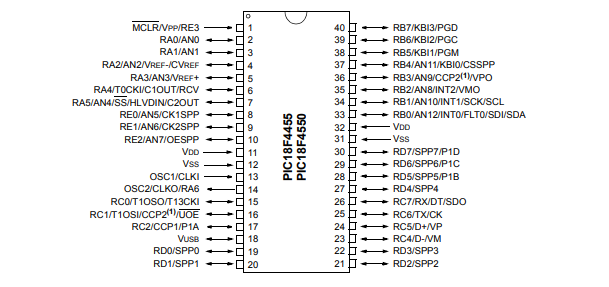

Nota del autor:
Estos apuntes estaban tranquilamente en mi Notion, sin embargo algo me decía que los tenia que compartir, por que así soy yo, a toda madre y tambien porque me hubiera gustado encontrar un recurso como esté hace un tiempo.
bueno ya, serios.
Este documento no pretende sustituir, reemplazar ni competir con la labor de un docente, cuya guía es fundamental e insustituible en el proceso de aprendizaje. La información aquí contenida no debe tomarse como referencia bibliográfica oficial, ni como material de estudio único o definitivo.
Antes de empezar…
Historia leve
A comienzos de la década de 1990, la revolución de los microcontroladores estaba en pleno auge. Empresas como Intel y Motorola habían asentado las bases con sus arquitecturas x86 y 68k, orientadas al mercado de ordenadores de sobremesa y estaciones de trabajo. Sin embargo, en 1993 Microchip Technology dio un paso decisivo al presentar la familia PIC16 (Peripheral Interface Controller)¹, un microcontrolador de 8 bits caracterizado por su bajo coste, gran versatilidad y arquitectura RISC simplificada.
El éxito de los primeros PIC llevó a la evolución hacia dispositivos de gama media y alta. En 1998 llegó la serie PIC18, que mantuvo la filosofía RISC pero amplió la memoria de programa a 64 KB, mejoró el conjunto de instrucciones y añadió complejos periféricos, entre ellos control USB nativo. El PIC18F4455, surge como un microcontrolador de alto rendimiento para aplicaciones industriales y de consumo, ofreciendo 32 KB de memoria Flash, múltiples temporizadores, convertidores A/D de 10 bits y un módulo USB full‑speed integrado².
El Bendito datasheet
https://ww1.microchip.com/downloads/en/devicedoc/39632e.pdf

El datasheet, documento DS39632E publicado por Microchip Technology, contiene toda la información técnica oficial del microcontrolador. No existe recurso más completo ni más confiable que este.
Ahí están los registros, los modos de operación, la configuración de puertos, los periféricos, los tiempos de respuesta, las características eléctricas y los bits de configuración. Todo. Sin excepción.
Cualquier duda técnica que surja durante el desarrollo con este microcontrolador tiene respuesta en ese documento. Antes de buscar en foros o tutoriales externos, consúltelo. La mayoría de las veces, la respuesta ya estaba ahí.
Tenlo abierto. Úsalo. Es la herramienta de trabajo, no el último recurso.
Capitulo 1: Noción
1.1 Introducción
Antes de escribir una sola instrucción en ensamblador, es necesario entender qué hay dentro del microcontrolador y cómo se relaciona. Este capítulo no pretende ser una referencia técnica exhaustiva (tengan a la mano el datasheet) sino una lectura que los guiará en la forma de pensar desde un inicio, y que despues, cuando programen, formular la solución les resultará mas facil.
Para hacer ese recorrido más intuitivo, utilizaremos una analogía que se extiende a lo largo de todo el capítulo: el microcontrolador es una fábrica. Una fábrica que recibe materiales del exterior, los procesa internamente, y despacha resultados hacia afuera. Conforme avancemos, cada componente técnico encontrará su lugar en ese modelo mental.

1.1 La ALU — Unidad Aritmética y Lógica
Toda la actividad de procesamiento del PIC18F4455 ocurre en un único componente: la ALU (Arithmetic Logic Unit), o Unidad Aritmética y Lógica. Es el núcleo computacional del microcontrolador, el componente que ejecuta todas las operaciones matemáticas y lógicas: sumas, restas, comparaciones, desplazamientos de bits, operaciones AND, OR, XOR, entre otras.
La ALU opera con uno o dos operandos. Cuando trabaja con dos datos, uno de ellos siempre proviene del registro W —el registro de trabajo principal del PIC— y el otro puede ser un valor inmediato o un registro de memoria. El resultado puede depositarse de vuelta en W o enviarse a otro registro, según lo indique la instrucción ejecutada.
Es importante comprender que la ALU no toma decisiones por sí sola ni almacena resultados de forma permanente. Su función es exclusivamente ejecutar la operación que se le ordena en ese ciclo de instrucción. La memoria, la lógica de control y la interacción con el exterior dependen de otros componentes.
En nuestra fábrica, la ALU es el director de operaciones: la persona que toma los materiales disponibles, aplica el proceso indicado y entrega el resultado. No guarda nada en sus bolsillos, no decide qué hacer por cuenta propia; simplemente ejecuta la operación que le fue asignada. Para trabajar, necesita tener los materiales cerca. Ahí es donde entran los registros.
1.2 Los Registros
Un registro es un espacio de almacenamiento interno del microcontrolador, capaz de ser leído y modificado mediante instrucciones del procesador. Si se quiere una imagen concreta: es una pizarra pequeña pegada dentro del chip, donde se puede escribir un valor, leerlo cuando se necesite, y borrarlo para escribir uno nuevo.
Existen dos categorías fundamentales de registros:
WREG — El registro de trabajo
Conocido simplemente como registro W, es el operando principal de la ALU. Toda operación aritmética o lógica pasa por él: ya sea como dato de entrada o como destino del resultado. Solo existe un registro W, y su contenido se sobrescribe completamente cada vez que se le asigna un nuevo valor.
File Registers — La memoria de datos
El término F hace referencia a cualquier registro dentro de la RAM interna del PIC. Dentro de esta categoría conviven dos tipos:
- Registros de propósito general (GPR): Son variables temporales, libremente disponibles para el programador. Se usan para guardar datos intermedios, contadores, banderas y cualquier valor que el programa necesite retener entre instrucciones.
- Registros de propósito especial (SFR): Controlan el comportamiento interno del microcontrolador: puertos físicos, temporizadores, módulos de comunicación, conversores analógico-digitales. No son de uso libre; cada uno tiene una función asignada por el fabricante y modificar sus bits produce efectos directos sobre el hardware. Ejemplos de estos son PORTA, TRISA, TMR0 y ADCON1.
En ensamblador, muchas instrucciones operan combinando W y F. Por ejemplo, la instrucción MOVWF F toma el valor que reside en W y lo deposita en el registro de memoria indicado. La instrucción MOVF F, W hace lo contrario: toma el valor de un registro de memoria y lo lleva a W.
Volviendo a la fábrica: el registro W es el escritorio del director. Es el único espacio donde se realiza el trabajo activo en este momento; solo cabe una cosa a la vez, y cuando llega algo nuevo lo anterior desaparece. Los GPR son los cajones del escritorio: guardan materiales que no caben en la mesa ahora mismo pero que se necesitarán pronto. Los SFR, en cambio, son los paneles de control de la maquinaria: cada interruptor y perilla tiene una función específica asignada por el fabricante. Moverlos produce efectos reales e inmediatos sobre los sistemas de la fábrica. No se tocan sin saber exactamente qué hacen.
1.3 MCLR — Master Clear
El pin MCLR (Master Clear) cumple una función crítica y simple al mismo tiempo: reiniciar el microcontrolador. Cuando se le aplica un voltaje bajo —cercano a 0 V— el PIC interrumpe toda ejecución y regresa al estado inicial, exactamente como si acabara de encenderse por primera vez. Todos los registros vuelven a sus valores por defecto, el contador de programa regresa al vector de reset en la dirección 0x0000h, y el programa comienza desde el principio.
Este mecanismo existe porque en sistemas embebidos reales pueden ocurrir situaciones donde el microcontrolador entra en un estado inesperado: un bucle infinito no previsto, una corrupción de datos, una condición de operación fuera de rango. El MCLR es la salida de emergencia que permite recuperar el control sin necesidad de cortar la alimentación.
En la práctica, este pin se conecta a un circuito externo —típicamente una resistencia de pull-up hacia VDD y un botón hacia tierra— que garantiza un reinicio limpio tanto al energizar el sistema como cuando el operador lo requiera manualmente.
En la fábrica, el MCLR es el botón de paro de emergencia en la pared. Si algo sale mal en la línea de producción —una máquina atascada, un proceso en bucle, un estado que nadie sabe cómo resolvió llegar ahí— se presiona el botón, todo se detiene, y la fábrica vuelve a su estado inicial de arranque. No es el procedimiento normal de operación, pero es indispensable que esté ahí. Ahora que sabemos cómo reiniciar la fábrica, conviene entender el lenguaje en que se comunica con el exterior.
1.4 Voltajes en los Pines
El PIC18F4455 opera con una lógica de 5 V, lo que significa que toda comunicación eléctrica con el exterior ocurre dentro de ese rango de voltaje. Comprender cómo el microcontrolador interpreta esas señales es fundamental antes de conectar cualquier componente externo.
Cuando un pin está configurado como entrada, el PIC evalúa el voltaje presente en ese pin y lo traduce a un valor lógico binario:
- Un voltaje superior a 2 V es interpretado como un 1 lógico (nivel alto).
- Un voltaje inferior a ese umbral es interpretado como un 0 lógico (nivel bajo).
No existe un estado intermedio desde el punto de vista del microcontrolador: cualquier voltaje que llegue a un pin de entrada será forzado a uno de esos dos valores. Esto es la esencia de la lógica digital.
Cuando el pin está configurado como salida, la dirección del flujo se invierte: es el PIC quien genera la señal. Entregará aproximadamente 5 V para representar un 1 lógico, o 0 V para representar un 0 lógico.
Un detalle que no debe pasarse por alto: dejar un pin de entrada sin conexión —lo que se conoce como pin flotante— puede provocar lecturas erráticas e impredecibles, ya que el voltaje en ese pin no está definido. Siempre debe garantizarse un nivel lógico claro mediante resistencias de pull-up o pull-down según corresponda.
*Las puertas de nuestra fábrica no están abiertas permanentemente ni aceptan cualquier cosa. Funcionan con un lenguaje binario: 5 V significa "sí, pasa" y 0 V significa "no, detenido". No hay términos medios. Cualquier señal que llegue desde el exterior será interpretada según esa regla. Ahora que conocemos el idioma, podemos hablar de las puertas en sí mismas.*
1.5 Puertos de Entrada y Salida (I/O Ports)
Los puertos de entrada y salida son la frontera física entre el microcontrolador y el mundo exterior. El PIC18F4455 dispone de hasta cinco puertos, identificados como PORTA, PORTB, PORTC, PORTD y PORTE. Cada puerto agrupa un conjunto de pines físicos que pueden configurarse individualmente para recibir o enviar señales.
Antes de operar cualquier pin, es necesario declarar en qué dirección fluirá la información. Para eso existe el registro TRIS.
TRIS — Registro de dirección
Cada puerto tiene su propio registro TRIS (TRISA, TRISB, etc.). Cada bit de este registro corresponde a un pin del puerto, y su valor determina el comportamiento de ese pin:
- Bit en 1 → pin configurado como entrada (el PIC escucha).
- Bit en 0 → pin configurado como salida (el PIC habla).
Un recurso mnemotécnico útil: la letra I de Input se asemeja al número 1, y la letra O de Output se asemeja al número 0. 1 = Input, 0 = Output.
PORT — Registro de datos
Una vez definida la dirección, el registro PORT ejecuta la acción. Leer PORT cuando el pin es entrada devuelve el estado lógico actual del pin físico. Escribir en PORT cuando el pin es salida cambia el nivel de voltaje en ese pin.
LAT — Registro de latch de salida
El registro LAT almacena el valor que queremos mantener en los pines de salida. La diferencia con PORT es sutil pero importante: PORT refleja el estado físico real del pin en ese instante, que puede verse afectado momentáneamente por interferencias externas. LAT guarda el valor que el programador escribió, con independencia de lo que ocurra físicamente. Para operaciones de lectura-modificación-escritura sobre pines de salida, siempre es preferible trabajar con LAT.
No todas las señales que cruzan estas puertas son iguales. Existe una distinción fundamental entre señales digitales y analógicas:
| Característica | Digital | Analógica |
|---|---|---|
| Valores posibles | Solo 0 o 1 | Continuo: cualquier valor en un rango |
| Tipo de señal | Binaria: encendido/apagado | Gradual: varía entre mínimo y máximo |
| Usos comunes | LEDs, botones, motores simples | Sensores de temperatura, fotoceldas, potenciómetros |
| Conversión necesaria | No | Sí, requiere un convertidor analógico-digital (ADC) |
Una señal digital es como un interruptor de luz: solo puede estar encendido o apagado. Una señal analógica es como la perilla de volumen de un radio: puede tomar cualquier valor entre el mínimo y el máximo.
Ejemplo de inicialización básica de PORTA:
CLRF PORTA ; Limpia los latches de salida
CLRF LATA ; Asegura salidas en estado bajo
MOVLW 0x0F ; Configura todos los pines como digitales
MOVWF ADCON1 ; mediante el registro ADCON1
MOVLW 0x07 ; Desactiva el módulo comparador
MOVWF CMCON ; liberando los pines de PORTA
MOVLW 0xCF ; 1100 1111: define dirección de cada pin
MOVWF TRISA ; RA<3:0> entradas, RA<5:4> salidas
Las puertas de carga y descarga de la fábrica ya tienen nombre: PORTA, PORTB, PORTC, PORTD y PORTE. El registro TRIS es el panel que define el sentido de cada puerta: si entra mercancía o si sale. El registro PORT es el acto de abrir o cerrar esa puerta en tiempo real. Y el registro LAT es la orden firmada que permanece archivada aunque la puerta haya tenido un momento de interferencia: garantiza que lo que se ordenó es lo que se ejecuta.
Resumen del Capítulo
Recorramos la fábrica una última vez, ahora con todos sus componentes en su lugar.
En el centro de operaciones está el director —la ALU—, que ejecuta cada operación matemática y lógica que el programa le encomienda. Para trabajar, tiene a su disposición un escritorio —el registro W— donde coloca los datos que está procesando en este momento. Cuando necesita guardar algo temporalmente, usa los cajones cercanos —los GPR—. Y cuando necesita interactuar con la maquinaria interna de la fábrica, recurre a los paneles de control —los SFR—, cada uno con una función específica e inamovible.
La fábrica tiene un botón de paro de emergencia —el MCLR— que detiene todo y reinicia el sistema al estado inicial. No se usa a diario, pero su presencia es indispensable.
Toda comunicación con el exterior ocurre en un lenguaje binario de 0 V y 5 V: las únicas dos palabras que el microcontrolador entiende y habla. Las puertas por donde entra y sale esa comunicación son los puertos I/O, gobernados por tres registros que trabajan en conjunto: TRIS define el sentido de cada puerta, PORT ejecuta la lectura o escritura en tiempo real, y LAT preserva la orden de salida con independencia de las condiciones físicas externas.
Capítulo 2: Organización de la Memoria
2.0 Introducción
Antes de escribir una sola instrucción, debemos de entender dónde vive la información dentro del PIC18F4455. El microcontrolador no tiene una sola memoria; tiene tres, cada una con un propósito distinto y bien definido.
En la teoria tal ves puede ser complicado, pero en la practica verás como todo tiene sentido.

2.1 Los tres tipos de memoria
El PIC18F4455 cuenta con tres espacios de memoria diferenciados:
- Memoria de programa: Aquí reside el código que escribimos. Es memoria Flash, lo que significa que su contenido persiste aunque el microcontrolador se apague.
- RAM de datos: Es la memoria de trabajo, donde el programa almacena variables y resultados temporales durante la ejecución. Su contenido se pierde al apagar el dispositivo.
- EEPROM de datos: Una memoria no volátil de propósito especial, pensada para guardar datos que deben sobrevivir a un apagado, como configuraciones o calibraciones. Para efectos prácticos, se accede a ella como si fuera un periférico, a través de registros de control.
Una analogía útil: imaginemos que el microcontrolador es un chef en una cocina. La memoria de programa es el recetario, escrito de forma permanente; el chef lo consulta pero no lo modifica mientras cocina. La RAM de datos es la mesa de trabajo, donde coloca los ingredientes y utensilios que necesita en este momento. La EEPROM es la despensa, donde guarda provisiones que deben seguir ahí al día siguiente.
Al tratarse de una arquitectura Harvard, las memorias de programa y de datos utilizan buses físicamente separados. Esto significa que el microcontrolador puede leer una instrucción del programa y acceder a un dato en RAM al mismo tiempo, sin que una operación bloquee a la otra, lo que incrementa significativamente la eficiencia de ejecución.
2.2 Organización de la memoria de programa
La memoria de programa del PIC18F4455 tiene una capacidad de 24 KB de memoria Flash, suficiente para almacenar hasta 12,288 instrucciones de una sola palabra. El contador de programa (PC) es de 21 bits, lo que le permite direccionar hasta 2 MB de espacio, aunque físicamente solo una fracción de ese espacio está implementada. Si el programa intenta acceder a una dirección fuera del rango implementado, el microcontrolador simplemente ejecuta un NOP, es decir, no hace nada y continúa.
Dentro de la memoria de programa existen tres direcciones fijas de especial importancia:
- 0x0000h — Vector de Reset: punto de inicio de ejecución tras un reinicio.
- 0x0008h — Vector de interrupción de alta prioridad.
- 0x0018h — Vector de interrupción de baja prioridad.

2.3 El Contador de Programa (PC)
El Contador de Programa es el registro que le indica al microcontrolador cuál es la siguiente instrucción que debe ejecutar. Es de 21 bits de ancho y está dividido en tres registros de 8 bits cada uno: PCL, PCH y PCU.
De los tres, únicamente PCL es directamente legible y escribible. Los otros dos —PCH y PCU— no pueden modificarse directamente; sus actualizaciones se realizan a través de los registros auxiliares PCLATH y PCLATU.
La analogía del marcador de páginas funciona bien aquí: el PC es el dedo que señala en qué línea del recetario está leyendo el chef en este momento. Cada vez que termina una instrucción, el dedo avanza dos páginas (el PC se incrementa en 2, ya que las instrucciones se almacenan en palabras de 2 bytes). Cuando se ejecuta un salto como CALL o GOTO, el dedo salta directamente a otra sección del recetario. Los registros PCLATH y PCLATU son como notas adhesivas donde el chef apunta en qué página estaba antes de saltar, para poder regresar después.
2.4 La Pila de Direcciones de Retorno
Cuando el programa ejecuta una subrutina con CALL, necesita recordar de dónde vino para poder regresar al terminar. Ese mecanismo de memoria se llama pila de direcciones de retorno (Return Address Stack), y el PIC18F4455 soporta hasta 31 niveles de profundidad.
El funcionamiento es el siguiente: al ejecutarse un CALL, el valor actual del PC se guarda en la cima de la pila. Al ejecutarse un RETURN, ese valor se recupera y la ejecución continúa desde donde se había interrumpido.
Pensemos en una cocinera que está preparando una receta compleja. En un momento dado, la receta le dice: "prepara primero la salsa base". Ella anota en una libreta la línea donde estaba (CALL), va a preparar la salsa, y cuando termina regresa a la libreta para continuar donde lo dejó (RETURN). Si mientras prepara la salsa necesita hacer un caldo, anota eso también encima de la nota anterior. La libreta puede tener hasta 31 notas apiladas; si intenta agregar una más, la torre de notas se derrumba.
Vale la pena aclarar un detalle técnico importante: la pila de retorno no forma parte ni de la memoria de programa ni de la RAM de datos. Es un espacio de memoria independiente, dedicado exclusivamente a esta función. Esto significa que su uso no consume variables ni espacio de código del programador.
Acceso a la cima de la pila: registros TOSU, TOSH y TOSL
Aunque la pila completa no es directamente accesible, el PIC18F4455 expone su nivel más alto —la cima— a través de tres registros de función especial que juntos forman una dirección de 21 bits:
- TOSL — Top of Stack Low: contiene los bits 7:0 de la dirección en la cima.
- TOSH — Top of Stack High: contiene los bits 15:8.
- TOSU — Top of Stack Upper: contiene los bits 20:16.
Estos tres registros reflejan en todo momento el contenido de la posición apuntada por el STKPTR. Después de ejecutar un CALL, RCALL o atender una interrupción, el programador puede leer TOSU:TOSH:TOSL para conocer exactamente qué dirección fue guardada. También es posible escribir en estos registros para modificar la dirección de retorno antes de ejecutar un RETURN, lo que ofrece una flexibilidad considerable para implementar estructuras de control avanzadas.
Siguiendo la analogía de la cocinera: TOSU, TOSH y TOSL son la ventana que permite ver —y si es necesario corregir— la nota que está en el tope de la libreta, sin tener que deshacer toda la pila.
Una advertencia que el datasheet señala explícitamente: mientras se accede a estos registros, deben deshabilitarse las interrupciones globales. Si ocurre una interrupción en medio de una lectura o escritura de la cima de la pila, los valores almacenados pueden corromperse de forma silenciosa, generando errores de ejecución difíciles de rastrear.

2.5 El Registro STKPTR y el manejo de la pila
El registro STKPTR (Stack Pointer) es el encargado de llevar el control de cuántos niveles de la pila están ocupados en un momento dado. Su valor puede ir de 0 a 31, y se incrementa con cada PUSH y se decrementa con cada POP.
Dentro de este registro conviven dos bits de estado importantes:
- STKFUL (Stack Full): Se activa cuando la pila ha llegado a su límite de 31 niveles. Es la señal de advertencia de que la torre de notas está a punto de caerse.
- STKUNF (Stack Underflow): Se activa cuando se intenta extraer un valor de una pila que ya está vacía, es decir, cuando se intenta leer una nota de una libreta que no tiene ninguna.
El comportamiento del microcontrolador ante estas situaciones depende del bit de configuración STVREN:
- Si STVREN está activo, un desbordamiento o subdesbordamiento provoca un reset del dispositivo. Es la alarma de seguridad que, ante un problema grave, detiene todo y reinicia el sistema.
- Si STVREN está inactivo, el bit de estado correspondiente se activa como advertencia, pero el sistema sigue funcionando. La alarma suena, pero no apaga el edificio.
2.6 Instrucciones PUSH y POP
Las instrucciones PUSH y POP permiten manipular la pila directamente desde el código, sin necesidad de ejecutar una subrutina.
- PUSH toma el valor actual del PC y lo coloca en la cima de la pila, incrementando el STKPTR.
- POP descarta el valor en la cima de la pila, decrementando el STKPTR sin transferir ese valor a ningún lugar.
Siguiendo la analogía de los platos: PUSH coloca un plato nuevo encima de la torre; POP retira el plato de la cima y lo descarta. Si se intenta quitar un plato de una torre vacía, el sistema registra el error mediante el bit STKUNF.
2.7 Fast Register Stack
El PIC18F4455 incluye una pila de registros rápida (Fast Register Stack) diseñada específicamente para acelerar el manejo de interrupciones. Cuando ocurre una interrupción, el procesador guarda automáticamente el contenido de tres registros críticos —STATUS, WREG y BSR— en esta pila especial, sin necesidad de que el programador lo haga manualmente.
Al retornar de la interrupción con la instrucción RETFIE, FAST, esos valores se restauran de forma inmediata.
Hay una restricción importante: esta pila tiene un solo nivel de profundidad. Si el sistema maneja tanto interrupciones de alta como de baja prioridad simultáneamente, una interrupción de alta prioridad puede sobrescribir los valores guardados por una de baja prioridad. En ese caso, el programador debe guardar manualmente esos registros en RAM.
2.8 Pipeline de instrucciones
El PIC18F4455 ejecuta las instrucciones mediante un mecanismo llamado pipeline, que divide el ciclo de instrucción en cuatro fases de reloj: Q1, Q2, Q3 y Q4. La clave de este mecanismo es que mientras una instrucción se está ejecutando, la siguiente ya se está leyendo de memoria. Ambas operaciones ocurren en paralelo.
El resultado práctico es que, en condiciones normales, cada instrucción se ejecuta en un solo ciclo de reloj efectivo.
La analogía de la línea de ensamblaje lo ilustra bien: en una fábrica, mientras un operario ensambla una pieza, el siguiente operario ya está preparando la pieza que viene detrás. La producción nunca se detiene a esperar. La única excepción ocurre cuando una instrucción modifica el PC directamente, como un GOTO: en ese caso, la instrucción que ya estaba siendo leída anticipadamente queda invalidada y debe descartarse, lo que cuesta un ciclo adicional.

2.9 Organización de la memoria de datos
La RAM de datos del PIC18F4455 tiene una capacidad de 2048 bytes, organizados en 8 bancos de 256 bytes cada uno. El direccionamiento es de 12 bits, lo que en teoría permite hasta 4096 bytes, pero solo la mitad está físicamente implementada en este dispositivo.
Dentro de esta RAM coexisten dos tipos de registros:
- GPR (General Purpose Registers): Son los registros de propósito general, disponibles libremente para el programador. Inician en la parte baja del Banco 0 y crecen hacia arriba. No se inicializan al encender el dispositivo, por lo que su contenido inicial es indeterminado.
- SFR (Special Function Registers): Son los registros de control del microcontrolador. Ocupan la parte alta del Banco 15, desde la dirección 0xF60h hasta 0xFFFh. Cada uno de estos registros tiene una función específica asignada por el fabricante y controla algún aspecto del hardware: puertos, temporizadores, módulo USB, etc.
2.10 El Registro de Selección de Banco (BSR)
Dado que la memoria de datos está dividida en bancos, el microcontrolador necesita saber en qué banco se encuentra el registro que se desea acceder. Para eso existe el BSR (Bank Select Register), un registro de 4 bits que indica el banco activo en un momento dado.
Imaginemos que la RAM de datos es un gran archivo con 16 cajones (bancos). El BSR es la etiqueta que dice cuál cajón está abierto en este momento. Cuando se quiere acceder a un registro, la instrucción proporciona los 8 bits de la dirección dentro del cajón, y el BSR proporciona los 4 bits que identifican cuál cajón es. Juntos forman la dirección completa de 12 bits.
Es responsabilidad del programador asegurarse de que el BSR apunte al banco correcto antes de realizar cualquier operación. Un error en la selección de banco puede provocar que se escriba en un registro equivocado, con consecuencias impredecibles.

2.11 El Banco de Acceso
Para evitar la necesidad de actualizar el BSR constantemente al acceder a los registros más frecuentes, el PIC18F4455 implementa un Banco de Acceso: un bloque de 256 bytes de acceso directo que no requiere configurar el BSR.
Este banco está compuesto por dos zonas:
- Los primeros 96 bytes (0x00h a 0x5Fh) corresponden a GPR del Banco 0, ideales para variables de uso frecuente.
- Los últimos 160 bytes (0x60h a 0xFFh) corresponden a los SFR del Banco 15, donde residen los registros de control de periféricos.
Cuando una instrucción utiliza el bit de acceso con valor 0, el BSR es ignorado completamente y se usa el Banco de Acceso directamente. Esto permite acceder a los registros más importantes en un solo ciclo, sin pasos intermedios.
2.12 RAM USB
Los bancos 4 al 7 de la RAM de datos tienen un comportamiento especial: están mapeados sobre una RAM de doble puerto compartida entre el núcleo del microcontrolador y el módulo USB.
Cuando el módulo USB está desactivado, estos bancos funcionan como RAM de propósito general sin ninguna restricción. Cuando el módulo USB está activo, esta memoria se convierte en el área de transferencia de datos entre el microcontrolador y el motor de interfaz USB (SIE). El Banco 4 en particular se reserva para la gestión de los buffers USB y no debe utilizarse para otros fines mientras el módulo esté habilitado.
Resumen del capítulo
- El PIC18F4455 cuenta con tres tipos de memoria: Flash de programa, RAM de datos y EEPROM.
- La arquitectura Harvard permite acceder a ambas memorias en paralelo, aumentando la eficiencia.
- El contador de programa gestiona qué instrucción se ejecuta a continuación y se incrementa de dos en dos.
- La pila de retorno soporta hasta 31 niveles de llamadas anidadas, gestionadas mediante PUSH, POP y el registro STKPTR.
- La RAM de datos se divide en 8 bancos de 256 bytes, con GPR para variables y SFR para control de periféricos.
- El BSR selecciona el banco activo; el Banco de Acceso permite saltarse esa selección para los registros más frecuentes.
- Los bancos 4 al 7 funcionan como RAM USB cuando el módulo USB está habilitado.
Capítulo 3: Puertos de Entrada y Salida (I/O Ports)
3.0 Introducción
Hasta este punto hemos entendido cómo el PIC18F4455 organiza su memoria y ejecuta instrucciones internamente. Ahora toca la frontera entre el microcontrolador y el mundo físico: los puertos de entrada y salida, conocidos como puertos I/O.
Un puerto I/O es el mecanismo mediante el cual el microcontrolador se comunica con el exterior: recibe señales de sensores, botones e interruptores, y envía señales hacia LEDs, motores, pantallas y cualquier otro dispositivo externo. Sin los puertos, el microcontrolador sería un procesador completamente aislado, incapaz de interactuar con ningún circuito.
El PIC18F4455 dispone de hasta cinco puertos: A, B, C, D y E. Cada puerto agrupa un conjunto de pines físicos que pueden configurarse individualmente como entradas o salidas.

3.1 Los tres registros de todo puerto
Independientemente del puerto del que se hable, todos comparten la misma estructura de control: tres registros que trabajan en conjunto.
TRIS — Registro de dirección de datos
Este registro define si cada pin del puerto actúa como entrada o como salida. Es el punto de partida obligatorio antes de cualquier operación: sin configurar el TRIS, el microcontrolador no sabe qué hacer con sus pines.
La regla es simple:
- Bit en 1 → pin configurado como entrada (el PIC escucha).
- Bit en 0 → pin configurado como salida (el PIC habla).
Un truco mnemotécnico que funciona: la letra I de Input se parece al número 1, y la letra O de Output se parece al número 0. 1 = Input, 0 = Output.
PORT — Registro de datos
Una vez definida la dirección, el registro PORT es quien ejecuta la acción: si el pin es entrada, leer PORT devuelve el estado lógico actual del pin físico. Si el pin es salida, escribir en PORT cambia el nivel de voltaje en ese pin.
LAT — Registro de latch de salida
El registro LAT almacena el valor que queremos mantener en los pines de salida. La diferencia con PORT es sutil pero importante: PORT refleja el estado físico real del pin en ese instante, que puede verse afectado momentáneamente por interferencias externas. LAT, en cambio, guarda el valor que nosotros escribimos, sin importar lo que ocurra físicamente en el pin.
Para ilustrarlo: imaginemos que PORT es un termómetro en la ventana, que muestra la temperatura real en este momento. LAT es el termostato que nosotros programamos: independientemente de lo que ocurra afuera, el termostato mantiene el valor que le indicamos. Para operaciones de lectura-modificación-escritura sobre pines de salida, siempre es preferible trabajar con LAT.
3.2 PORTA — El puerto más versátil

PORTA es un puerto bidireccional de 8 bits. Su registro de dirección es TRISA y su registro de latch es LATA. Lo que lo distingue de los demás puertos es que varios de sus pines están multiplexados con funciones analógicas y de comparación, lo que lo convierte en el puerto más flexible —y también el que requiere más cuidado al configurar.
Multiplexado significa que un mismo pin físico puede cumplir más de una función dependiendo de cómo se configure el software. Es como un conector de audio que puede funcionar como entrada de micrófono o como salida de audífonos según cómo se configure el sistema.
Los pines de PORTA y sus funciones alternativas son:
| Pin | Función alternativa | Descripción |
|---|---|---|
| RA0 | AN0 | Canal 0 del convertidor A/D, entrada del comparador C1− |
| RA1 | AN1 | Canal 1 del convertidor A/D, entrada del comparador C2− |
| RA2 | AN2 / VREF− / CVREF | Canal 2 del A/D, referencia de voltaje baja, salida de referencia del comparador |
| RA3 | AN3 / VREF+ | Canal 3 del A/D, referencia de voltaje alta |
| RA4 | T0CKI / C1OUT / RCV | Entrada de reloj del Timer0, salida del comparador 1, entrada USB externa |
| RA5 | AN4 / SS / HLVDIN / C2OUT | Canal 4 del A/D, Slave Select del MSSP, detección de voltaje, salida del comparador 2 |
| RA6 | OSC2 / CLKO | Pin del oscilador principal; disponible como I/O solo en modos de oscilador interno |
Un detalle crítico que el datasheet señala explícitamente: al encender el dispositivo (Power-on Reset), los pines RA5 y RA3:RA0 se configuran automáticamente como entradas analógicas. Esto significa que si se intenta usarlos como I/O digital sin configurarlos previamente, el puerto simplemente no responderá como se espera. Por eso la inicialización de PORTA siempre debe incluir la configuración de ADCON1 y CMCON.
Ejemplo de inicialización de PORTA:
CLRF PORTA ; Limpia los latches de salida de PORTA
CLRF LATA ; Método alternativo para limpiar latches de salida
MOVLW 0x0F ; Configura el convertidor A/D:
MOVWF ADCON1 ; todos los pines de PORTA como I/O digital
MOVLW 0x07 ; Desactiva el módulo comparador:
MOVWF CMCON ; todos los pines del comparador como entrada digital
MOVLW 0xCF ; Valor de configuración: 1100 1111
MOVWF TRISA ; RA<3:0> como entradas, RA<5:4> como salidas
3.3 ADCON1 — Control del convertidor analógico-digital
El registro ADCON1 (A/D Control Register 1) define qué pines del microcontrolador operan como entradas analógicas y cuáles como I/O digital. Su importancia radica en que, por defecto tras un reset, varios pines de PORTA y PORTB se configuran automáticamente como analógicos. Si no se configura este registro explícitamente, esos pines no responderán a lecturas o escrituras digitales.
Los bits que determinan esta configuración son PCFG3:PCFG0, los cuatro bits menos significativos del registro. Sus combinaciones posibles van desde 0000 (todos los pines habilitados como analógicos) hasta 1111 (todos configurados como digitales). En la práctica, cuando se trabaja exclusivamente con I/O digital, se carga el valor 0x0F en ADCON1 para deshabilitar por completo el módulo A/D y liberar todos los pines.
Pensemos en ADCON1 como el panel de configuración de un conmutador telefónico: cada línea puede estar conectada a la red analógica o a la digital. Si no se especifica, el conmutador usa su configuración por defecto, que puede no ser la que necesitamos.
3.4 CMCON — Control del módulo comparador
El módulo comparador del PIC18F4455 está físicamente conectado a los pines de PORTA. Su función es comparar dos voltajes analógicos y determinar cuál de los dos es mayor, entregando una salida digital en consecuencia.
El registro CMCON (Comparator Module Control) controla el modo de operación de este módulo mediante sus tres bits menos significativos, CM2:CM0, que admiten ocho combinaciones posibles. Cuando se carga el valor 0x07 en CMCON, el módulo comparador queda completamente desactivado, liberando los pines de PORTA para uso como I/O digital estándar.
Este paso es obligatorio en la inicialización cuando no se requiere la función de comparación, ya que de lo contrario el módulo podría interferir con las lecturas digitales de PORTA. El datasheet es explícito al respecto: no se debe asumir que el comparador viene desactivado por defecto; debe desactivarse explícitamente en el código.
3.5 PORTB — Puerto digital con características especiales

PORTB es un puerto bidireccional de 8 bits. Su registro de dirección es TRISB y su registro de latch es LATB. A diferencia de PORTA, todos sus pines operan en modo digital, aunque varios de ellos también están multiplexados con funciones analógicas del convertidor A/D.
PORTB tiene dos características que lo distinguen de los demás puertos:
Pull-ups internos configurables
Cada pin de PORTB tiene una resistencia de pull-up interna que puede activarse mediante el bit RBPU del registro INTCON2. Cuando este bit se limpia (valor 0), todas las resistencias de pull-up se habilitan simultáneamente. Esto es útil cuando se conectan botones o interruptores al puerto, ya que evita la necesidad de colocar resistencias externas para garantizar un nivel lógico definido cuando el botón está abierto.
La analogía es sencilla: imaginar que cada pin tiene un resorte interno que lo mantiene en nivel alto (1) cuando nada lo está jalando hacia abajo. Al presionar un botón conectado a tierra, ese resorte cede y el pin cae a nivel bajo (0). Al soltar el botón, el resorte vuelve a levantarlo.
Interrupción por cambio de estado (Interrupt-on-Change)
Los pines RB7:RB4 tienen la capacidad de generar una interrupción automáticamente cuando detectan un cambio en su nivel lógico. El PIC compara el estado actual de estos pines con el último valor leído y, si detecta una diferencia, activa el bit de bandera RBIF en el registro INTCON.
Esta función es especialmente útil para detectar pulsaciones de botones sin necesidad de estar consultando el estado del puerto constantemente en el programa (lo que se conoce como polling). En cambio, el microcontrolador puede dedicarse a otras tareas y solo interrumpir su ejecución cuando realmente ocurre algo en esos pines.
Ejemplo de inicialización de PORTB:
CLRF PORTB ; Limpia los latches de salida de PORTB
CLRF LATB ; Método alternativo para limpiar latches
MOVLW 0x0E ; Configura pines RB<4:0> como I/O digital
MOVWF ADCON1 ; mediante ADCON1
MOVLW 0xCF ; Valor de configuración: 1100 1111
MOVWF TRISB ; RB<3:0> como entradas, RB<5:4> como salidas,
; RB<7:6> como entradas
3.6 PORTC — El puerto de comunicaciones

PORTC es un puerto bidireccional de 7 bits (el pin RC3 no está implementado en el PIC18F4455). Su registro de dirección es TRISC y su registro de latch es LATC.
Lo que distingue a PORTC es que está principalmente asociado a los módulos de comunicación serial del microcontrolador. La mayoría de sus pines están multiplexados con protocolos como EUSART, SPI, I²C y USB, que se abordarán en capítulos posteriores. Por esta razón, al configurar pines de PORTC que comparten función con periféricos, es necesario consultar la sección correspondiente del datasheet para asegurarse de que el bit TRIS se configura correctamente, ya que algunos periféricos pueden tomar control de la dirección del pin por encima de lo que indique TRISC.
Un caso particular son los pines RC4 y RC5, que están multiplexados con el módulo USB interno. Estos pines no tienen bits TRISC asociados y, cuando el módulo USB está activo, su dirección es determinada enteramente por el estado de dicho módulo.
Ejemplo de inicialización de PORTC:
CLRF PORTC ; Limpia los latches de salida de PORTC
CLRF LATC ; Método alternativo para limpiar latches
MOVLW 0x07 ; Valor de configuración: 0000 0111
MOVWF TRISC ; RC<5:0> como salidas, RC<7:6> como entradas
3.7 PORTD — Puerto de propósito general

PORTD es un puerto bidireccional de 8 bits, disponible únicamente en los dispositivos de 40 y 44 pines. Su registro de dirección es TRISD y su registro de latch es LATD. Todos sus pines utilizan buffers de entrada tipo Schmitt Trigger y pueden configurarse individualmente como entrada o salida.
Al igual que PORTB, PORTD cuenta con resistencias de pull-up internas, controladas por el bit RDPU del registro PORTE. Este bit habilita o deshabilita todas las pull-ups del puerto simultáneamente.
Tres de sus pines —RD5, RD6 y RD7— están multiplexados con las salidas P1B, P1C y P1D del módulo Enhanced CCP, que permite generar señales PWM para controlar motores y otros dispositivos analógicos.
Ejemplo de inicialización de PORTD:
CLRF PORTD ; Limpia los latches de salida de PORTD
CLRF LATD ; Método alternativo para limpiar latches
MOVLW 0xCF ; Valor de configuración: 1100 1111
MOVWF TRISD ; RD<3:0> como entradas, RD<5:4> como salidas,
; RD<7:6> como entradas
3.8 PORTE — El puerto pequeño

PORTE es un puerto de 4 bits disponible en los dispositivos de 40 y 44 pines. Tres de sus pines —RE0, RE1 y RE2— son configurables individualmente como entrada o salida. El cuarto pin, RE3, es de entrada únicamente y está compartido con la función MCLR (Master Clear): cuando MCLR está habilitado por configuración, RE3 funciona como el pin de reset externo del dispositivo.
Sus tres pines configurables están multiplexados con los canales analógicos AN5, AN6 y AN7 del convertidor A/D, por lo que su configuración inicial también requiere ajustar el registro ADCON1.
Ejemplo de inicialización de PORTE:
CLRF PORTE ; Limpia los latches de salida de PORTE
CLRF LATE ; Método alternativo para limpiar latches
MOVLW 0x0A ; Configura entradas analógicas en ADCON1
MOVWF ADCON1
MOVLW 0x07 ; Desactiva comparadores
MOVWF CMCON
MOVLW 0x03 ; Valor de configuración de dirección
MOVWF TRISE ; RE<0> como entrada, RE<1> como salida, RE<2> como entrada
Resumen del capítulo
- Cada puerto dispone de tres registros: TRIS define la dirección, PORT ejecuta la lectura o escritura, y LAT almacena el valor de salida de forma estable.
- La regla de oro: 1 = Input, 0 = Output en el registro TRIS.
- PORTA es el puerto más versátil, con pines multiplexados para funciones analógicas. Siempre debe inicializarse configurando ADCON1 y CMCON.
- PORTB ofrece pull-ups internas y la capacidad de generar interrupciones por cambio de estado en los pines RB7:RB4.
- PORTC está orientado a comunicaciones seriales; sus pines comparten función con USB, SPI, I²C y EUSART.
- PORTD es un puerto digital de propósito general con pull-ups configurables, disponible solo en dispositivos de 40/44 pines.
- PORTE es un puerto de 4 bits cuyo pin RE3 comparte función con el pin de reset MCLR.
El siguiente capítulo abordará los temporizadores, comenzando con el módulo Timer0.
Capítulo 4: Temporizadores (Timer Modules)
4.0 ¿Para qué sirve un temporizador?
En los microcontroladores. Saber cuándo encender una señal, cuánto tiempo mantenerla activa, o con qué frecuencia ejecutar una tarea son problemas que aparecen constantemente en cualquier proyecto. Para resolver esto existe el módulo temporizador.
Un temporizador es esencialmente un contador interno que se incrementa con cada ciclo de reloj del microcontrolador. Cuando ese contador llega a su valor máximo y desborda, puede generar una interrupción, reiniciarse automáticamente, o activar alguna otra acción definida por el programador.
La analogía más directa es un cronómetro de cocina: se configura para un tiempo determinado, corre en segundo plano mientras el chef hace otras cosas, y cuando llega a cero suena la alarma. El microcontrolador puede seguir ejecutando código mientras el temporizador corre, y simplemente reaccionar cuando ocurre el desbordamiento.
El PIC18F4455 cuenta con cuatro módulos temporizadores: Timer0, Timer1, Timer2 y Timer3. Cada uno tiene características distintas que lo hacen más adecuado para ciertos tipos de tareas.

4.1 Timer0 — El temporizador de propósito general
Timer0 es el temporizador más flexible del PIC18F4455. Puede operar como temporizador o como contador externo, y soporta dos modos de resolución: 8 bits o 16 bits, seleccionables por software.
En modo temporizador, se incrementa con cada ciclo de instrucción interno (FOSC/4). En modo contador, se incrementa con cada transición detectada en el pin externo RA4/T0CKI, lo que permite contar eventos físicos del exterior, como pulsos de un sensor o encoder.
Todo su comportamiento se controla a través del registro T0CON, cuyos bits más relevantes son:
| Bit | Nombre | Función |
|---|---|---|
| TMR0ON | Encendido | Habilita o detiene el temporizador |
| T08BIT | Modo | 1 = 8 bits, 0 = 16 bits |
| T0CS | Fuente de reloj | 0 = interno, 1 = pin externo T0CKI |
| T0SE | Flanco activo | 0 = flanco de subida, 1 = flanco de bajada |
| PSA | Prescaler | 0 = asignado, 1 = desactivado |
| T0PS2:T0PS0 | Razón del prescaler | De 1:2 hasta 1:256 |
Cuando el registro TMR0 desborda —de 0xFF a 0x00 en 8 bits, o de 0xFFFF a 0x0000 en 16 bits— se activa el bit de bandera TMR0IF, que puede generar una interrupción si está habilitada mediante TMR0IE.
El prescaler merece una mención especial. Es un divisor de frecuencia que se antepone al temporizador: si se configura una razón de 1:8, el temporizador solo se incrementa una vez por cada 8 pulsos de reloj. Esto permite medir intervalos de tiempo más largos sin necesidad de intervenir constantemente en el código. Pensemos en él como los engranajes de un reloj: reducen la velocidad de la manecilla de segundos para que la de minutos avance más despacio.
4.2 Timer1 — El temporizador de 16 bits con oscilador propio
Timer1 es un temporizador de 16 bits que opera contando desde 0x0000 hasta 0xFFFF. Al desbordarse activa el bit TMR1IF y puede generar una interrupción. Su registro de control es T1CON.
Lo que distingue a Timer1 de los demás es que dispone de su propio oscilador interno de baja potencia, diseñado para trabajar con un cristal externo de 32.768 kHz. Esto lo hace ideal para implementar un reloj en tiempo real (RTC) dentro del microcontrolador, sin necesidad de un circuito adicional dedicado. Con un cristal de reloj barato y unas pocas líneas de código, Timer1 puede llevar la cuenta de segundos, minutos y horas mientras el resto del sistema duerme en modo de bajo consumo.
Sus modos de operación son tres: temporizador con reloj interno, contador síncrono externo y contador asíncrono externo. En modo de lectura y escritura de 16 bits —habilitado con el bit RD16— ambos bytes del temporizador se actualizan de forma atómica, evitando lecturas inconsistentes cuando el byte bajo desborda al byte alto entre dos instrucciones consecutivas.
4.3 Timer2 — El temporizador con periodo configurable
Timer2 es un temporizador de 8 bits con una característica que lo diferencia de los demás: en lugar de contar hasta desbordarse, cuenta hasta igualar el valor almacenado en el registro PR2 (Period Register). Cuando TMR2 alcanza ese valor, se reinicia automáticamente a 0x00 y genera una señal de salida.
Esto lo hace especialmente útil cuando se necesita una señal periódica con frecuencia exacta y configurable, como la base de tiempo para generar señales PWM a través del módulo CCP. También puede usarse opcionalmente como fuente de reloj para el módulo de comunicación serial MSSP en modo SPI.
Timer2 incorpora tanto un prescaler (1:1, 1:4 o 1:16) como un postscaler (de 1:1 hasta 1:16). El prescaler divide la frecuencia de entrada antes de que llegue al contador; el postscaler divide la frecuencia de la señal de salida antes de generar la interrupción. Juntos ofrecen un rango amplio de frecuencias sin necesidad de intervención continua del programa.
4.4 Timer3 — El hermano de Timer1
Timer3 es funcionalmente muy similar a Timer1: es un temporizador/contador de 16 bits con soporte para lectura y escritura atómica mediante el bit RD16, y puede operar en modo temporizador, contador síncrono o contador asíncrono.
La diferencia principal radica en su integración con los módulos CCP1 y CCP2: a través de los bits T3CCP2:T3CCP1 del registro T3CON, es posible asignar Timer3 como fuente de tiempo para uno o ambos módulos CCP de forma independiente. Esto da al programador mayor flexibilidad cuando se trabajan múltiples señales de captura, comparación o PWM simultáneamente.
Al igual que Timer1, Timer3 puede utilizar el oscilador de Timer1 como fuente de reloj externa, lo que permite que ambos compartan el mismo cristal de 32.768 kHz.
Resumen del capítulo
- Los temporizadores son contadores internos que permiten medir tiempo, generar señales periódicas y detectar eventos externos sin detener la ejecución del programa.
- Timer0 es el más flexible: opera en 8 o 16 bits, como temporizador o contador externo, con prescaler de hasta 1:256.
- Timer1 es un temporizador de 16 bits con oscilador propio para cristales de 32 kHz, ideal para implementar relojes en tiempo real.
- Timer2 cuenta hasta un valor configurable (PR2) en lugar de desbordarse, lo que lo hace la base de tiempo preferida para señales PWM.
- Timer3 es equivalente a Timer1 en funcionalidad, con la adición de poder asignarse independientemente a los módulos CCP1 y CCP2.
Capítulo 5: batallar con ensamblador

5.0 ¿Por qué ensamblador?
Cuando se empieza a programar microcontroladores, es común preguntarse por qué aprender ensamblador si existen lenguajes de más alto nivel como C que hacen lo mismo con menos código.
El ensamblador es el lenguaje más cercano al hardware que existe sin escribir directamente en binario. Cada instrucción que se escribe corresponde exactamente a una operación que el procesador ejecuta. No hay capas de abstracción, no hay compilador tomando decisiones por el programador, no hay código oculto que se ejecuta sin que uno lo sepa. Lo que se escribe es exactamente lo que ocurre dentro del chip.
Esto tiene una consecuencia práctica muy importante: quien aprende ensamblador aprende a pensar como el procesador.
Nota del autor
Despues de terminar con ensamblador, tuve la oportunidad de explorar cómo funciona la Ethereum Virtual Machine (EVM), que es el entorno de ejecución sobre el que corren los contratos inteligentes en la red Ethereum. La EVM tiene su propio conjunto de instrucciones de bajo nivel, su propio modelo de memoria con stack, memory y storage, y su propia lógica de ejecución secuencial.
Lo que me parecio genial fue que me sentia familiarizado al analizar codigo en bajo nivel. El modelo mental que había adquirido era una nueva skill, quien diria que me serviría para eso.
5.1 El pensamiento declarativo vs. el pensamiento descriptivo
Antes de escribir código, conviene entender cómo cambia la forma de pensar al programar en ensamblador.
En lenguajes de alto nivel como Python o JavaScript, el programador declara qué quiere que ocurra y el lenguaje se encarga de los detalles. Se dice: "suma estos dos números" y el compilador o intérprete resuelve cómo hacerlo, en qué registros, con qué instrucciones, en qué orden.
En ensamblador, el programador describe exactamente cómo debe ocurrir cada cosa, paso a paso, sin omitir ningún detalle. No existe el concepto de "suma estos dos números" como una sola operación abstracta. En cambio, hay que indicar: carga el primer número en W, carga el segundo número en un registro, ejecuta la suma, decide dónde guardar el resultado.
Este nivel de detalle puede parecer excesivo al principio. Con el tiempo, se convierte en una habilidad: el programador que domina ensamblador sabe exactamente qué está pasando en cada ciclo de reloj, puede optimizar el uso de memoria con precisión y puede depurar errores que serían completamente invisibles desde un lenguaje de alto nivel.
5.2 Tranquilo con el chatsito
Las herramientas de inteligencia artificial son útiles. Pueden explicar conceptos, aclarar dudas, sugerir enfoques y revisar errores. Usadas correctamente, son un recurso muy bueno.
Sin embargo, existe una tentación en la que es muy fácil caer: pedirle a una IA que escriba el código por nosotros mientras aprendemos.
Cuando se delega la escritura del código a una herramienta externa, se obtiene un programa que funciona pero no se obtiene el entendimiento de por qué funciona. Cada instrucción que no se escribe con las propias manos es una oportunidad de aprendizaje que se pierde. Con el tiempo, esa acumulación de código no comprendido se convierte en lo que la industria llama deuda técnica: soluciones que funcionan hoy pero que no se pueden mantener, modificar ni depurar mañana porque nadie las entiende realmente.
La recomendación es: usa la inteligencia artificial para que te explique, no para que te escriba. Pregúntale qué hace una instrucción, por qué un código no funciona, o cómo se diferencia un concepto de otro. Pero escribe el código tú mismo, aunque tarde más, aunque cometas errores.
Nota del autor
Tambien que si quisiera el lector pasarle este contexto a Claude.ai, facilmente le haría los programas. Que no te llame la atención es tan valido como que si te llame la atención.
5.3 Estructura básica de un programa en ensamblador
Antes de ver las instrucciones, es necesario entender que en un programa de ensamblador para PIC conviven dos tipos de elementos con naturalezas completamente distintas: las directivas y las instrucciones.
Directivas son comandos dirigidos al ensamblador, no al microcontrolador. Le dicen al programa ensamblador cómo debe interpretar y organizar el código fuente. No generan código máquina ni producen ningún efecto en la ejecución del PIC. Son, en esencia, instrucciones de configuración para la herramienta de ensamblado.
Las directivas más fundamentales son:
LIST P=18F4455 — Indica al ensamblador con qué microcontrolador se está trabajando y qué configuración debe aplicar.
#INCLUDE <P18F4455.INC> — Incluye un archivo externo que contiene los nombres simbólicos de todos los registros del PIC18F4455. Gracias a esta directiva, es posible escribir PORTA en lugar de la dirección de memoria 0x0F80. Sin este archivo, cada registro tendría que referenciarse por su dirección numérica, lo cual haría el código ilegible y propenso a errores.
ORG 0x0000 — Define en qué dirección de memoria debe comenzar a ubicarse el código que sigue. El contador de programa arranca en 0x0000 después de un reset, por lo que esta directiva garantiza que el programa comience exactamente donde el PIC espera encontrarlo.
Instrucciones son las órdenes que el PIC realmente ejecuta. Cada instrucción genera código máquina y produce un efecto concreto sobre los registros, la memoria o los pines del microcontrolador.
MOVLW, ADDLW, MOVWF, ADDWF
La distinción es importante porque un error común al comenzar es confundir ambos elementos o asumir que toda línea de código produce un efecto en el hardware. Las directivas no lo hacen.
Adicionalmente, los comentarios se escriben precedidos de un punto y coma (;). Todo lo que sigue al punto y coma en esa línea es ignorado por el ensamblador y sirve exclusivamente para documentar el código.
5.4 Instrucciones literales — Operaciones con W y una constante

Las primeras instrucciones que conviene aprender son las que operan directamente entre el registro W y un valor literal (una constante definida en el propio código). Se denominan instrucciones literales y su característica común es que el segundo operando es un número fijo, no un registro de memoria.
A continuación se presentan algunas de las instrucciones que se utilizarán más adelante. Es importante recordar que todas ellas se encuentran documentadas en el datasheet; ahí está toda la información necesaria.
Piensa en cada instrucción como una herramienta para resolver un problema. Habrá situaciones en las que necesites pocas herramientas y otras en las que requieras muchas. Lo importante es analizar primero lo que se te pide y, a partir de ahí, seleccionar las instrucciones que te permitan llegar a la solución. Tienes muchas opciones disponibles: aprende a elegir.
Recuerda también que no existe una única forma de resolver un problema. Puedes llegar al mismo resultado con 10 líneas de código o con 100, utilizando pocas instrucciones o combinando muchas diferentes. Lo esencial no es solo que funcione, sino entender por qué funciona.
; MOVLW - Carga un valor literal directamente en W
; Es la instrucción más básica para introducir un valor en W
MOVLW .10 ; W = 10
MOVLW 0x0F ; W = 15 (notación hexadecimal)
MOVLW b'00001111' ; W = 15 (notación binaria)
; ADDLW - Suma un valor literal al contenido de W
; El resultado se deposita en W
MOVLW .10 ; W = 10
ADDLW .5 ; W = 10 + 5 = 15
; SUBLW - Resta W de un literal (W = k - W)
; Ojo: no es W menos k, sino k menos W
MOVLW .5 ; W = 5
SUBLW .10 ; W = 10 - 5 = 5
; MULLW - Multiplica W por un literal
; Exclusiva de la familia PIC18
; El resultado de 16 bits se guarda en PRODH:PRODL
MOVLW .10 ; W = 10
MULLW .5 ; 10 * 5 = 50
; PRODH = 0x00, PRODL = 0x32 (50 en hex)
; ANDLW - AND lógico bit a bit entre W y un literal
; Útil para enmascarar bits: fuerza a 0 los bits que no interesan
MOVLW b'11001111' ; W = 1100 1111
ANDLW b'00001111' ; W = 0000 1111 (los 4 bits superiores se apagan)
; IORLW - OR lógico bit a bit entre W y un literal
; Útil para forzar bits a 1 sin afectar los demás
MOVLW b'00001111' ; W = 0000 1111
IORLW b'11110000' ; W = 1111 1111 (todos los bits ahora son 1)
; XORLW - XOR lógico bit a bit entre W y un literal
; El resultado es 1 cuando los bits comparados son diferentes
; Útil para invertir bits selectivos
MOVLW b'00000101' ; W = 0000 0101
XORLW b'00001010' ; W = 0000 1111
; RETLW - Retorna de una subrutina con un literal en W
; Útil cuando una subrutina debe devolver un valor específico
RETLW .5 ; Retorna de la subrutina con W = 5
; MOVLB - Cambia el banco de memoria activo
; Carga k en el BSR para apuntar al banco deseado
; Necesario antes de acceder a registros en bancos distintos al activo
MOVLB .5 ; BSR = 5, banco 5 activo
; MOVWF - Copia el contenido de W a un registro f
; Es la contraparte de MOVLW: deposita en memoria lo que está en W
MOVLW .15 ; W = 15
MOVWF REGISTRO ; f(REGISTRO) = 15, W no cambia
; MOVF - Copia el contenido de un registro f al destino indicado por d
; d = 0: resultado en W | d = 1: resultado en f
; No destruye el contenido del registro fuente
MOVF REGISTRO, 0, 0 ; W = f(REGISTRO), f(REGISTRO) no cambia
; MOVFF - Copia de un registro fuente a un destino sin pasar por W
; No altera el valor de W
MOVFF PORTA, TRISA ; f(TRISA) = f(PORTA), W no se ve afectado
; ADDWF - Suma W y el registro f
; d = 0: resultado en W | d = 1: resultado en f
MOVLW .10 ; W = 10
MOVWF REGISTRO ; f(REGISTRO) = 10
ADDWF REGISTRO, F, 0 ; f(REGISTRO) = 10 + 10 = 20
; SUBWF - Resta W del registro f (f - W)
; d = 0: resultado en W | d = 1: resultado en f
MOVLW .5 ; W = 5
MOVWF REGISTRO ; f(REGISTRO) = 5
MOVLW .3 ; W = 3
SUBWF REGISTRO, F, 0 ; f(REGISTRO) = 5 - 3 = 2
; ANDWF - AND lógico bit a bit entre W y el registro f
; d = 0: resultado en W | d = 1: resultado en f
MOVLW b'00001111' ; W = 0000 1111
ANDWF REGISTRO, W, 0 ; W = f(REGISTRO) AND W
; IORWF - OR lógico bit a bit entre W y el registro f
; d = 0: resultado en W | d = 1: resultado en f
MOVLW .15 ; W = 15
IORWF REGISTRO, W ; W = f(REGISTRO) OR W
; XORWF - XOR lógico bit a bit entre W y el registro f
; d = 0: resultado en W | d = 1: resultado en f
MOVLW .12 ; W = 12
XORWF REGISTRO, F ; f(REGISTRO) = f(REGISTRO) XOR W
; MULWF - Multiplica W por el registro f
; El resultado de 16 bits se almacena en PRODH:PRODL
MOVLW .10 ; W = 10
MOVWF REGISTRO ; f(REGISTRO) = 10
MOVLW .5 ; W = 5
MULWF REGISTRO, 0 ; PRODH:PRODL = 10 * 5 = 50
; CLRF - Pone todos los bits del registro f en 0
; Forma estándar de inicializar un registro
CLRF REGISTRO ; f(REGISTRO) = 0x00 = 0000 0000
; SETF - Pone todos los bits del registro f en 1
SETF REGISTRO ; f(REGISTRO) = 0xFF = 1111 1111
; COMF - Complemento bit a bit del registro f (NOT)
; Invierte cada bit del registro
; d = 0: resultado en W | d = 1: resultado en f
MOVLW b'11110000' ; W = 1111 0000
MOVWF REGISTRO ; f(REGISTRO) = 1111 0000
COMF REGISTRO, F ; f(REGISTRO) = 0000 1111
; NEGF - Negación aritmética del registro f (complemento a dos)
; Convierte un número positivo en negativo y viceversa
MOVLW b'00001111' ; W = 0000 1111
MOVWF REGISTRO ; f(REGISTRO) = 0000 1111
NEGF REGISTRO ; f(REGISTRO) = 1111 0001
; SWAPF - Intercambia los nibbles del registro f
; Los 4 bits superiores se intercambian con los 4 bits inferiores
MOVLW b'11110000' ; W = 1111 0000
MOVWF REGISTRO ; f(REGISTRO) = 1111 0000
SWAPF REGISTRO, F ; f(REGISTRO) = 0000 1111
; RLCF - Rota los bits del registro f hacia la izquierda con Carry
; El bit 7 sale hacia el Carry, y el Carry entra por el bit 0
MOVLW b'10000000' ; W = 1000 0000
MOVWF REGISTRO ; f(REGISTRO) = 1000 0000, Carry = 0
RLCF REGISTRO, F, 0 ; f(REGISTRO) = 0000 0000, Carry = 1
; el bit 7 (1) pasó al Carry
; el Carry anterior (0) entró por el bit 0
; RLNCF - Rota los bits hacia la izquierda sin Carry
; El bit 7 pasa directamente al bit 0, rotación circular pura
MOVLW b'10000001' ; W = 1000 0001
MOVWF REGISTRO ; f(REGISTRO) = 1000 0001
RLNCF REGISTRO, F ; f(REGISTRO) = 0000 0011
; el bit 7 (1) pasó al bit 0
; todos los demás se desplazaron a la izquierda
; RRNCF - Rota los bits hacia la derecha sin Carry
; El bit 0 pasa directamente al bit 7, rotación circular pura
MOVLW b'10000001' ; W = 1000 0001
MOVWF REGISTRO ; f(REGISTRO) = 1000 0001
RRNCF REGISTRO, F ; f(REGISTRO) = 1100 0000
; el bit 0 (1) pasó al bit 7
; todos los demás se desplazaron a la derecha
No es necesario que los aprendas de memoria, pero si que los leas y veas que funciones tienen para que cuando tengas un problema pienses “oh! recuerdo que podemos hacer esto con una instrucción” revisas tus apuntes y ves si aplica o no. Como dije, todas las isntrucciones están en el datasheet.
Conforme vamos avanzando revisaremos mas instrucciones que nos puedan ayudar.
5.5 Orden en el código
Comentarios siempre presentes.
La documentación en línea de código es esencial, incluso para el programa más sencillo. En ensamblador PIC, cada comentario inicia con un punto y coma (
;). Estos pequeños apuntes permiten a futuros lectores (o a nosotros mismos, meses después) entender la lógica de cada instrucción sin necesidad de recorrer el flujo de bits.Constantes bien nombradas.
En lugar de usar valores numéricos crípticos, definiremos constantes mediante etiquetas legibles. Por convención, los nombres de constantes se escriben en mayúsculas (por ejemplo,
CONTADOR,PERIODO_TIMER0), lo cual resalta su condición inmutable y facilita búsquedas dentro del código.Encabezados uniformes.
Cada módulo o archivo fuente debe arrancar con una cabecera que identifique el propósito, autor, fecha de última modificación y un breve resumen de funcionalidades. Un ejemplo de bloque de cabecera podría ser:
;========================================================================== ; Nombre del archivo : control_leds.asm ; Autor : Franz Liszt ; Fecha : 29/01/2004 ; Descripción : Rutinas para parpadeo de LEDs en PORTB ;==========================================================================Esta práctica, heredada del desarrollo profesional de software, aporta orden y profesionalismo al proyecto.
Diagramas y documentación en papel.
Antes de teclear la primera instrucción, conviene plasmar el algoritmo en papel o pizarra mediante diagramas de flujo. Representar gráficamente la secuencia de estados, bucles y condiciones ayuda a detectar errores de diseño a nivel lógico antes de caer en la sintaxis del ensamblador.
Tu skin.
Agregale un toque tuyo a cada codigo, busca algo que te represente, será tu firma personal en cada código. Por ejemplo, esta vez usaré este:

puedes armar el tuyo en esta pagina: https://www.asciiart.eu/image-to-ascii
5.6 Ejemplos prácticos
Ejemplo 1 — Encender todos los LEDs de PORTB
Circuito: 8 LEDs conectados a PORTB (RB0–RB7)
El objetivo es simple: todos los LEDs encendidos. Para lograrlo, necesitamos que todos los pines de PORTB tengan nivel alto (1). Un puerto tiene 8 pines, por lo tanto necesitamos que los 8 bits sean 1, lo que en binario es 11111111 y en decimal es 255. La única decisión es si escribir directamente ese valor en LATB o en PORTA; como aprendimos, LATB es la forma correcta de escribir salidas porque preserva el valor aunque haya interferencias externas. La configuración previa es obligatoria: TRISB en 0 para declarar todos los pines como salidas, y ADCON1 y CMCON para liberar los pines de PORTA de sus funciones analógicas.
; Título : Encender todos los LEDs de PORTB
; Fecha : 01/01/2025
; Versión : 1.0
; Descripción: Enciende todos los LEDs conectados a PORTB
ORG .0
SETTINGS
CLRF PORTA ; limpiamos PORTA
CLRF TRISB ; todos los pines de PORTB como salidas (0 = output)
CLRF LATB ; limpiamos LATB, todos los LEDs apagados al inicio
MOVLW .15
MOVWF ADCON1 ; configuramos el ADC, pines de PORTA como digitales
MOVLW .7
MOVWF CMCON ; desactivamos comparadores de PORTA
MAIN
MOVLW b'11111111' ; W = 1111 1111, queremos encender todos los pines
MOVWF LATB ; LATB = 1111 1111, todos los LEDs encienden
GOTO MAIN
END
Ejemplo 2 — Encender solo el LED del centro (RB3)
Circuito: 8 LEDs conectados a PORTB (RB0–RB7)
Aquí el reto es encender un único pin sin tocar los demás. En un registro de 8 bits, cada bit corresponde a un pin. RB3 es el cuarto pin contando desde cero, es decir el bit 3. Para encender solo ese bit, construimos un valor donde únicamente ese bit vale 1 y todos los demás valen 0: 00001000. No hay operación aritmética ni lógica necesaria; basta con cargar ese valor en W con MOVLW y enviarlo a LATB. El proceso mental aquí es aprender a traducir una posición de pin a su representación binaria.
; Título : Encender un LED específico
; Fecha : 01/01/2025
; Versión : 1.0
; Descripción: Enciende únicamente el LED conectado a RB3
ORG .0
SETTINGS
CLRF PORTA ; limpiamos PORTA
CLRF TRISB ; PORTB como salidas
CLRF LATB ; apagamos todo al inicio
MOVLW .15
MOVWF ADCON1 ; pines de PORTA como digitales
MOVLW .7
MOVWF CMCON ; desactivamos comparadores
MAIN
MOVLW b'00001000' ; W = 0000 1000, solo el bit 3 está en 1
MOVWF LATB ; solo RB3 enciende, los demás apagados
GOTO MAIN
END
Ejemplo 3 — Sumar dos números fijos y mostrar en LEDs
Circuito: 8 LEDs conectados a PORTB (RB0–RB7)
Queremos sumar dos constantes y ver el resultado en los LEDs. Como ambos valores son conocidos desde el código, no necesitamos leer ningún puerto. El proceso es directo: cargar el primer sumando en W con MOVLW, luego sumarle el segundo con ADDLW, y finalmente enviar el resultado a LATB. Lo que hay que tener presente es que el resultado se mostrará en binario sobre los LEDs: cada LED encendido representa un bit en 1. Si el resultado es 35, los LEDs mostrarán 00100011.
; Título : Suma de dos constantes
; Fecha : 01/01/2025
; Versión : 1.0
; Descripción: Suma dos valores fijos y muestra el resultado en los LEDs de PORTB
ORG .0
SETTINGS
CLRF PORTA ; limpiamos PORTA
CLRF TRISB ; PORTB como salidas
CLRF LATB ; apagamos todo al inicio
MOVLW .15
MOVWF ADCON1 ; pines de PORTA como digitales
MOVLW .7
MOVWF CMCON ; desactivamos comparadores
MAIN
MOVLW .25 ; W = 25 (primer sumando)
ADDLW .10 ; W = 25 + 10 = 35
MOVWF LATB ; LATB = 35 = 0010 0011, se refleja en los LEDs
GOTO MAIN
END
Ejemplo 4 — Restar dos números fijos y mostrar en LEDs
Circuito: 8 LEDs conectados a PORTB (RB0–RB7)
La resta con SUBLW tiene una particularidad: la operación que realiza es k - W, no W - k. Esto significa que el orden importa. Si queremos calcular 20 - 8, debemos cargar el sustraendo (8) en W primero, y luego ejecutar SUBLW .20 para que el microcontrolador calcule 20 - 8. Si lo hiciéramos al revés, cargaríamos 20 en W y ejecutaríamos SUBLW .8, obteniendo 8 - 20, que daría un resultado negativo en complemento a dos, lo cual no es lo que buscamos.
; Título : Resta de dos constantes
; Fecha : 01/01/2025
; Versión : 1.0
; Descripción: Resta dos valores fijos y muestra el resultado en los LEDs de PORTB
ORG .0
SETTINGS
CLRF PORTA ; limpiamos PORTA
CLRF TRISB ; PORTB como salidas
CLRF LATB ; apagamos todo al inicio
MOVLW .15
MOVWF ADCON1 ; pines de PORTA como digitales
MOVLW .7
MOVWF CMCON ; desactivamos comparadores
MAIN
MOVLW .8 ; W = 8 (este será el sustraendo)
SUBLW .20 ; W = 20 - 8 = 12 (recuerda: SUBLW hace k - W)
MOVWF LATB ; LATB = 12 = 0000 1100, se refleja en los LEDs
GOTO MAIN
END
Ejemplo 5 — Multiplicación de dos constantes y mostrar en LEDs
Circuito: 8 LEDs conectados a PORTB (RB0–RB7)
La multiplicación de dos valores de 8 bits puede producir un resultado de hasta 16 bits, por lo que el PIC18 lo almacena en dos registros: PRODH para el byte alto y PRODL para el byte bajo. Como solo tenemos 8 LEDs, únicamente podemos mostrar 8 bits a la vez. La decisión entonces es cuál de los dos bytes mostrar. Para valores pequeños como 6 × 7 = 42, el resultado cabe en 8 bits y PRODH será 0x00, por lo que mostramos PRODL. La instrucción MOVFF es ideal aquí porque nos permite copiar PRODL directamente a LATB sin pasar por W, lo que simplifica el código.
; Título : Multiplicación de dos constantes
; Fecha : 01/01/2025
; Versión : 1.0
; Descripción: Multiplica dos valores fijos y muestra el resultado en PORTB
; El resultado se guarda en PRODH:PRODL
; Como los LEDs son 8 bits, solo mostramos PRODL (byte bajo)
ORG .0
SETTINGS
CLRF PORTA ; limpiamos PORTA
CLRF TRISB ; PORTB como salidas
CLRF LATB ; apagamos todo al inicio
MOVLW .15
MOVWF ADCON1 ; pines de PORTA como digitales
MOVLW .7
MOVWF CMCON ; desactivamos comparadores
MAIN
MOVLW .6 ; W = 6 (primer factor)
MULLW .7 ; W * 7 = 42, resultado en PRODH:PRODL
; PRODH = 0x00, PRODL = 0x2A (42 en hex)
MOVFF PRODL, LATB ; mandamos el byte bajo del resultado a los LEDs
; LATB = 42 = 0010 1010
GOTO MAIN
END
Ejemplo 6 — Suma de 2 bits leídos de PORTA + 18
Circuito: 2 interruptores en RA3 y RA4. 8 LEDs en PORTB (RB0–RB7).
Este ejemplo introduce uno de los patrones más comunes en programación de microcontroladores: leer bits de un puerto, aislarlos, acomodarlos en la posición correcta y operar con ellos. Los bits que nos interesan son RA3 y RA4, que están en las posiciones 3 y 4 del registro PORTA. Antes de sumarles 18, necesitamos que esos bits representen un número entre 0 y 3, es decir, que estén en las posiciones 0 y 1. El proceso es: primero enmascarar con AND para apagar todos los bits excepto RA3 y RA4, luego usar SWAPF para intercambiar nibbles y comenzar a mover los bits hacia la derecha, y finalmente RLNCF para terminar de acomodarlos. Una vez en posición, la suma con ADDLW es directa. El error más común aquí es olvidar el paso de acomodo y operar con los bits todavía en sus posiciones originales, lo que produciría un resultado completamente incorrecto.
; Título : Suma de 2 bits de PORTA más 18
; Fecha : 01/01/2025
; Versión : 1.0
; Descripción: Lee los bits RA3 y RA4 de PORTA, los aísla, los acomoda
; en los bits menos significativos y les suma 18.
; El resultado se muestra en los LEDs de PORTB.
COPIA EQU .10 ; registro auxiliar para trabajar la lectura de PORTA
ORG .0
SETTINGS
CLRF PORTA ; limpiamos PORTA
CLRF TRISB ; PORTB como salidas
CLRF LATB ; apagamos todo al inicio
MOVLW b'01111111' ; todos los pines de PORTA como entradas
MOVWF TRISA
MOVLW .15
MOVWF ADCON1 ; pines de PORTA como digitales
MOVLW .7
MOVWF CMCON ; desactivamos comparadores
CLRF WREG
MAIN
MOVFF PORTA, COPIA ; COPIA = estado actual de PORTA = 0111 1111
MOVLW b'00011000' ; máscara para aislar RA3 y RA4
ANDWF COPIA, F ; COPIA = COPIA AND 0001 1000, solo quedan RA3 y RA4
SWAPF COPIA, F ; intercambiamos nibbles para acomodar los bits
; si COPIA era 0001 1000, ahora es 1000 0001
RLNCF COPIA, F ; rotamos a la izquierda para terminar de acomodar
; COPIA queda con los 2 bits en posición 0 y 1
MOVLW .18 ; W = 18
ADDWF COPIA, W ; W = COPIA + 18
MOVWF LATB ; mostramos el resultado en los LEDs
GOTO MAIN
END
Ejemplo 7 — Resta de 3 bits menos 2 bits leídos de PORTA
Circuito: 5 interruptores en RA0–RA4. 8 LEDs en PORTB (RB0–RB7).
El reto aquí es leer dos grupos de bits distintos del mismo puerto, procesarlos por separado y restarlos. El proceso mental comienza identificando claramente qué bits pertenecen a cada operando: RA2, RA3 y RA4 forman el minuendo (valor de hasta 7), y RA0 y RA1 forman el sustraendo (valor de hasta 3). Cada grupo debe aislarse con su propia máscara AND y luego desplazarse hacia las posiciones bajas para que representen su valor real. El grupo de 3 bits requiere dos rotaciones a la derecha con RRNCF para bajar desde las posiciones 2, 3 y 4 hasta las posiciones 0, 1 y 2. El grupo de 2 bits ya está en posición y no necesita desplazamiento. Una vez ambos valores están correctamente acomodados y guardados en sus registros, la resta con SUBWF opera sobre ellos. Recordar que SUBWF calcula f - W, por lo que el minuendo debe estar en el registro f y el sustraendo en W.
; Título : Resta de 3 bits menos 2 bits
; Fecha : 01/01/2025
; Versión : 1.0
; Descripción: Lee 3 bits (RA2, RA3, RA4) y 2 bits (RA0, RA1) de PORTA.
; Los aísla, los acomoda y realiza la resta.
; El resultado se muestra en los LEDs de PORTB.
TRESBITS EQU 0x01 ; registro para guardar el valor de los 3 bits
DOSBITS EQU 0x02 ; registro para guardar el valor de los 2 bits
ORG .0
SETTINGS
CLRF PORTA ; limpiamos PORTA
CLRF TRISB ; PORTB como salidas
CLRF LATB ; apagamos todo al inicio
MOVLW b'00011111' ; RA0 a RA4 como entradas
MOVWF TRISA
MOVLW .15
MOVWF ADCON1 ; pines de PORTA como digitales
MOVLW .7
MOVWF CMCON ; desactivamos comparadores
MAIN
MOVLW b'00011100' ; máscara para aislar RA2, RA3 y RA4 (los 3 bits)
ANDWF PORTA, W ; W = PORTA AND 0001 1100, aislamos los 3 bits
RRNCF WREG, W ; rotamos a la derecha para acomodar en bit 0
RRNCF WREG, W ; segunda rotación, los bits quedan en posición 0,1,2
MOVWF TRESBITS ; guardamos el valor de los 3 bits
MOVLW b'00000011' ; máscara para aislar RA0 y RA1 (los 2 bits)
ANDWF PORTA, W ; W = PORTA AND 0000 0011, aislamos los 2 bits
MOVWF DOSBITS ; guardamos el valor de los 2 bits
SUBWF TRESBITS, W ; W = TRESBITS - DOSBITS (f - W, recuerda el orden)
MOVWF LATB ; mostramos el resultado en los LEDs
GOTO MAIN
END
Ejemplo 8 — Multiplicación de 3 bits por 2 bits leídos de PORTA
Circuito: 5 interruptores en RA0–RA4. 8 LEDs en PORTB (RB0–RB7).
La lógica es similar al ejemplo anterior pero con multiplicación. Se leen dos grupos de bits de PORTA, se aíslan con máscaras y se acomodan en posición antes de operar. El grupo de 3 bits (RA0, RA1, RA2) ya está en las posiciones bajas y no necesita desplazamiento; basta con enmascarar y guardar. El grupo de 2 bits (RA4, RA5) está en las posiciones 4 y 5, por lo que hay que desplazarlos hacia abajo. SWAPF es la herramienta ideal: intercambia los nibbles y deja los bits en posiciones 0 y 1. Una vez ambos operandos están listos, MULWF realiza la multiplicación y el resultado queda en PRODH:PRODL. Como el resultado máximo es 3 × 7 = 21, sabemos que cabe en 8 bits y PRODL es suficiente para mostrar en los LEDs.
; Título : Multiplicación de 3 bits por 2 bits
; Fecha : 01/01/2025
; Versión : 1.0
; Descripción: Lee 3 bits (RA0, RA1, RA2) y 2 bits (RA4, RA5) de PORTA.
; Los aísla, los acomoda y los multiplica.
; El resultado se muestra en los LEDs de PORTB.
VALOR1 EQU 0x01 ; registro para guardar el primer operando
ORG .0
SETTINGS
CLRF PORTA ; limpiamos PORTA
CLRF TRISB ; PORTB como salidas
CLRF LATB ; apagamos todo al inicio
MOVLW b'00110111' ; RA0,RA1,RA2 y RA4,RA5 como entradas
MOVWF TRISA
MOVLW .15
MOVWF ADCON1 ; pines de PORTA como digitales
MOVLW .7
MOVWF CMCON ; desactivamos comparadores
CLRF WREG
MAIN
MOVLW b'00000111' ; máscara para aislar los 3 bits bajos (RA0,RA1,RA2)
ANDWF PORTA, W ; W = PORTA AND 0000 0111
MOVWF VALOR1 ; guardamos el primer operando (3 bits, máximo 7)
MOVLW b'00110000' ; máscara para aislar RA4 y RA5 (los 2 bits altos)
ANDWF PORTA, W ; W = PORTA AND 0011 0000
SWAPF WREG, W ; intercambiamos nibbles para bajar los bits a posición 0 y 1
; si W era 0011 0000, ahora es 0000 0011 (máximo 3)
MULWF VALOR1 ; PRODH:PRODL = W * VALOR1 (máximo 3 * 7 = 21)
MOVFF PRODL, LATB ; mostramos el byte bajo del resultado en los LEDs
GOTO MAIN
END
Ejemplo 9 — Operación combinada: AND, suma y desplazamiento
Circuito: 8 interruptores en RA0–RA7. 8 LEDs en PORTB (RB0–RB7).
Este ejemplo integra varios conceptos al mismo tiempo. El objetivo es leer PORTA completo, separarlo en su mitad alta y su mitad baja, y sumar ambas partes. La primera decisión es cómo separar el registro: una máscara 00001111 aísla los 4 bits bajos, y una máscara 11110000 aísla los 4 bits altos. El problema es que los 4 bits altos, una vez aislados, representan valores entre 16 y 240 en lugar de entre 0 y 15, porque siguen en sus posiciones originales. Hay que bajarlos a las posiciones 0 a 3 antes de sumarlos. SWAPF resuelve esto en una sola instrucción: intercambia los nibbles y deja el valor correcto en las posiciones bajas. Una vez ambos nibbles están expresados como números entre 0 y 15, la suma con ADDWF los combina en un resultado final que se envía a LATB. Este ejercicio entrena la habilidad de pensar en bits individuales y grupos de bits como unidades de información independientes dentro de un mismo registro.
; Título : Operación combinada con enmascaramiento y suma
; Fecha : 01/01/2025
; Versión : 1.0
; Descripción: Lee PORTA completo, aísla los 4 bits bajos con AND,
; les suma los 4 bits altos desplazados, y muestra
; el resultado en PORTB. Demuestra el uso combinado
; de enmascaramiento, rotación y suma en una sola operación.
NIBBLE_BAJO EQU 0x01 ; guardará los 4 bits bajos de PORTA
NIBBLE_ALTO EQU 0x02 ; guardará los 4 bits altos de PORTA ya desplazados
ORG .0
SETTINGS
CLRF PORTA ; limpiamos PORTA
CLRF TRISB ; PORTB como salidas
CLRF LATB ; apagamos todo al inicio
MOVLW b'11111111' ; todos los pines de PORTA como entradas
MOVWF TRISA
MOVLW .15
MOVWF ADCON1 ; pines de PORTA como digitales
MOVLW .7
MOVWF CMCON ; desactivamos comparadores
CLRF WREG
MAIN
MOVLW b'00001111' ; máscara para aislar los 4 bits bajos
ANDWF PORTA, W ; W = PORTA AND 0000 1111
MOVWF NIBBLE_BAJO ; guardamos el nibble bajo
MOVLW b'11110000' ; máscara para aislar los 4 bits altos
ANDWF PORTA, W ; W = PORTA AND 1111 0000
SWAPF WREG, W ; desplazamos los 4 bits altos a posición baja
; si W era 1111 0000, ahora es 0000 1111
MOVWF NIBBLE_ALTO ; guardamos el nibble alto ya desplazado
ADDWF NIBBLE_BAJO, W ; W = NIBBLE_BAJO + NIBBLE_ALTO
; sumamos ambos nibbles en un solo resultado
MOVWF LATB ; mostramos el resultado en los LEDs
GOTO MAIN
END
5.7 Instrucciones de bit
Ahora vamos a conocer estas nuevas instrucciones.
; BCF - Bit Clear File Register
; Limpia (pone a 0) un bit específico de un registro
; Sin afectar los demás bits del registro
BCF PORTA, 2 ; el bit 2 de PORTA pasa a 0, los demás no cambian
BCF LATB, 0 ; el bit 0 de LATB pasa a 0
; BSF - Bit Set File Register
; Establece (pone a 1) un bit específico de un registro
; Sin afectar los demás bits del registro
BSF PORTA, 3 ; el bit 3 de PORTA pasa a 1, los demás no cambian
BSF LATB, 7 ; el bit 7 de LATB pasa a 1
; BTFSC - Bit Test File Register, Skip if Clear
; Verifica el bit b del registro f
; Si el bit vale 0, salta la siguiente instrucción
; Si el bit vale 1, ejecuta la siguiente instrucción normalmente
BTFSC PORTB, 0 ; ¿el bit 0 de PORTB es 0?
GOTO ETIQUETA ; si era 1, ejecuta esto
; si era 0, esta línea se salta
; BTFSS - Bit Test File Register, Skip if Set
; Verifica el bit b del registro f
; Si el bit vale 1, salta la siguiente instrucción
; Si el bit vale 0, ejecuta la siguiente instrucción normalmente
BTFSS PORTB, 1 ; ¿el bit 1 de PORTB es 1?
GOTO ETIQUETA ; si era 0, ejecuta esto
; si era 1, esta línea se salta
; BTG - Bit Toggle File Register
; Invierte el valor de un bit específico de un registro
; Si era 0 lo pone en 1, si era 1 lo pone en 0
BTG LATB, 2 ; si el bit 2 de LATB era 0, ahora es 1 y viceversa
Ejemplo 10 — Prender y apagar un LED con un botón usando BTFSC
Circuito: botón en RA0 con resistencia pull-up a VDD.
El botón está en RA0. Cuando no está presionado, el pull-up mantiene RA0 en 1. Cuando se presiona, RA0 cae a 0. Lo que necesitamos es revisar el estado de ese bit y reaccionar en consecuencia: si es 0 (presionado), encender el LED; si es 1 (suelto), apagarlo. BTFSC es la herramienta exacta para esto: pregunta si el bit es 0 y salta si lo es. La lógica del programa se construye como dos caminos posibles a partir de esa pregunta, cada uno con su propia etiqueta. El uso de #DEFINE al inicio permite dar nombres descriptivos a los pines, haciendo el código más legible y fácil de modificar si el circuito cambia.
; Título : LED controlado por botón con BTFSC
; Fecha : 01/01/2025
; Versión : 1.0
; Descripción: Si el botón en RA0 está presionado (RA0 = 0), el LED
; en RB0 enciende. Si está suelto (RA0 = 1), el LED apaga.
#DEFINE INPUT PORTA, RA0 ; RA0 será nuestra entrada (botón)
#DEFINE LED LATB, RB0 ; RB0 será nuestra salida (LED)
ORG .0
SETTINGS
CLRF PORTA ; limpiamos PORTA
CLRF LATB ; apagamos todas las salidas
CLRF TRISB ; todos los pines de PORTB como salidas
CLRF WREG ; limpiamos W por si las moscas
BSF INPUT ; configuramos RA0 como entrada (TRISA bit 0 = 1)
MOVLW .15
MOVWF ADCON1 ; pines de PORTA como digitales
MOVLW .7
MOVWF CMCON ; desactivamos comparadores
CLRF WREG
MAIN
BTFSC INPUT ; ¿RA0 es 0? (¿está presionado el botón?)
GOTO OFF ; no, RA0 es 1 (botón suelto), vamos a apagar
GOTO ON ; sí, RA0 es 0 (botón presionado), vamos a encender
ON
BSF LED ; encendemos el LED en RB0
GOTO MAIN ; regresamos a revisar el botón
OFF
BCF LED ; apagamos el LED en RB0
GOTO MAIN ; regresamos a revisar el botón
END
Ejemplo 11 — Compuerta XOR con dos bits de entrada
Circuito: dos interruptores en RA1 (AA) y RA2 (BB). LED en RB5.
El XOR enciende el LED cuando los dos bits son diferentes y lo apaga cuando son iguales. Para implementarlo con instrucciones de bit, construimos la tabla de verdad en el código: si AA es 0 y BB es 1, enciende; si AA es 1 y BB es 0, enciende; en cualquier otro caso, apaga. BTFSC nos permite preguntar por el estado de cada bit y redirigir el flujo del programa según la respuesta. El proceso mental es traducir la tabla de verdad directamente en etiquetas y saltos: primero revisamos AA, eso nos lleva a uno de dos caminos (B_A0 o B_A1), y dentro de cada camino revisamos BB para decidir si encender o apagar.
; Título : Compuerta XOR con dos bits
; Fecha : 01/01/2025
; Versión : 1.0
; Descripción: Implementa una compuerta XOR usando RA1 y RA2 como entradas
; y RB5 como salida. El LED enciende cuando los bits son diferentes.
; Tabla de verdad XOR:
; AA=0, BB=0 → LED apagado
; AA=0, BB=1 → LED encendido
; AA=1, BB=0 → LED encendido
; AA=1, BB=1 → LED apagado
#DEFINE LED LATB, RB5 ; RB5 será nuestra salida (LED)
#DEFINE AA PORTA, RA1 ; RA1 es la primera entrada
#DEFINE BB PORTA, RA2 ; RA2 es la segunda entrada
ORG .0
SETTINGS
CLRF PORTA ; limpiamos PORTA
CLRF TRISB ; PORTB como salidas
CLRF LATB ; apagamos todo al inicio
CLRF WREG
BSF AA ; RA1 como entrada
BSF BB ; RA2 como entrada
MOVLW .15
MOVWF ADCON1 ; pines de PORTA como digitales
MOVLW .7
MOVWF CMCON ; desactivamos comparadores
MAIN
BTFSC AA ; ¿AA es 0?
GOTO B_A1 ; no, AA es 1
GOTO B_A0 ; sí, AA es 0
B_A0 ; AA vale 0
BTFSC BB ; ¿BB es 0?
GOTO ON ; no, BB es 1 → AA=0, BB=1 → XOR = 1 → enciende
GOTO OFF ; sí, BB es 0 → AA=0, BB=0 → XOR = 0 → apaga
B_A1 ; AA vale 1
BTFSC BB ; ¿BB es 0?
GOTO OFF ; no, BB es 1 → AA=1, BB=1 → XOR = 0 → apaga
GOTO ON ; sí, BB es 0 → AA=1, BB=0 → XOR = 1 → enciende
ON
BSF LED ; encendemos el LED
GOTO MAIN
OFF
BCF LED ; apagamos el LED
GOTO MAIN
END
Ejemplo 12 — Compuerta OR con dos bits de entrada
Circuito: dos interruptores en RA0 (BB) y RA1 (AA). LED en RB0.
El OR enciende el LED cuando al menos uno de los dos bits vale 1, y lo apaga únicamente cuando ambos valen 0. El proceso mental es más simple que el XOR: si AA es 1, no necesitamos revisar BB porque el resultado ya es 1. Solo cuando AA es 0 tiene sentido revisar BB para decidir. Esto se refleja directamente en la estructura del código: desde B_A1 ambos caminos van directo a ON, porque si AA ya es 1 el resultado del OR siempre será 1 independientemente de BB.
; Título : Compuerta OR con dos bits
; Fecha : 01/01/2025
; Versión : 1.0
; Descripción: Implementa una compuerta OR usando RA1 y RA0 como entradas
; y RB0 como salida. El LED enciende cuando al menos un bit es 1.
; Tabla de verdad OR:
; AA=0, BB=0 → LED apagado
; AA=0, BB=1 → LED encendido
; AA=1, BB=0 → LED encendido
; AA=1, BB=1 → LED encendido
#DEFINE BB PORTA, RA0 ; RA0 es la primera entrada
#DEFINE AA PORTA, RA1 ; RA1 es la segunda entrada
#DEFINE LED LATB, RB0 ; RB0 será nuestra salida (LED)
ORG .0
SETTINGS
CLRF PORTA ; limpiamos PORTA
CLRF LATB ; apagamos todas las salidas
CLRF TRISB ; PORTB como salidas
CLRF WREG
MOVLW .15
MOVWF ADCON1 ; pines de PORTA como digitales
MOVLW .7
MOVWF CMCON ; desactivamos comparadores
CLRF WREG
MAIN
BTFSC AA ; ¿AA es 0?
GOTO B_A1 ; no, AA es 1
GOTO B_A0 ; sí, AA es 0
B_A1 ; AA vale 1, el OR ya es 1 sin importar BB
BTFSC BB ; revisamos BB de todas formas por completitud
GOTO ON ; BB es 1 → AA=1, BB=1 → OR = 1 → enciende
GOTO ON ; BB es 0 → AA=1, BB=0 → OR = 1 → enciende
B_A0 ; AA vale 0, el resultado depende de BB
BTFSC BB ; ¿BB es 0?
GOTO ON ; no, BB es 1 → AA=0, BB=1 → OR = 1 → enciende
GOTO OFF ; sí, BB es 0 → AA=0, BB=0 → OR = 0 → apaga
ON
BSF LED ; encendemos el LED
GOTO MAIN
OFF
BCF LED ; apagamos el LED
GOTO MAIN
END
Ejemplo 13 — Alternar un LED con BTG
Circuito: LED en RB4. El LED cambia de estado cada vez que el programa pasa por MAIN.
En los ejemplos anteriores siempre decidimos explícitamente si encender o apagar. BTG ofrece una alternativa: en lugar de preguntar el estado actual y reaccionar, simplemente invierte el bit sin importar lo que valía antes. Esto es útil cuando el objetivo es alternar un estado de forma continua. El proceso mental es simple: no necesitamos saber si el LED está encendido o apagado; BTG lo cambiará al estado contrario cada vez que se ejecute. La velocidad a la que alterna depende de la velocidad del ciclo principal del programa.
; Título : Alternar LED con BTG
; Fecha : 01/01/2025
; Versión : 1.0
; Descripción: El LED conectado a RB4 alterna su estado continuamente
; usando BTG. No necesitamos saber si está encendido o apagado,
; BTG simplemente invierte el bit en cada ciclo.
#DEFINE LED LATB, RB4 ; RB4 será nuestra salida (LED)
ORG .0
SETTINGS
CLRF PORTA ; limpiamos PORTA
CLRF TRISB ; PORTB como salidas
CLRF LATB ; apagamos todo al inicio
MOVLW .15
MOVWF ADCON1 ; pines de PORTA como digitales
MOVLW .7
MOVWF CMCON ; desactivamos comparadores
MAIN
BTG LED ; invertimos el estado del LED en RB4
; si estaba apagado, enciende
; si estaba encendido, apaga
GOTO MAIN ; regresamos a invertir de nuevo
END
Ejemplo 14 — Compuerta AND con dos bits de entrada
Circuito: dos interruptores en RA0 (BB) y RA1 (AA). LED en RB0.
El AND enciende el LED únicamente cuando ambos bits valen 1. Si cualquiera de los dos es 0, el resultado es 0. El proceso mental es el opuesto al OR: si AA es 0, no necesitamos revisar BB porque el resultado ya es 0. Solo cuando AA es 1 tiene sentido revisar BB para decidir. Desde B_A0 ambos caminos van directo a OFF porque si AA ya es 0, el AND nunca podrá ser 1. Este patrón de cortocircuito lógico es el mismo que usan lenguajes de alto nivel como C o Python en sus operadores && y ||.
; Título : Compuerta AND con dos bits
; Fecha : 01/01/2025
; Versión : 1.0
; Descripción: Implementa una compuerta AND usando RA1 y RA0 como entradas
; y RB0 como salida. El LED enciende solo cuando ambos bits son 1.
; Tabla de verdad AND:
; AA=0, BB=0 → LED apagado
; AA=0, BB=1 → LED apagado
; AA=1, BB=0 → LED apagado
; AA=1, BB=1 → LED encendido
#DEFINE BB PORTA, RA0 ; RA0 es la primera entrada
#DEFINE AA PORTA, RA1 ; RA1 es la segunda entrada
#DEFINE LED LATB, RB0 ; RB0 será nuestra salida (LED)
ORG .0
SETTINGS
CLRF PORTA ; limpiamos PORTA
CLRF LATB ; apagamos todas las salidas
CLRF TRISB ; PORTB como salidas
CLRF WREG
MOVLW .15
MOVWF ADCON1 ; pines de PORTA como digitales
MOVLW .7
MOVWF CMCON ; desactivamos comparadores
CLRF WREG
MAIN
BTFSC AA ; ¿AA es 0?
GOTO B_A1 ; no, AA es 1
GOTO B_A0 ; sí, AA es 0
B_A1 ; AA vale 1, el resultado depende de BB
BTFSC BB ; ¿BB es 0?
GOTO ON ; no, BB es 1 → AA=1, BB=1 → AND = 1 → enciende
GOTO OFF ; sí, BB es 0 → AA=1, BB=0 → AND = 0 → apaga
B_A0 ; AA vale 0, el AND ya es 0 sin importar BB
BTFSC BB ; revisamos BB de todas formas por completitud
GOTO OFF ; BB es 1 → AA=0, BB=1 → AND = 0 → apaga
GOTO OFF ; BB es 0 → AA=0, BB=0 → AND = 0 → apaga
ON
BSF LED ; encendemos el LED
GOTO MAIN
OFF
BCF LED ; apagamos el LED
GOTO MAIN
END
Ejemplo 15 — Un bit selector, dos operaciones
Circuito: interruptores en RA0–RA3 para los datos y RA4 como selector de operación. 8 LEDs en PORTB.
Un solo bit selector divide el mundo en dos caminos posibles. El proceso mental es simple: antes de operar con los datos, necesitamos saber qué operación realizar. CC es ese árbitro. Si CC vale 0, sumamos; si vale 1, restamos. Pero antes de preguntar a CC, hay que preparar los datos: DATOA vive en RA0 y RA1, y DATOB en RA2 y RA3. Ambos necesitan ser enmascarados y acomodados en sus posiciones correctas antes de cualquier operación. Una vez listos, BTFSC se encarga de revisar CC y redirigir el flujo al camino correspondiente. Este es exactamente el mismo patrón que usaremos en la ALU, solo que con más bits selectores y más operaciones.
; Título : Mini ALU de 1 bit selector
; Fecha : 01/01/2025
; Versión : 1.0
; Descripción: Realiza suma o resta entre dos datos de 2 bits leídos de PORTA.
; El bit selector CC (RA4) decide la operación:
; CC = 0 → DATOA + DATOB
; CC = 1 → DATOB - DATOA
; Resultado visible en los LEDs de PORTB.
;
; Circuito:
; RA0, RA1 → DATOA (2 bits, valor máximo 3)
; RA2, RA3 → DATOB (2 bits, valor máximo 3)
; RA4 → CC (selector de operación)
; PORTB → 8 LEDs (muestra el resultado)
#DEFINE CC PORTA, RA4 ; bit selector de operación
DATOA EQU .10 ; registro auxiliar para guardar DATOA
DATOB EQU .11 ; registro auxiliar para guardar DATOB
ORG .0
SETTINGS
CLRF PORTA ; limpiamos PORTA
CLRF LATB ; apagamos todas las salidas
CLRF TRISB ; PORTB como salidas
SETF TRISA ; todos los pines de PORTA como entradas
CLRF WREG
MOVLW .15
MOVWF ADCON1 ; pines de PORTA como digitales
MOVLW .7
MOVWF CMCON ; desactivamos comparadores
MAIN
; preparamos DATOA: está en RA0 y RA1, ya en posición correcta
MOVFF PORTA, DATOA ; copiamos PORTA a DATOA
MOVLW B'00000011' ; máscara para aislar RA0 y RA1
ANDWF DATOA, F ; DATOA = solo los 2 bits bajos (valor 0 a 3)
; preparamos DATOB: está en RA2 y RA3, hay que bajarlos a posición 0 y 1
MOVFF PORTA, DATOB ; copiamos PORTA a DATOB
MOVLW B'00001100' ; máscara para aislar RA2 y RA3
ANDWF DATOB, F ; DATOB = 0000 1100 (bits todavía en posición 2 y 3)
RRNCF DATOB, F ; DATOB = 0000 0110 (bajamos un lugar)
RRNCF DATOB, F ; DATOB = 0000 0011 (ahora vale 2 bits, posición correcta)
; preguntamos al selector
BTFSC CC ; ¿CC es 0?
GOTO GO_RESTA ; no, CC es 1 → restamos
GOTO GO_SUMA ; sí, CC es 0 → sumamos
GO_SUMA
MOVF DATOA, W ; W = DATOA
ADDWF DATOB, W ; W = DATOA + DATOB
GOTO SALIDA ; mandamos resultado a LATB
GO_RESTA
MOVF DATOA, W ; W = DATOA
SUBWF DATOB, W ; W = DATOB - DATOA (recuerda: SUBWF hace f - W)
GOTO SALIDA ; mandamos resultado a LATB
SALIDA
MOVWF LATB ; el resultado se refleja en los LEDs
GOTO MAIN ; regresamos a leer entradas
END
Ejemplo 16 — Dos bits selectores, cuatro operaciones
Circuito: interruptores en RA0–RA3 para los datos, RA4 (CC) y RA5 (BB) como selectores. 8 LEDs en PORTB.
Dos bits selectores producen cuatro combinaciones posibles: 00, 01, 10 y 11. El árbol de decisión ahora tiene dos niveles: primero preguntamos a BB, eso nos lleva a una de dos ramas, y dentro de cada rama preguntamos a CC para llegar a la operación final. Este patrón de árbol binario es exactamente el mismo que usa la ALU completa, con la única diferencia de que ahí tendremos un tercer nivel para el tercer bit selector. Entender cómo se construye este árbol es la clave para poder leer y escribir la ALU sin perderse.
; Título : Mini ALU de 2 bits selectores
; Fecha : 01/01/2025
; Versión : 1.0
; Descripción: Realiza una de cuatro operaciones entre dos datos de 2 bits.
; Los bits selectores BB (RA5) y CC (RA4) eligen la operación:
; BB=0, CC=0 → DATOA + DATOB (suma)
; BB=0, CC=1 → DATOB - DATOA (resta)
; BB=1, CC=0 → DATOA AND DATOB
; BB=1, CC=1 → DATOA OR DATOB
; Resultado visible en los LEDs de PORTB.
;
; Circuito:
; RA0, RA1 → DATOA (2 bits, valor máximo 3)
; RA2, RA3 → DATOB (2 bits, valor máximo 3)
; RA4 → CC (bit selector menos significativo)
; RA5 → BB (bit selector más significativo)
; PORTB → 8 LEDs (muestra el resultado)
#DEFINE CC PORTA, RA4 ; bit selector menos significativo
#DEFINE BB PORTA, RA5 ; bit selector más significativo
DATOA EQU .10 ; registro auxiliar para DATOA
DATOB EQU .11 ; registro auxiliar para DATOB
ORG .0
SETTINGS
CLRF PORTA ; limpiamos PORTA
CLRF LATB ; apagamos todas las salidas
CLRF TRISB ; PORTB como salidas
SETF TRISA ; todos los pines de PORTA como entradas
CLRF WREG
MOVLW .15
MOVWF ADCON1 ; pines de PORTA como digitales
MOVLW .7
MOVWF CMCON ; desactivamos comparadores
MAIN
; preparamos DATOA: RA0 y RA1 ya están en posición correcta
MOVFF PORTA, DATOA ; copiamos PORTA a DATOA
MOVLW B'00000011' ; máscara para aislar RA0 y RA1
ANDWF DATOA, F ; DATOA = valor entre 0 y 3
; preparamos DATOB: RA2 y RA3 hay que bajarlos a posición 0 y 1
MOVFF PORTA, DATOB ; copiamos PORTA a DATOB
MOVLW B'00001100' ; máscara para aislar RA2 y RA3
ANDWF DATOB, F ; DATOB = 0000 1100
RRNCF DATOB, F ; DATOB = 0000 0110
RRNCF DATOB, F ; DATOB = 0000 0011 (posición correcta)
; primer nivel del árbol: preguntamos a BB
BTFSC BB ; ¿BB es 0?
GOTO B_B1 ; no, BB es 1 → AND u OR
GOTO B_B0 ; sí, BB es 0 → suma o resta
; segundo nivel rama BB=0: preguntamos a CC
B_B0
BTFSC CC ; ¿CC es 0?
GOTO GO_RESTA ; no, CC es 1 → resta
GOTO GO_SUMA ; sí, CC es 0 → suma
; segundo nivel rama BB=1: preguntamos a CC
B_B1
BTFSC CC ; ¿CC es 0?
GOTO GO_OR ; no, CC es 1 → OR
GOTO GO_AND ; sí, CC es 0 → AND
GO_SUMA
MOVF DATOA, W ; W = DATOA
ADDWF DATOB, W ; W = DATOA + DATOB
GOTO SALIDA
GO_RESTA
MOVF DATOA, W ; W = DATOA
SUBWF DATOB, W ; W = DATOB - DATOA
GOTO SALIDA
GO_AND
MOVF DATOA, W ; W = DATOA
ANDWF DATOB, W ; W = DATOA AND DATOB
GOTO SALIDA
GO_OR
MOVF DATOA, W ; W = DATOA
IORWF DATOB, W ; W = DATOA OR DATOB
GOTO SALIDA
SALIDA
MOVWF LATB ; el resultado se refleja en los LEDs
GOTO MAIN ; regresamos a leer entradas
END
Ejemplo 17 — ALU completa con 3 bits selectores y 8 operaciones
Circuito: interruptores en RA0–RA1 para DATOA, RA2–RA3 para DATOB, y RA4 (CC), RA5 (BB), RA6 (AA) como selectores de operación. 8 LEDs en PORTB.
Este es el ejercicio que integra todo lo visto hasta ahora. Tres bits selectores producen ocho combinaciones posibles, lo que nos da espacio para implementar ocho operaciones distintas. El árbol de decisión tiene ahora tres niveles: primero AA, luego BB, luego CC. Cada combinación lleva a una operación diferente según la siguiente tabla:
| AA | BB | CC | Operación |
|---|---|---|---|
| 0 | 0 | 0 | Suma |
| 0 | 0 | 1 | Resta |
| 0 | 1 | 0 | AND |
| 0 | 1 | 1 | OR |
| 1 | 0 | 0 | XOR |
| 1 | 0 | 1 | NOT de DATOA |
| 1 | 1 | 0 | Complemento a dos de DATOB |
| 1 | 1 | 1 | Rotación izquierda de DATOA |
El proceso mental para llegar a este código parte de diseñar el árbol en papel antes de escribir una sola línea. Cada nodo del árbol es una pregunta BTFSC, y cada hoja es una operación. Una vez el árbol está claro en papel, el código se escribe prácticamente solo: cada rama se convierte en una etiqueta, y cada hoja en una subrutina de operación. Las operaciones que trabajan con un solo dato (NOT, complemento a dos, rotación) solo necesitan DATOA o DATOB; las demás necesitan ambos. Todos los resultados convergen en una sola etiqueta SALIDA que manda el resultado a LATB y regresa a MAIN.
;;;;;;;;;;;;;;;;;;;;;;;;;;;;;;;;;;;;;;;;;;;;;;;;;;;;;;;;;;;;;;;;;;;;;;;;;;;;;;;
;; Fecha : 12/10/2024
;; Versión : 1.0
;; Título : ALU completa de 3 bits selectores
;; Descripción: ALU que realiza 8 operaciones entre dos datos de 2 bits.
;; Los 3 bits selectores AA (RA6), BB (RA5) y CC (RA4) eligen
;; la operación a realizar según la tabla de verdad:
;; AA=0, BB=0, CC=0 → Suma
;; AA=0, BB=0, CC=1 → Resta
;; AA=0, BB=1, CC=0 → AND
;; AA=0, BB=1, CC=1 → OR
;; AA=1, BB=0, CC=0 → XOR
;; AA=1, BB=0, CC=1 → NOT de DATOA
;; AA=1, BB=1, CC=0 → Complemento a dos de DATOB
;; AA=1, BB=1, CC=1 → Rotación izquierda de DATOA
;;
;; Circuito:
;; RA0, RA1 → DATOA (2 bits)
;; RA2, RA3 → DATOB (2 bits)
;; RA4 → CC (bit selector 0)
;; RA5 → BB (bit selector 1)
;; RA6 → AA (bit selector 2)
;; PORTB → 8 LEDs (resultado)
;;;;;;;;;;;;;;;;;;;;;;;;;;;;;;;;;;;;;;;;;;;;;;;;;;;;;;;;;;;;;;;;;;;;;;;;;;;;;;;
#include "p18f4455.inc"
#DEFINE CC PORTA, RA4 ; bit selector menos significativo
#DEFINE BB PORTA, RA5 ; bit selector del medio
#DEFINE AA PORTA, RA6 ; bit selector más significativo
DATOA EQU .10 ; registro auxiliar para DATOA
DATOB EQU .11 ; registro auxiliar para DATOB
ORG .0
SETTINGS
CLRF PORTA ; limpiamos PORTA
CLRF LATB ; apagamos todas las salidas
CLRF TRISB ; PORTB como salidas
SETF TRISA ; todos los pines de PORTA como entradas
CLRF WREG
MOVLW .15
MOVWF ADCON1 ; pines de PORTA como digitales
MOVLW .7
MOVWF CMCON ; desactivamos comparadores
MAIN
; preparamos DATOA: RA0 y RA1 ya están en posición correcta
MOVFF PORTA, DATOA ; copiamos PORTA a DATOA
MOVLW B'00000011' ; máscara para aislar RA0 y RA1
ANDWF DATOA, F ; DATOA = valor entre 0 y 3
; preparamos DATOB: RA2 y RA3 hay que bajarlos a posición 0 y 1
MOVFF PORTA, DATOB ; copiamos PORTA a DATOB
MOVLW B'00001100' ; máscara para aislar RA2 y RA3
ANDWF DATOB, F ; DATOB = 0000 1100
RRNCF DATOB, F ; DATOB = 0000 0110
RRNCF DATOB, F ; DATOB = 0000 0011 (posición correcta)
; primer nivel del árbol: preguntamos a AA
ASK_A
BTFSC AA ; ¿AA es 0?
GOTO B_A1 ; no, AA es 1
GOTO B_A0 ; sí, AA es 0
; segundo nivel rama AA=0: preguntamos a BB
B_A0
BTFSC BB ; ¿BB es 0?
GOTO C_A0B1 ; no, BB es 1
GOTO C_A0B0 ; sí, BB es 0
; segundo nivel rama AA=1: preguntamos a BB
B_A1
BTFSC BB ; ¿BB es 0?
GOTO C_A1B1 ; no, BB es 1
GOTO C_A1B0 ; sí, BB es 0
; tercer nivel: cada par AA,BB tiene dos posibles operaciones según CC
C_A0B0
BTFSC CC ; ¿CC es 0?
GOTO GO_RESTA ; no, CC es 1 → AA=0,BB=0,CC=1 → resta
GOTO GO_SUMA ; sí, CC es 0 → AA=0,BB=0,CC=0 → suma
C_A0B1
BTFSC CC ; ¿CC es 0?
GOTO GO_OR ; no, CC es 1 → AA=0,BB=1,CC=1 → OR
GOTO GO_AND ; sí, CC es 0 → AA=0,BB=1,CC=0 → AND
C_A1B0
BTFSC CC ; ¿CC es 0?
GOTO GO_NOT ; no, CC es 1 → AA=1,BB=0,CC=1 → NOT
GOTO GO_XOR ; sí, CC es 0 → AA=1,BB=0,CC=0 → XOR
C_A1B1
BTFSC CC ; ¿CC es 0?
GOTO GO_RLNCF ; no, CC es 1 → AA=1,BB=1,CC=1 → rotación izquierda
GOTO GO_COMP2 ; sí, CC es 0 → AA=1,BB=1,CC=0 → complemento a dos
; operaciones con dos datos
GO_SUMA
MOVF DATOA, W ; W = DATOA
ADDWF DATOB, W ; W = DATOA + DATOB
GOTO SALIDA
GO_RESTA
MOVF DATOA, W ; W = DATOA
SUBWF DATOB, W ; W = DATOB - DATOA (SUBWF hace f - W)
GOTO SALIDA
GO_AND
MOVF DATOA, W ; W = DATOA
ANDWF DATOB, W ; W = DATOA AND DATOB
GOTO SALIDA
GO_OR
MOVF DATOA, W ; W = DATOA
IORWF DATOB, W ; W = DATOA OR DATOB
GOTO SALIDA
GO_XOR
MOVF DATOA, W ; W = DATOA
XORWF DATOB, W ; W = DATOA XOR DATOB
GOTO SALIDA
; operaciones con un solo dato
GO_NOT
COMF DATOA, W ; W = NOT de DATOA (invierte todos los bits)
GOTO SALIDA
GO_COMP2
NEGF DATOB ; DATOB = complemento a dos de DATOB
MOVF DATOB, W ; W = DATOB ya negado
GOTO SALIDA
GO_RLNCF
RLNCF DATOA, W ; W = DATOA rotado a la izquierda sin carry
GOTO SALIDA
SALIDA
MOVWF LATB ; el resultado se refleja en los LEDs
GOTO MAIN ; regresamos a leer entradas
END
5.8 El PCL, PCH y las tablas en ensamblador
5.8.1 El Contador de Programa y sus registros accesibles
Como se estableció en el Capítulo 2, el Contador de Programa (PC) es el registro que indica al microcontrolador cuál es la siguiente instrucción a ejecutar. En el PIC18F4455 este contador tiene 21 bits de ancho, lo que significa que no cabe en un solo registro de 8 bits. Por eso está dividido en tres partes: PCL (bits 7:0), PCH (bits 15:8) y PCU (bits 20:16).
De las tres partes, solo PCL es directamente legible y escribible desde el programa. PCH y PCU se actualizan a través de los registros auxiliares PCLATH y PCLATU, como ya se explicó. Esta distinción es importante porque existe una técnica que aprovecha precisamente la escritura directa sobre PCL para crear saltos calculados dentro del código, y esa técnica es la base de las tablas en ensamblador.
5.8.2 Saltos calculados: ADDWF PCL, F
Normalmente el PC avanza de forma secuencial: instrucción por instrucción, incrementándose en 2 con cada ciclo. Pero existe la posibilidad de modificar ese avance sumándole un valor directamente a PCL mediante la instrucción:
ADDWF PCL, F ; PCL = PCL + W
Lo que ocurre es lo siguiente: en el momento en que esa instrucción se ejecuta, PCL contiene la dirección de la instrucción actual. Al sumarle el valor que está en W, el contador de programa salta a una nueva dirección calculada en tiempo de ejecución. No es un salto a una etiqueta fija, sino a una posición que depende del valor de W en ese momento.
Pensemos en ello como un índice de un libro: en lugar de ir página por página, abrimos directamente en la página que nos interesa usando el número de página como referencia. W es ese número de página.
5.8.3 Tablas de verdad en ensamblador
Esta técnica de salto calculado es la base para implementar tablas de verdad en ensamblador. Una tabla en este contexto es una subrutina donde cada posición contiene un valor de retorno distinto, y el valor de W determina a cuál de esas posiciones saltamos.
La estructura siempre es la misma:
; antes de llamar a la tabla, W debe contener el índice deseado
; el índice debe ser un número par (cada instrucción ocupa 2 bytes)
MOVLW .2 ; queremos el tercer valor de la tabla (índice 2)
CALL TABLA ; llamamos a la subrutina
TABLA
ADDWF PCL, F ; PCL = PCL + W → salta al valor correspondiente
RETLW 0x10 ; índice 0 → retorna 0x10
RETLW 0x20 ; índice 2 → retorna 0x20
RETLW 0x30 ; índice 4 → retorna 0x30
RETLW 0x40 ; índice 6 → retorna 0x40
RETURN ; posiciones no utilizadas
Hay tres reglas que deben cumplirse siempre al usar esta técnica:
El índice debe ser par. Cada instrucción en el PIC18 ocupa 2 bytes en memoria, por lo que las posiciones válidas son 0, 2, 4, 6 y así sucesivamente. Si se carga un número impar en W, el salto aterrizará en medio de una instrucción y el comportamiento será impredecible.
La tabla debe estar en una dirección conocida y alineada. Por eso se usa la directiva ORG para fijar la dirección de inicio de la tabla. Si la tabla comienza en la dirección 0x0010, entonces el PCL en el momento de ejecutar ADDWF PCL, F valdrá 0x10, y al sumarle W obtendremos exactamente la posición que buscamos.
La tabla siempre debe estar debajo del origen del programa. Si la colocamos antes del código principal, el microcontrolador intentará ejecutar los RETLW como si fueran instrucciones normales al arrancar, lo que causará un comportamiento incorrecto. La solución estándar es colocar un GOTO al inicio que salte por encima de la tabla hacia el código principal.
ORG 0x0000
GOTO INICIO ; saltamos por encima de la tabla
ORG 0x0010 ; fijamos la dirección de la tabla
TABLA
ADDWF PCL, F
RETLW 0x10 ; índice 0
RETLW 0x20 ; índice 2
RETLW 0x30 ; índice 4
RETLW 0x40 ; índice 6
RETURN
INICIO
MOVLW .2 ; queremos el valor en índice 2
CALL TABLA ; W = 0x20 al retornar
MOVWF PORTB ; mandamos el resultado a PORTB
END
La instrucción RETLW merece una explicación especial. Es una combinación de dos acciones en una sola instrucción: carga el valor literal que se le indica directamente en W, y luego ejecuta un retorno de subrutina. Es decir, cuando el programa salta a una posición de la tabla y encuentra un RETLW 0x30, ocurren dos cosas simultáneamente: W toma el valor 0x30, y el flujo de ejecución regresa a la instrucción que está después del CALL. Esto hace que el valor de la tabla quede disponible en W inmediatamente al retornar, listo para ser usado.
5.8.4 Uso de #DEFINE con tablas para displays de 7 segmentos
Una de las aplicaciones más prácticas de las tablas en ensamblador es la decodificación de números para displays de 7 segmentos. Un display de 7 segmentos tiene, como su nombre indica, 7 segmentos independientes que se encienden o apagan en combinaciones específicas para representar cada dígito del 0 al 9. Cada combinación es un valor de 8 bits donde cada bit controla un segmento.
La directiva #DEFINE permite dar nombres legibles a esas combinaciones de bits, haciendo el código mucho más claro:
#DEFINE CERO B'11111100' ; segmentos encendidos para mostrar 0
#DEFINE UNO B'01100000' ; segmentos encendidos para mostrar 1
#DEFINE DOS B'11011010' ; segmentos encendidos para mostrar 2
#DEFINE TRES B'11110010' ; segmentos encendidos para mostrar 3
#DEFINE CUATRO B'01100110' ; segmentos encendidos para mostrar 4
#DEFINE CINCO B'10110110' ; segmentos encendidos para mostrar 5
#DEFINE SEIS B'10111110' ; segmentos encendidos para mostrar 6
#DEFINE SIETE B'11100000' ; segmentos encendidos para mostrar 7
#DEFINE OCHO B'11111110' ; segmentos encendidos para mostrar 8
#DEFINE NUEVE B'11100110' ; segmentos encendidos para mostrar 9
Cada valor binario corresponde a qué segmentos deben encenderse para representar ese dígito. Un bit en 1 enciende el segmento correspondiente; un bit en 0 lo apaga. La asignación exacta de cada bit a cada segmento depende de cómo esté conectado PORTB al display en el circuito.
Cuando estos #DEFINE se combinan con una tabla de RETLW, obtenemos un decodificador completo: cargamos el número que queremos mostrar en W, llamamos a la tabla, y la tabla retorna el patrón de bits correcto para ese dígito:
ORG 0x0000
GOTO INICIO
ORG 0x0010
TABLA_DISPLAY
ADDWF PCL, F ; salta a la posición indicada por W
RETLW CERO ; índice 0 → patrón para mostrar 0
RETLW UNO ; índice 2 → patrón para mostrar 1
RETLW DOS ; índice 4 → patrón para mostrar 2
RETLW TRES ; índice 6 → patrón para mostrar 3
RETLW CUATRO ; índice 8 → patrón para mostrar 4
RETLW CINCO ; índice 10 → patrón para mostrar 5
RETLW SEIS ; índice 12 → patrón para mostrar 6
RETLW SIETE ; índice 14 → patrón para mostrar 7
RETLW OCHO ; índice 16 → patrón para mostrar 8
RETLW NUEVE ; índice 18 → patrón para mostrar 9
RETURN ; índices no utilizados
INICIO
MOVLW .4 ; queremos mostrar el número 4
; índice = 4 * 2 = 8 (debe ser par)
ADDLW .4 ; W = 4 + 4 = 8 (multiplicamos el número por 2)
CALL TABLA_DISPLAY ; W = B'01100110' al retornar (patrón del 4)
MOVWF LATB ; mandamos el patrón al display conectado a PORTB
END
Un detalle importante que el ejemplo anterior ilustra: como cada posición de la tabla ocupa 2 bytes, el índice que se carga en W no es el número directamente sino el número multiplicado por 2. Si queremos el dígito 4, el índice es 8 (4 × 2). Si queremos el dígito 7, el índice es 14 (7 × 2). Esta conversión debe hacerse antes de llamar a la tabla.
Ejemplo 17 — ALU decodificada en display de 7 segmentos
Circuito: interruptores en RA0–RA1 para DATOA, RA2–RA3 para DATOB, RA4 (BB) y RA5 (BA) como selectores de operación. Display de 7 segmentos conectado a PORTB. El segmento del bit 0 de PORTB se reserva para el signo negativo.
Esta práctica integra todo lo visto hasta ahora: lectura de entradas, árbol de decisión con BTFSC, operaciones aritméticas, detección de números negativos y decodificación del resultado en un display de 7 segmentos. El salto de complejidad respecto a los ejercicios anteriores está en el manejo de la resta cuando el resultado es negativo, que requiere entender cómo el PIC representa internamente esos valores.
El problema de los números negativos
Cuando el PIC realiza una resta y el resultado es negativo, no existe en hardware un "número negativo" como tal. Lo que ocurre es que el resultado se expresa en complemento a dos, que es la representación binaria estándar para valores negativos en sistemas digitales. Por ejemplo, si calculamos 1 - 3, el resultado esperado es -2. En complemento a dos de 8 bits, -2 se representa como 11111110.
El indicador de que algo salió negativo es el bit de Carry del registro STATUS. Después de una resta, si el Carry vale 0, el resultado fue negativo; si vale 1, fue positivo o cero. Esta es la regla que el código aprovecha con BTFSS STATUS, C: si el Carry está en 1 (resultado positivo), salta la instrucción siguiente y continúa normal; si está en 0 (resultado negativo), no salta y va a la rutina de manejo de negativos.
Cómo convertir un negativo a su valor positivo
Para mostrar el valor absoluto de un número negativo en el display, necesitamos revertir el complemento a dos. El proceso es: invertir todos los bits con COMF y luego sumarle 1 con INCF. Esto es exactamente la operación inversa del complemento a dos y siempre produce el valor positivo equivalente. Adicionalmente, una vez obtenido el valor positivo, se activa el bit de signo con BSF SIGNO para que el display muestre el guión negativo.
Por qué el bit 0 de LATB es el signo
Si observamos los patrones de bits definidos para cada dígito del display, el último bit siempre vale 0. Esto no es casualidad: en el display conectado al circuito, el segmento correspondiente al bit 0 de PORTB está reservado específicamente para el signo negativo. Cuando los demás dígitos se muestran, ese segmento permanece apagado. Solo cuando hay un resultado negativo, BSF SIGNO lo enciende, mostrando el guión en el display.
Por qué se usa RLNCF antes de llamar a la tabla
Como se explicó en la sección anterior, el índice para la tabla debe ser par porque cada instrucción ocupa 2 bytes. Multiplicar el número por 2 equivale a desplazarlo un bit a la izquierda, que es exactamente lo que hace RLNCF. Si el resultado de la operación es 3, después de RLNCF tendremos 6, y al sumar 6 al PCL saltaremos a la posición correcta de la tabla.
;;;;;;;;;;;;;;;;;;;;;;;;;;;;;;;;;;;;;;;;;;;;;;;;;;;;;;;;;;;;;;;;;;;;;;;;;;;;;;;
;; Fecha : 16/10/2024
;; Versión : 1.0
;; Título : ALU decodificada en display de 7 segmentos
;; Descripción: ALU con 3 operaciones (suma, multiplicación, resta) cuyos
;; resultados se decodifican y muestran en un display de 7 seg.
;; En restas negativas se muestra el valor absoluto y se activa
;; el segmento de signo negativo en el bit 0 de LATB.
;;
;; Circuito:
;; RA0, RA1 → DATOA (2 bits, valor máximo 3)
;; RA2, RA3 → DATOB (2 bits, valor máximo 3)
;; RA4 → BB (bit selector menos significativo)
;; RA5 → BA (bit selector más significativo)
;; PORTB → display de 7 segmentos
;; LATB,0 → segmento de signo negativo
;;
;; Tabla de operaciones:
;; BA=0, BB=0 → multiplicación
;; BA=0, BB=1 → suma
;; BA=1, BB=0 → resta
;; BA=1, BB=1 → apagar display
;;;;;;;;;;;;;;;;;;;;;;;;;;;;;;;;;;;;;;;;;;;;;;;;;;;;;;;;;;;;;;;;;;;;;;;;;;;;;;;
#include "p18f4455.inc"
; patrones de bits para cada dígito en el display de 7 segmentos
; el bit 0 siempre es 0 porque está reservado para el signo negativo
#DEFINE CERO B'11111100'
#DEFINE UNO B'01100000'
#DEFINE DOS B'11011010'
#DEFINE TRES B'11110010'
#DEFINE CUATRO B'01100110'
#DEFINE CINCO B'10110110'
#DEFINE SEIS B'10111110'
#DEFINE SIETE B'11100000'
#DEFINE OCHO B'11111110'
#DEFINE NUEVE B'11100110'
#DEFINE BA PORTA, RA5 ; bit selector más significativo
#DEFINE BB PORTA, RA4 ; bit selector menos significativo
#DEFINE SIGNO LATB, 0 ; bit 0 de LATB = segmento de signo negativo
DATOA EQU .10 ; registro auxiliar para DATOA
DATOB EQU .11 ; registro auxiliar para DATOB
ORG .0
GOTO SETTINGS ; saltamos por encima de la tabla
TABLARESULTADOS
ADDWF PCL, F ; PCL = PCL + W, salta a la posición del dígito
RETLW CERO ; índice 0 → muestra 0
RETLW UNO ; índice 2 → muestra 1
RETLW DOS ; índice 4 → muestra 2
RETLW TRES ; índice 6 → muestra 3
RETLW CUATRO ; índice 8 → muestra 4
RETLW CINCO ; índice 10 → muestra 5
RETLW SEIS ; índice 12 → muestra 6
RETLW SIETE ; índice 14 → muestra 7
RETLW OCHO ; índice 16 → muestra 8
RETLW NUEVE ; índice 18 → muestra 9
SETTINGS
CLRF PORTA ; limpiamos PORTA
SETF TRISA ; todos los pines de PORTA como entradas
CLRF TRISB ; PORTB como salidas
CLRF LATB ; apagamos el display al inicio
MOVLW .15
MOVWF ADCON1 ; pines de PORTA como digitales
MOVLW .7
MOVWF CMCON ; desactivamos comparadores
CLRF WREG
MAIN
; preparamos DATOA: RA0 y RA1 ya están en posición correcta
MOVFF PORTA, DATOA ; copiamos PORTA a DATOA
MOVLW B'00000011' ; máscara para aislar RA0 y RA1
ANDWF DATOA, F ; DATOA = valor entre 0 y 3
; preparamos DATOB: RA2 y RA3 hay que bajarlos a posición 0 y 1
MOVFF PORTA, DATOB ; copiamos PORTA a DATOB
MOVLW B'00001100' ; máscara para aislar RA2 y RA3
ANDWF DATOB, F ; DATOB = 0000 1100
RRNCF DATOB, F ; DATOB = 0000 0110
RRNCF DATOB, F ; DATOB = 0000 0011 (posición correcta)
; primer nivel del árbol: preguntamos a BA
ASK_AA
BTFSC BA ; ¿BA es 0?
GOTO ASK_A1 ; no, BA es 1
GOTO ASK_A0 ; sí, BA es 0
; segundo nivel rama BA=0: preguntamos a BB
ASK_A0
BTFSC BB ; ¿BB es 0?
GOTO SUMA ; no, BB es 1 → suma
GOTO MULTI ; sí, BB es 0 → multiplicación
; segundo nivel rama BA=1: preguntamos a BB
ASK_A1
BTFSC BB ; ¿BB es 0?
GOTO OFF ; no, BB es 1 → apagar display
GOTO RESTA ; sí, BB es 0 → resta
OFF
CLRF LATB ; apagamos el display completamente
GOTO MAIN
SUMA
MOVF DATOA, W ; W = DATOA
ADDWF DATOB, W ; W = DATOA + DATOB (resultado entre 0 y 6)
RLNCF WREG, F ; multiplicamos por 2 para obtener índice par
CALL TABLARESULTADOS ; W = patrón de bits del dígito correspondiente
MOVWF LATB ; mandamos el patrón al display
GOTO MAIN
MULTI
MOVF DATOA, W ; W = DATOA
MULWF DATOB ; PRODH:PRODL = DATOA * DATOB (resultado entre 0 y 9)
MOVFF PRODL, WREG ; W = byte bajo del resultado (el que nos interesa)
RLNCF WREG, F ; multiplicamos por 2 para obtener índice par
CALL TABLARESULTADOS ; W = patrón de bits del dígito correspondiente
MOVWF LATB ; mandamos el patrón al display
GOTO MAIN
RESTA
MOVF DATOA, W ; W = DATOA
SUBWF DATOB, W ; W = DATOB - DATOA (puede ser negativo)
BTFSS STATUS, C ; ¿el Carry es 1? (resultado positivo o cero)
GOTO RESTA_NEG ; no, Carry es 0 → resultado negativo
; sí, Carry es 1 → resultado positivo, continuamos
RLNCF WREG, F ; multiplicamos por 2 para obtener índice par
CALL TABLARESULTADOS ; W = patrón de bits del dígito correspondiente
MOVWF LATB ; mandamos el patrón al display
GOTO MAIN
RESTA_NEG
; el resultado está en complemento a dos, hay que convertirlo a positivo
COMF WREG, F ; invertimos todos los bits (primer paso del complemento a dos)
INCF WREG, F ; sumamos 1 (segundo paso, obtenemos el valor absoluto)
RLNCF WREG, F ; multiplicamos por 2 para obtener índice par
CALL TABLARESULTADOS ; W = patrón de bits del valor absoluto
MOVWF LATB ; mandamos el patrón al display
BSF SIGNO ; encendemos el segmento de signo negativo (bit 0)
GOTO MAIN
END
Ejemplo 18 — Mostrar una palabra en el display de 7 segmentos
Circuito: 4 interruptores en RA0–RA3 para seleccionar el carácter. Display de 7 segmentos conectado a PORTB.
Esta práctica lleva la técnica de las tablas a un uso completamente distinto: en lugar de decodificar números, decodificamos letras. El principio es exactamente el mismo, lo que cambia son los patrones de bits almacenados en la tabla. Cada posición de la tabla contiene el patrón de segmentos necesario para dibujar una letra en el display. El usuario selecciona qué letra mostrar con 4 interruptores en PORTA, y el programa usa ese valor como índice para consultar la tabla y enviar el patrón correcto al display.
Lo interesante de este ejercicio es que demuestra algo fundamental: una tabla en ensamblador no es solo para números. Es una estructura de datos de propósito general. Podemos almacenar en ella cualquier valor que necesitemos recuperar rápidamente dado un índice. En este caso almacenamos los caracteres de la palabra "holapineda", que es exactamente lo que el código original del autor hace.
Los patrones de bits para cada letra fueron diseñados manualmente, adaptando los segmentos disponibles del display para aproximar la forma de cada carácter. No todos los caracteres del alfabeto pueden representarse perfectamente en un display de 7 segmentos, pero con creatividad es posible lograr representaciones reconocibles.
;;;;;;;;;;;;;;;;;;;;;;;;;;;;;;;;;;;;;;;;;;;;;;;;;;;;;;;;;;;;;;;;;;;;;;;;;;;;;;;
;; Fecha : 16/10/2024
;; Versión : 1.0
;; Título : Mostrar una palabra en display de 7 segmentos
;; Descripción: Lee 4 bits de PORTA como índice y muestra el carácter
;; correspondiente de la palabra "holapineda" en el display.
;; Con los 4 bits podemos indexar hasta 16 posiciones.
;; Las posiciones 10 a 15 muestran el display apagado.
;;
;; Circuito:
;; RA0–RA3 → 4 interruptores (índice del carácter, 0 a 9)
;; PORTB → display de 7 segmentos
;;
;; Tabla de caracteres (palabra: h-o-l-a-p-i-n-e-d-a):
;; índice 0 → h
;; índice 1 → o
;; índice 2 → l
;; índice 3 → a
;; índice 4 → p
;; índice 5 → i
;; índice 6 → n
;; índice 7 → e
;; índice 8 → d
;; índice 9 → a
;; índice 10–15 → display apagado
;;;;;;;;;;;;;;;;;;;;;;;;;;;;;;;;;;;;;;;;;;;;;;;;;;;;;;;;;;;;;;;;;;;;;;;;;;;;;;;
#include "p18f4455.inc"
; patrones de bits para cada letra de la palabra en el display de 7 segmentos
#DEFINE CERO B'01101110' ; h
#DEFINE UNO B'11111100' ; o
#DEFINE DOS B'00011100' ; l
#DEFINE TRES B'11101110' ; a
#DEFINE CUATRO B'11001110' ; p
#DEFINE CINCO B'01100000' ; i
#DEFINE SEIS B'00101010' ; n
#DEFINE SIETE B'10011110' ; e
#DEFINE OCHO B'01111010' ; d
#DEFINE NUEVE B'11101110' ; a
#DEFINE APAGADO B'00000000' ; display apagado para índices no utilizados
COPIA EQU .1 ; registro auxiliar para guardar la lectura de PORTA
ORG .0
GOTO INICIO ; saltamos por encima de la tabla
TABLA
ADDWF PCL, F ; PCL = PCL + W, salta al carácter correspondiente
RETLW CERO ; índice 0 → h
RETLW UNO ; índice 2 → o
RETLW DOS ; índice 4 → l
RETLW TRES ; índice 6 → a
RETLW CUATRO ; índice 8 → p
RETLW CINCO ; índice 10 → i
RETLW SEIS ; índice 12 → n
RETLW SIETE ; índice 14 → e
RETLW OCHO ; índice 16 → d
RETLW NUEVE ; índice 18 → a
RETLW APAGADO ; índice 20 → display apagado
RETLW APAGADO ; índice 22 → display apagado
RETLW APAGADO ; índice 24 → display apagado
RETLW APAGADO ; índice 26 → display apagado
RETLW APAGADO ; índice 28 → display apagado
RETLW APAGADO ; índice 30 → display apagado
INICIO
CLRF PORTA ; limpiamos PORTA
SETF TRISA ; todos los pines de PORTA como entradas
MOVLW .15
MOVWF ADCON1 ; pines de PORTA como digitales
MOVLW .7
MOVWF CMCON ; desactivamos comparadores
CLRF LATB ; apagamos el display al inicio
CLRF TRISB ; PORTB como salidas
CLRF WREG
MAIN
MOVFF PORTA, COPIA ; copiamos el estado actual de PORTA a COPIA
MOVLW B'00001111' ; máscara para aislar los 4 bits bajos (RA0–RA3)
ANDWF COPIA, W ; W = índice entre 0 y 15
; este valor indica qué carácter mostrar
RLNCF WREG, F ; multiplicamos por 2 para obtener índice par
; si el usuario seleccionó 3, W = 6 → letra 'a'
; si seleccionó 7, W = 14 → letra 'e'
CALL TABLA ; W = patrón de bits del carácter correspondiente
MOVWF LATB ; mandamos el patrón al display
GOTO MAIN ; regresamos a leer la entrada
END
Proceso mental — ALU decodificada
El primer reto de esta práctica no es la ALU en sí, que ya conocemos del ejercicio anterior, sino entender qué hacer cuando la resta produce un número negativo. El punto de partida es preguntarse: ¿cómo sé si el resultado fue negativo? La respuesta está en el bit de Carry del registro STATUS. Después de una resta, si Carry vale 0, el resultado es negativo; si vale 1, es positivo. Con eso claro, el código se divide en dos caminos: el camino normal donde el resultado va directo a la tabla, y el camino de RESTA_NEG donde primero hay que convertir el complemento a dos al valor absoluto antes de indexar la tabla. La conversión siempre es la misma: COMF para invertir los bits, INCF para sumar 1, y BSF SIGNO para activar el guión negativo en el display. Una vez obtenido el valor absoluto, el flujo es idéntico al de cualquier otra operación.
Proceso mental — Mostrar una palabra
La pregunta que guía este ejercicio es: ¿qué diferencia hay entre mostrar números y mostrar letras? La respuesta es que no hay ninguna diferencia desde el punto de vista del programa. La tabla no sabe si está almacenando dígitos o letras; solo almacena patrones de bits. Lo que cambia es cómo se diseñaron esos patrones. En lugar de definir los bits para que se vea un 0 o un 1, los definimos para que los segmentos encendidos formen la silueta de una letra. El índice que usamos para consultar la tabla ya no viene de una operación aritmética sino directamente de los interruptores del usuario: 4 bits que pueden valer entre 0 y 15, suficientes para indexar los 10 caracteres de la palabra más 6 posiciones de display apagado.
5.9 El oscilador y las subrutinas de retardo
5.9.1 El oscilador — OSCCON
Hasta ahora todos los programas que hemos escrito ejecutan instrucciones tan rápido como el hardware lo permite, sin pausas deliberadas. Pero en muchas aplicaciones reales necesitamos controlar el tiempo: hacer parpadear un LED a una frecuencia visible para el ojo humano, generar un pulso de duración específica, o simplemente esperar antes de continuar con la siguiente acción.
Para entender cómo controlar el tiempo en el PIC, primero hay que entender el oscilador.
El oscilador es el corazón que marca el ritmo del microcontrolador. Genera pulsos eléctricos a una frecuencia determinada, y cada uno de esos pulsos es un latido del sistema. La velocidad a la que el PIC ejecuta instrucciones depende directamente de esa frecuencia: a mayor frecuencia, más instrucciones por segundo.
En el PIC18F4455, el oscilador interno se configura mediante el registro OSCCON. De sus 8 bits, los que determinan la frecuencia son los bits 6, 5 y 4 (IRCF2:IRCF0). Los demás bits tienen otras funciones y generalmente no necesitan modificarse para nuestros propósitos. Las combinaciones más usadas son:
MOVLW B'01000000' ; bits 6:4 = 100 → oscilador a 1 MHz
MOVWF OSCCON
MOVLW B'01100000' ; bits 6:4 = 110 → oscilador a 4 MHz
MOVWF OSCCON
MOVLW B'01110000' ; bits 6:4 = 111 → oscilador a 8 MHz
MOVWF OSCCON
La elección de la frecuencia tiene una consecuencia directa sobre todo el programa: los retardos deben calcularse en función de la frecuencia del oscilador. Un retardo diseñado para 1 MHz será cuatro veces más corto si se usa a 4 MHz, porque el PIC ejecutará las mismas instrucciones cuatro veces más rápido.
5.9.2 Ciclos de máquina
Antes de hablar de retardos, hay que entender la unidad con la que medimos el tiempo en ensamblador: el ciclo de máquina (CM).
Un ciclo de máquina equivale a 4 pulsos del oscilador. Esto significa que si el oscilador corre a 4 MHz, el PIC ejecuta 1 millón de ciclos de máquina por segundo, porque:
4,000,000 pulsos / 4 pulsos por CM = 1,000,000 CM por segundo
Y si corre a 1 MHz:
1,000,000 pulsos / 4 pulsos por CM = 250,000 CM por segundo
Esta relación es la que nos permite calcular cuántos ciclos de máquina necesitamos consumir para producir un retardo de una duración específica. La fórmula es:
CM necesarios = tiempo deseado × (frecuencia oscilador / 4)
Por ejemplo, para un retardo de 1 ms a 1 MHz:
CM = 0.001 s × (1,000,000 / 4) = 250 CM
Y para el mismo retardo de 1 ms a 4 MHz:
CM = 0.001 s × (4,000,000 / 4) = 1,000 CM
Como cada instrucción consume ciclos de máquina, diseñar un retardo consiste en construir un bucle que consuma exactamente la cantidad de CM calculada.
La mayoría de instrucciones consumen 1 CM. Las instrucciones de salto como GOTO, CALL y RETURN consumen 2 CM porque requieren actualizar el contador de programa. DECFSZ consume 1 CM cuando no salta, y 2 CM cuando sí salta (la última iteración).
5.9.3 La directiva CBLOCK
Antes de ver las subrutinas de retardo, conviene presentar una nueva forma de reservar espacios de memoria: la directiva CBLOCK.
Hasta ahora hemos usado EQU para asignar nombres a direcciones de memoria:
DATOA EQU .10
DATOB EQU .11
DATOC EQU .12
CBLOCK hace exactamente lo mismo pero de forma más compacta: se especifica la dirección inicial y el ensamblador asigna automáticamente direcciones consecutivas a cada nombre que aparezca dentro del bloque, terminando con ENDC:
CBLOCK .10 ; I queda en la dirección .10
I ; J queda en la dirección .11
J ; K queda en la dirección .12
K
ENDC
El resultado es idéntico a usar tres EQU separados, pero el código es más limpio y fácil de mantener. Si necesitamos cambiar la dirección base, solo modificamos el número en CBLOCK y todas las variables se reubican automáticamente.
5.9.4 Subrutinas de retardo
Una subrutina de retardo es un bucle que consume una cantidad calculada de ciclos de máquina sin hacer ningún trabajo útil, simplemente para que pase el tiempo. La estructura más común es:
DELAY
MOVLW .K ; cargamos el valor K en W
MOVWF I ; guardamos K en el registro I
BUCLE
DECFSZ I, F ; decrementamos I, si llega a 0 saltamos
GOTO BUCLE ; si no es 0, volvemos a decrementar
RETURN ; cuando I llegó a 0, retornamos
El truco está en elegir el valor de K correctamente para que el bucle consuma exactamente los CM que necesitamos. Para calcularlo, contamos todos los ciclos que ocurren desde que se llama al retardo hasta que regresa:
1 CM → MOVLW K
1 CM → MOVWF I
1(K-1) CM → DECFSZ ejecutado sin saltar (K-1 veces)
2 CM → DECFSZ ejecutado saltando (última vez)
2(K-1) CM → GOTO ejecutado (K-1 veces)
2 CM → RETURN
Sumando todo:
Total = 1 + 1 + 1(K-1) + 2 + 2(K-1) + 2
= 3K + 6 - 3
= 3K + 6
Si queremos que el retardo consuma 250 CM (1 ms a 1 MHz):
3K + 6 = 250
3K = 244
K = 81.3 → redondeamos a 81
El decimal sobrante se compensa con un NOP (No Operation), que consume exactamente 1 CM sin hacer nada. Esta instrucción existe precisamente para ajustar retardos cuando el cálculo no da un número entero exacto.
5.9.5 Retardos anidados
Un solo bucle con un registro de 8 bits puede generar retardos de hasta 255 iteraciones. Cuando necesitamos retardos más largos, la solución es anidar bucles: un bucle externo repite el bucle interno varias veces.
El principio es el mismo que usamos naturalmente para medir el tiempo: segundos se construyen de milisegundos, minutos de segundos, horas de minutos. En código:
DELAY_100ms
MOVLW .100 ; el bucle externo se repite 100 veces
MOVWF J
DELAY_1ms
MOVLW .81 ; el bucle interno consume ~1ms cada vez
MOVWF I
NOP ; ajuste de precisión
BUCLE
DECFSZ I, F ; decrementa I, salta si llega a 0
GOTO BUCLE ; si no es 0, sigue decrementando
DECFSZ J, F ; cuando I llega a 0, decrementa J
GOTO DELAY_1ms; si J no es 0, recarga I y repite 1ms más
RETURN ; cuando J también llega a 0, retornamos
Este código produce un retardo de aproximadamente 100 ms: el bucle interno consume 1 ms y el bucle externo lo repite 100 veces. Para 500 ms bastaría con agregar un tercer nivel que repita el bloque de 100 ms cinco veces.
Cuando el oscilador corre a 4 MHz en lugar de 1 MHz, los mismos cálculos producen valores de K cuatro veces mayores. Si el valor supera 255 y no cabe en un registro de 8 bits, la solución es precisamente añadir más niveles de anidamiento con valores más pequeños que se multipliquen para alcanzar el tiempo deseado.
Por ejemplo, para 0.5 ms a 4 MHz necesitamos 500 CM. Resolviendo la misma ecuación:
3K + 6 = 500
K = 164.6 → redondeamos a 163, compensamos con NOP
Con K = 163 dentro del bucle más interno, cada iteración del siguiente nivel consume aproximadamente 0.5 ms, y anidando los niveles necesarios podemos construir retardos de cualquier duración.
Nuevas instrucciones — INCF, DECF y CPFSEQ
; INCF - Increment File Register
; Incrementa en 1 el valor del registro f
; d = 0: resultado en W | d = 1: resultado en f
MOVLW .5 ; W = 5
MOVWF REGISTRO ; f(REGISTRO) = 5
INCF REGISTRO, F ; f(REGISTRO) = 6, incrementamos en 1
; DECF - Decrement File Register
; Decrementa en 1 el valor del registro f
; d = 0: resultado en W | d = 1: resultado en f
MOVLW .5 ; W = 5
MOVWF REGISTRO ; f(REGISTRO) = 5
DECF REGISTRO, F ; f(REGISTRO) = 4, decrementamos en 1
; la diferencia entre DECF y DECFSZ es importante:
; DECFSZ decrementa Y salta si llega a 0, se usa en bucles de retardo
; DECF solo decrementa, sin saltar, se usa cuando queremos controlar
; manualmente qué pasa cuando el valor llega a 0
; CPFSEQ - Compare F with W, Skip if Equal
; Compara el valor del registro f con W
; si son iguales, salta la siguiente instrucción
; si son diferentes, ejecuta la siguiente instrucción normalmente
; no modifica ninguno de los dos registros, solo compara
MOVLW .10 ; W = 10 (valor con el que queremos comparar)
CPFSEQ REGISTRO ; ¿f(REGISTRO) == W?
GOTO SON_DIFERENTES; no son iguales, ejecuta esto
; si eran iguales, esta línea se salta
; ejemplo práctico: detectar cuando un contador llega a su límite
MOVLW .10 ; W = 10 (límite máximo)
CPFSEQ CONTADOR ; ¿CONTADOR llegó a 10?
GOTO SEGUIR ; no, todavía no llegamos al límite
GOTO REINICIAR ; sí, CONTADOR es 10, reiniciamos
Ejemplo 19 — LED parpadeante a 100ms, 1MHz
Circuito: LED en RB0 con resistencia de 330Ω a tierra. Oscilador configurado a 1MHz.
El primer ejercicio con retardos es intencionalmente simple: encender un LED, esperar, apagarlo, esperar, repetir. La complejidad no está en la lógica del programa sino en el cálculo del retardo. A 1MHz necesitamos 250 CM para 1ms. El bucle de retardo consume 3K + 6 ciclos, resolviendo para 250 CM obtenemos K = 81.3, que redondeamos a 81 y compensamos con un NOP. Ese retardo de 1ms lo anidamos 100 veces para obtener 100ms. El punto clave es entender que el tiempo de parpadeo que ve el ojo humano depende directamente de cuántos CM consumimos, y esos CM dependen directamente de la frecuencia del oscilador.
;;;;;;;;;;;;;;;;;;;;;;;;;;;;;;;;;;;;;;;;;;;;;;;;;;;;;;;;;;;;;;;;;;;;;;;;;;;;;;;
;; Fecha : 16/10/2024
;; Versión : 1.0
;; Título : LED parpadeante a 100ms, 1MHz
;; Descripción: Hace parpadear un LED conectado a RB0 con un retardo de
;; 100ms tanto en el encendido como en el apagado.
;; Oscilador configurado a 1MHz.
;;
;; Cálculo del retardo:
;; A 1MHz → 250,000 CM/segundo → 250 CM = 1ms
;; Ecuación del bucle: 3K + 6 = 250 → K = 81.3 → K = 81 + NOP
;; DELAY_1ms × 100 repeticiones = DELAY_100ms
;;
;; Circuito:
;; RB0 → LED con resistencia de 330Ω a tierra
;;;;;;;;;;;;;;;;;;;;;;;;;;;;;;;;;;;;;;;;;;;;;;;;;;;;;;;;;;;;;;;;;;;;;;;;;;;;;;;
#include "p18f4455.inc"
#DEFINE LED LATB, 0 ; RB0 es nuestro LED
CBLOCK .10 ; reservamos espacio de memoria consecutivo
I ; I en dirección .10 → contador del bucle interno
J ; J en dirección .11 → contador del bucle externo
ENDC
ORG .0
GOTO SETTINGS ; saltamos por encima de las subrutinas
DELAY_100ms
MOVLW .100 ; J = 100, repetiremos DELAY_1ms 100 veces
MOVWF J ; para obtener 100ms en total
DELAY_1ms
MOVLW .81 ; K = 81 (calculado para consumir ~250CM a 1MHz)
MOVWF I ; I = 81
NOP ; 1CM extra para compensar el redondeo de 81.3 a 81
OTRA
DECFSZ I, F ; 1CM(K-1) + 2CM → decrementa I, salta si es 0
GOTO OTRA ; 2CM(K-1) → si I no es 0, vuelve a decrementar
DECFSZ J, F ; cuando I llega a 0, decrementa J
GOTO DELAY_1ms ; si J no es 0, recargamos I y repetimos 1ms más
RETURN ; cuando J también llega a 0, retornamos
; análisis completo de ciclos para K:
; 1CM → BSF LED (en MAIN)
; 2CM → CALL DELAY_100ms
; 1CM → MOVLW .81
; 1CM → MOVWF I
; 1CM(K-1) + 2CM → DECFSZ
; 2CM(K-1) → GOTO OTRA
; 2CM → RETURN
; total = 3K + 6 = 250 → K = 81.3 → redondeamos a 81 + NOP
SETTINGS
CLRF LATB ; apagamos todas las salidas al inicio
CLRF TRISB ; PORTB como salidas
MOVLW B'01000000' ; bits 6:4 = 100 → oscilador a 1MHz
MOVWF OSCCON ; configuramos la velocidad del oscilador
MAIN
BSF LED ; 1CM → encendemos el LED
CALL DELAY_100ms ; 2CM → esperamos 100ms
NOP ; ajuste fino del retardo
NOP
BCF LED ; apagamos el LED
CALL DELAY_100ms ; esperamos otros 100ms
GOTO MAIN ; repetimos indefinidamente
END
Ejemplo 20 — Palabra que itera a 500ms, 4MHz
Circuito: display de 7 segmentos conectado a PORTB. Oscilador configurado a 4MHz.
Este ejercicio combina dos cosas que ya conocemos: la tabla con caracteres del display y las subrutinas de retardo. La novedad es que ahora el oscilador corre a 4MHz en lugar de 1MHz, lo que multiplica por cuatro la cantidad de CM necesarios para el mismo retardo. Para 0.5ms a 4MHz necesitamos 500CM. Resolviendo: K = 163.6, redondeamos a 163 y compensamos con NOP. Ese bucle de 0.5ms se anida 200 veces para obtener 100ms, y ese bloque de 100ms se anida 5 veces para obtener 500ms. El programa simplemente recorre los diez caracteres de la palabra uno por uno, mostrando cada uno durante 500ms antes de pasar al siguiente, y al terminar vuelve al inicio en un ciclo infinito.
;;;;;;;;;;;;;;;;;;;;;;;;;;;;;;;;;;;;;;;;;;;;;;;;;;;;;;;;;;;;;;;;;;;;;;;;;;;;;;;
;; Fecha : 16/10/2024
;; Versión : 1.0
;; Título : Palabra que itera a 500ms, 4MHz
;; Descripción: Muestra cada letra de la palabra "HOLAPINEDA" en el display
;; durante 500ms antes de pasar a la siguiente. Al terminar
;; la última letra, vuelve a la primera en ciclo infinito.
;; Oscilador configurado a 4MHz.
;;
;; Cálculo del retardo:
;; A 4MHz → 1,000,000 CM/segundo → 500 CM = 0.5ms
;; Ecuación del bucle: 3K + 6 = 500 → K = 164.6 → K = 163 + NOP
;; DELAY_0.5ms × 200 = DELAY_100ms
;; DELAY_100ms × 5 = DELAY_500ms
;;
;; Circuito:
;; PORTB → display de 7 segmentos (letra por letra de HOLAPINEDA)
;;;;;;;;;;;;;;;;;;;;;;;;;;;;;;;;;;;;;;;;;;;;;;;;;;;;;;;;;;;;;;;;;;;;;;;;;;;;;;;
#include "p18f4455.inc"
; patrones de bits para cada letra de HOLAPINEDA en el display de 7 segmentos
#DEFINE CERO B'01101110' ; H
#DEFINE UNO B'11111100' ; O
#DEFINE DOS B'00011100' ; L
#DEFINE TRES B'11101110' ; A
#DEFINE CUATRO B'11001110' ; P
#DEFINE CINCO B'01100000' ; I
#DEFINE SEIS B'00101010' ; N
#DEFINE SIETE B'10011110' ; E
#DEFINE OCHO B'01111010' ; D
#DEFINE NUEVE B'11101110' ; A
CBLOCK .10 ; reservamos tres registros consecutivos
I ; .10 → contador del bucle más interno (0.5ms)
J ; .11 → contador del bucle medio (100ms)
M ; .12 → contador del bucle externo (500ms)
ENDC
ORG .0
GOTO SETTING ; saltamos por encima de las subrutinas
DELAY_500ms
MOVLW .5 ; M = 5, repetiremos DELAY_100ms 5 veces
MOVWF M
DELAY_100ms
MOVLW .200 ; J = 200, repetiremos DELAY_0.5ms 200 veces
MOVWF J
DELAY_0.5ms
MOVLW .163 ; K = 163 (calculado para ~500CM a 4MHz)
MOVWF I
NOP ; 1CM extra para compensar el redondeo de 164.6
OTRA
DECFSZ I, F ; decrementa I, salta si llega a 0
GOTO OTRA ; si I no es 0, sigue decrementando
DECFSZ J, F ; cuando I llega a 0, decrementa J
GOTO DELAY_0.5ms ; si J no es 0, recargamos I y repetimos 0.5ms
DECFSZ M, F ; cuando J llega a 0, decrementa M
GOTO DELAY_100ms ; si M no es 0, recargamos J y repetimos 100ms
RETURN ; cuando M también llega a 0, retornamos
SETTING
CLRF TRISB ; PORTB como salidas
CLRF LATB ; apagamos el display al inicio
MOVLW .15
MOVWF ADCON1 ; pines de PORTA como digitales
MOVLW .7
MOVWF CMCON ; desactivamos comparadores
MOVLW B'01100000' ; bits 6:4 = 110 → oscilador a 4MHz
MOVWF OSCCON ; configuramos la velocidad del oscilador
MAIN
MOVLW CERO ; cargamos el patrón de H
MOVWF LATB ; lo mostramos en el display
CALL DELAY_500ms ; esperamos 500ms
MOVLW UNO ; cargamos el patrón de O
MOVWF LATB
CALL DELAY_500ms
MOVLW DOS ; cargamos el patrón de L
MOVWF LATB
CALL DELAY_500ms
MOVLW TRES ; cargamos el patrón de A
MOVWF LATB
CALL DELAY_500ms
MOVLW CUATRO ; cargamos el patrón de P
MOVWF LATB
CALL DELAY_500ms
MOVLW CINCO ; cargamos el patrón de I
MOVWF LATB
CALL DELAY_500ms
MOVLW SEIS ; cargamos el patrón de N
MOVWF LATB
CALL DELAY_500ms
MOVLW SIETE ; cargamos el patrón de E
MOVWF LATB
CALL DELAY_500ms
MOVLW OCHO ; cargamos el patrón de D
MOVWF LATB
CALL DELAY_500ms
MOVLW NUEVE ; cargamos el patrón de A
MOVWF LATB
CALL DELAY_500ms
GOTO MAIN ; volvemos a H y repetimos la palabra
END
Ejemplo 21 — Contador ascendente y descendente controlado por un bit
Circuito: interruptor en RA0. Display de 7 segmentos conectado a PORTB. Oscilador a 4MHz.
Este es el ejercicio más complejo del capítulo y concentra varios conceptos al mismo tiempo. El programa mantiene un contador cuyo valor persiste entre ciclos: no se reinicia en cada pasada de MAIN, sino que conserva su valor en el registro CONTADOR. Un bit de entrada decide si ese valor sube o baja. Cuando sube y llega a 10, vuelve a 0. Cuando baja y llega a 0, salta a 10. CPFSEQ es la instrucción que detecta esos límites: compara el contador con un valor fijo y salta si son iguales. El proceso mental es construir una máquina de estados simple: el estado es el valor del contador, la entrada es el bit del interruptor, y la salida es el dígito en el display. Cada ciclo el programa lee la entrada, decide si subir o bajar, verifica si llegó al límite, actualiza el contador y muestra el resultado.
;;;;;;;;;;;;;;;;;;;;;;;;;;;;;;;;;;;;;;;;;;;;;;;;;;;;;;;;;;;;;;;;;;;;;;;;;;;;;;;
;; Fecha : 16/10/2024
;; Versión : 1.0
;; Título : Contador ascendente y descendente
;; Descripción: Un interruptor en RA0 controla la dirección del contador.
;; RA0 = 1 → contador sube (0 a 9, luego vuelve a 0)
;; RA0 = 0 → contador baja (9 a 0, luego vuelve a 9)
;; El valor actual se muestra en el display con retardo de 500ms.
;; Oscilador a 4MHz.
;;
;; Circuito:
;; RA0 → interruptor (pull-down a tierra)
;; PORTB → display de 7 segmentos
;;;;;;;;;;;;;;;;;;;;;;;;;;;;;;;;;;;;;;;;;;;;;;;;;;;;;;;;;;;;;;;;;;;;;;;;;;;;;;;
#include "p18f4455.inc"
#DEFINE INPUT PORTA, RA0 ; RA0 controla la dirección del contador
; patrones de bits para dígitos 0-9 en el display de 7 segmentos
#DEFINE CERO B'11111100'
#DEFINE UNO B'01100000'
#DEFINE DOS B'11011010'
#DEFINE TRES B'11110010'
#DEFINE CUATRO B'01100110'
#DEFINE CINCO B'10110110'
#DEFINE SEIS B'10111110'
#DEFINE SIETE B'11100000'
#DEFINE OCHO B'11111110'
#DEFINE NUEVE B'11100110'
CBLOCK .10
I ; .10 → bucle interno del retardo
H ; .11 → bucle medio del retardo
M ; .12 → bucle externo del retardo
CONTADOR ; .13 → valor actual del contador (0 a 9)
ENDC
ORG .0
GOTO SETTINGS ; saltamos por encima de tabla y subrutinas
TABLARESULTADOS
ADDWF PCL, F ; salta al patrón del dígito indicado por W
RETLW CERO ; índice 0 → muestra 0
RETLW UNO ; índice 2 → muestra 1
RETLW DOS ; índice 4 → muestra 2
RETLW TRES ; índice 6 → muestra 3
RETLW CUATRO ; índice 8 → muestra 4
RETLW CINCO ; índice 10 → muestra 5
RETLW SEIS ; índice 12 → muestra 6
RETLW SIETE ; índice 14 → muestra 7
RETLW OCHO ; índice 16 → muestra 8
RETLW NUEVE ; índice 18 → muestra 9
DELAY_500ms
MOVLW .5
MOVWF M
DELAY_100ms
MOVLW .200
MOVWF H
DELAY_0.5ms
MOVLW .162 ; K calculado para ~500CM a 4MHz
MOVWF I
NOP
OTRA
DECFSZ I, F ; decrementa I, salta si es 0
GOTO OTRA ; si no es 0, sigue decrementando
DECFSZ H, F ; cuando I llega a 0, decrementa H
GOTO DELAY_0.5ms ; si H no es 0, recarga I
DECFSZ M, F ; cuando H llega a 0, decrementa M
GOTO DELAY_100ms ; si M no es 0, recarga H
RETURN ; cuando M llega a 0, retornamos
SETTINGS
CLRF TRISB ; PORTB como salidas
CLRF LATB ; apagamos el display al inicio
CLRF PORTA ; limpiamos PORTA
SETF TRISA ; todos los pines de PORTA como entradas
MOVLW .15
MOVWF ADCON1 ; pines de PORTA como digitales
MOVLW .7
MOVWF CMCON ; desactivamos comparadores
MOVLW B'01100000' ; oscilador a 4MHz
MOVWF OSCCON
MAIN
CLRF CONTADOR ; iniciamos el contador en 0 siempre al arrancar
MOVFF CONTADOR, WREG ; W = CONTADOR = 0
RLNCF WREG, F ; multiplicamos por 2 para índice par
CALL TABLARESULTADOS ; W = patrón del dígito 0
MOVWF LATB ; mostramos 0 en el display
CALL DELAY_500ms ; esperamos 500ms antes de empezar a preguntar
PREGUNTAR
BTFSC INPUT ; ¿RA0 es 0?
GOTO ASCENDENTE ; no, RA0 es 1 → subimos
GOTO DESCENDENTE ; sí, RA0 es 0 → bajamos
ASCENDENTE
INCF CONTADOR, F ; incrementamos el contador en 1
MOVLW .10 ; W = 10 (límite superior)
CPFSEQ CONTADOR ; ¿CONTADOR llegó a 10?
GOTO MOSTRAR ; no, todavía no llegamos al límite
GOTO MAIN ; sí, CONTADOR es 10 → reiniciamos desde 0
DESCENDENTE
MOVLW .0 ; W = 0 (límite inferior)
CPFSEQ CONTADOR ; ¿CONTADOR ya es 0?
GOTO CONTINUAR_DESC ; no, todavía podemos bajar
GOTO ESCERO ; sí, CONTADOR es 0 → saltamos a 10
CONTINUAR_DESC
DECF CONTADOR, F ; decrementamos el contador en 1
GOTO MOSTRAR ; mostramos el nuevo valor
ESCERO
MOVLW .10 ; cuando llegamos a 0 bajando, saltamos a 10
MOVWF CONTADOR ; CONTADOR = 10... pero 10 no existe en el display
DECF CONTADOR, F ; CONTADOR = 9, el máximo valor del display
GOTO MOSTRAR ; mostramos 9
MOSTRAR
MOVFF CONTADOR, WREG ; W = valor actual del contador
RLNCF WREG, F ; multiplicamos por 2 para obtener índice par
CALL TABLARESULTADOS ; W = patrón del dígito correspondiente
MOVWF LATB ; mostramos el dígito en el display
CALL DELAY_500ms ; esperamos 500ms antes de la siguiente lectura
GOTO PREGUNTAR ; volvemos a leer la dirección
END
5.10 Botones, resistencias y flags
Hasta ahora todas las entradas que hemos leído eran interruptores: el usuario los dejaba en una posición y el programa leía ese estado de forma continua. Un botón es diferente. Un botón es un evento: tiene un momento en que se presiona y un momento en que se suelta, y en muchas aplicaciones la diferencia entre esos dos momentos es exactamente lo que el programa necesita detectar.
Para entender cómo leer un botón correctamente, hay que entender primero el problema eléctrico que representa.
5.10.1 El problema de la entrada flotante
Un pin digital solo sabe leer dos cosas: voltaje alto (1) o voltaje bajo (0). Cuando un botón está conectado entre ese pin y VCC, pero no está presionado, el pin queda literalmente desconectado: no está conectado a nada, y su valor es impredecible. El microcontrolador podría leer 0, podría leer 1, o podría oscilar entre los dos. A esto se le llama entrada flotante, y es la fuente de muchos errores difíciles de reproducir.
La solución es garantizar que el pin siempre tenga un valor definido, incluso cuando el botón no está presionado. Para eso existen las resistencias pull-up y pull-down.
5.10.2 Resistencia pull-down
Una resistencia pull-down se conecta entre el pin de entrada y tierra. Su función es "jalar" el voltaje del pin hacia abajo cuando el botón está abierto, manteniéndolo en 0 de forma estable. El botón se conecta entre el pin y VCC. El circuito se lee así:
VCC ---[Botón]--- Pin de entrada ---[Resistencia Pull-Down]--- GND
Con este arreglo el comportamiento es predecible: botón suelto, el pin lee 0. Botón presionado, VCC llega al pin y lee 1. La pregunta que el programa debe hacer para detectar una presión es entonces "¿el pin es 1?", es decir, BTFSS.
5.10.3 Resistencia pull-up
Una resistencia pull-up hace lo opuesto: se conecta entre el pin y VCC, jalando el voltaje hacia arriba cuando el botón está abierto. El botón conecta el pin a tierra. El circuito queda:
VCC ---[Resistencia Pull-Up]--- Pin de entrada ---[Botón]--- GND
Aquí la lógica se invierte: botón suelto, el pin lee 1. Botón presionado, el pin cae a 0. La pregunta para detectar una presión es ahora "¿el pin es 0?", es decir, BTFSC.
La elección entre pull-up y pull-down depende del circuito. En muchos diseños con PIC se prefiere pull-up porque el microcontrolador tiene resistencias pull-up internas que pueden activarse por software, eliminando la necesidad del componente físico. Lo importante es saber en cuál configuración estás para hacer la pregunta correcta.
5.10.4 El rebote del botón
Un botón físico tiene un mecanismo mecánico con resorte. Cuando se presiona, los contactos metálicos se juntan, pero no lo hacen de forma limpia: rebotan varias veces en microsegundos antes de estabilizarse. Lo mismo ocurre al soltar. Para el microcontrolador, que ejecuta instrucciones en nanosegundos, ese rebote parece una ráfaga de presiones y soltadas rápidas, no una sola acción.
El resultado práctico es que si el programa detecta una presión y actúa de inmediato, puede ejecutar la acción varias veces cuando el usuario solo presionó una vez. La solución en software es simple: después de detectar el primer cambio de estado, esperar aproximadamente 10 ms para que el rebote se estabilice antes de continuar. Ya tenemos las subrutinas de retardo del capítulo anterior para hacer exactamente eso.
5.10.5 Modos de operación: press y click
Hay dos formas fundamentales de interpretar un botón, y elegir entre ellas cambia completamente la estructura del código.
En el modo press, la acción ocurre en el momento en que el botón se presiona. El programa detecta la presión, ejecuta la acción, y luego espera a que el botón sea soltado antes de poder detectar la siguiente presión. Es el comportamiento de un acelerador: mientras lo mantienes presionado, algo pasa.
En el modo click, la acción ocurre cuando el botón se presiona y se suelta. El programa espera primero la presión y luego la liberación; solo cuando ambas han ocurrido ejecuta la acción. Es el comportamiento de un clic de ratón: no basta con presionar, hay que soltar para que cuente.
La diferencia en código es que el modo click requiere dos fases: detectar el 0 (o el 1, según la configuración), esperar 10 ms, y luego detectar el regreso al estado inicial antes de actuar.
| Configuración | Para detectar presión | Para detectar liberación |
|---|---|---|
| Pull-down | Preguntar si el pin es 1 (BTFSS) |
Preguntar si el pin regresó a 0 (BTFSC) |
| Pull-up | Preguntar si el pin es 0 (BTFSC) |
Preguntar si el pin regresó a 1 (BTFSS) |
Entre cada pregunta siempre debe haber un retardo de 10 ms para absorber el rebote.
5.10.6 Flags
A medida que los programas crecen, aparece la necesidad de recordar que algo ocurrió, no solo detectar si está ocurriendo ahora. Para eso existen las banderas o flags: bits que se activan cuando sucede un evento y permanecen activos hasta que el programa los limpia explícitamente.
Una bandera es simplemente un bit dentro de un registro de la RAM. Lo conveniente es definir ese registro con CBLOCK para que tenga una dirección fija, y luego usar BSF, BCF, BTFSC y BTFSS para manipular bits individuales dentro de él. Esto permite que un solo registro de 8 bits almacene hasta 8 banderas distintas sin que interfieran entre sí.
CBLOCK .20
FLAG ; registro de banderas: cada bit es una bandera independiente
ENDC
; encender la bandera 0 cuando ocurre un evento
BSF FLAG, 0 ; FLAG bit 0 = 1, "el evento ocurrió"
; consultar la bandera más adelante en el programa
BTFSS FLAG, 0 ; ¿la bandera 0 está activa?
GOTO NO_OCURRIO; no, aún no ha pasado nada
GOTO SI_OCURRIO; sí, reaccionamos al evento
; limpiar la bandera una vez procesado el evento
BCF FLAG, 0 ; FLAG bit 0 = 0, "ya lo procesamos"
El patrón es siempre el mismo: el evento activa la bandera, otra parte del programa la consulta, y cuando ya se procesó se limpia para estar listo para el siguiente evento. Este mecanismo simple es la base de cómo los sistemas embebidos manejan eventos asíncronos sin complicarse con interrupciones, que veremos más adelante.
5.11 Interrupciones
Hasta ahora todos los programas que hemos escrito siguen el mismo patrón: hay un bucle principal que revisa entradas, toma decisiones, actualiza salidas y vuelve a empezar. El microcontrolador nunca deja de girar en ese ciclo. Funciona bien para muchas aplicaciones, pero tiene un límite fundamental: si algo importante ocurre mientras el programa está ocupado haciendo otra cosa, puede que no lo detecte a tiempo, o que tenga que dejar de hacer lo que estaba haciendo para ir a revisar.
5.11.1 Qué es una interrupción
Una interrupción es una señal que le dice al PIC: para lo que estás haciendo, atiende esto primero, y cuando termines regresa exactamente donde estabas. No importa en qué parte del programa se encuentre el microcontrolador cuando llega esa señal: guarda su estado, salta a un bloque de código especial llamado rutina de servicio de interrupción (ISR por sus siglas en inglés), ejecuta ese código, y al terminar regresa al punto exacto donde fue interrumpido, como si nada hubiera pasado.
La analogía más directa es una llamada telefónica mientras estás trabajando. Dejas el trabajo en pausa, atiendes la llamada, cuelgas, y retomas exactamente donde lo dejaste. El trabajo principal nunca se cancela; solo se pausa.
Esto tiene una ventaja enorme sobre el enfoque de polling que hemos usado hasta ahora. Con polling el programa tiene que ir activamente a revisar si algo pasó, lo que consume tiempo de ejecución y puede perderse eventos si el programa está ocupado. Con interrupciones es el evento el que avisa al programa, no al revés. El microcontrolador puede estar haciendo cualquier otra cosa, y cuando el evento ocurra será atendido de forma inmediata.
5.11.2 La rutina de servicio de interrupción
El código que se ejecuta cuando llega una interrupción tiene un nombre y una estructura específicos. En el PIC18 la ISR siempre se coloca en una dirección fija de memoria: 0x0008 para interrupciones de alta prioridad y 0x0018 para las de baja prioridad. Cuando ocurre una interrupción, el hardware del PIC salta automáticamente a esa dirección, así que el código que esté ahí es el primero que se ejecuta.
La ISR debe cumplir tres reglas que no son opcionales. Primero, debe ser corta: cuanto más tiempo pase el PIC atendiendo la interrupción, más tiempo lleva pausado el programa principal. Segundo, debe limpiar la bandera de interrupción antes de retornar, porque si no lo hace el PIC creerá que la interrupción sigue activa y volverá a saltar a la ISR en cuanto regrese al programa principal, creando un bucle infinito de interrupciones. Tercero, debe terminar con RETFIE en lugar de RETURN, que es la instrucción de retorno especial para interrupciones: además de regresar al punto anterior, restaura automáticamente el estado del procesador.
ORG 0x0008 ; dirección fija de la ISR en el PIC18
ISR
; aquí va el código que atiende el evento
BCF INTCON, INT0IF ; limpiamos la bandera de la interrupción
RETFIE ; retornamos y restauramos el estado del procesador
5.11.3 Prioridades de interrupción
No todos los eventos son igual de urgentes. El PIC18 permite asignar dos niveles de prioridad a las interrupciones: alta y baja. Una interrupción de alta prioridad puede interrumpir a su vez una ISR de baja prioridad que ya estaba ejecutándose, exactamente igual que una llamada urgente puede interrumpir una conversación menos importante. Una interrupción de baja prioridad, en cambio, espera pacientemente a que termine lo que sea que se está ejecutando antes de ser atendida.
Este sistema de prioridades se activa configurando el bit IPEN del registro RCON. Cuando está en 0, todas las interrupciones tienen el mismo nivel y el PIC usa el esquema más simple. Cuando está en 1, el sistema de prioridades entra en efecto y cada fuente de interrupción puede configurarse individualmente como alta o baja.
Para los ejercicios que siguen usaremos el esquema sin prioridades, que es el más directo para comenzar. La estructura del programa cambia respecto a todo lo que hemos visto: el bucle principal se vuelve más ligero porque ya no necesita estar revisando activamente cada entrada, y toda la lógica de respuesta a eventos vive en la ISR.
Ejercicio 22 — Encender y apagar un LED con un botón, pull-down, modo click
Circuito: botón en RE0 con resistencia pull-down a tierra. LED en RB0 con resistencia de 330Ω a tierra. Oscilador a 4MHz.
Este es el primer ejercicio donde el programa necesita recordar algo entre ciclos: si el LED está encendido o apagado. El estado actual del LED no se puede leer directamente del botón porque el botón solo dice "me presionaron" o "no me presionaron", no "el LED debería estar encendido". Aquí entra el flag.
El proceso mental parte de una pregunta: ¿cómo sé qué hacer cuando el botón se suelta? La respuesta es que no lo sé a menos que recuerde cuántas veces ha sido presionado. El flag es ese registro de memoria. Cada vez que ocurre un click completo — presión más soltura — el flag se incrementa en 1. El truco está en consultar únicamente el bit 0 de FLAG: en la primera presión FLAG vale 1 y su bit 0 es 1 (enciende); en la segunda presión FLAG vale 2 y su bit 0 es 0 (apaga); en la tercera vale 3 y su bit 0 vuelve a ser 1. El bit 0 alterna automáticamente entre cada presión sin necesidad de ninguna comparación adicional, porque así funciona el conteo binario.
La estructura del código tiene dos fases claramente separadas. La primera fase espera la presión: el programa gira en MAIN hasta que el botón sube a 1. La segunda fase espera la soltura: el programa gira en PREGUNTA hasta que el botón regresa a 0. Solo cuando ambas fases completaron su ciclo se incrementa el flag y se decide el estado del LED. El retardo de 10ms en esta práctica está implícito en el tiempo que el usuario tarda en soltar el botón, pero en aplicaciones más críticas debería agregarse explícitamente después de detectar la soltura.
;;;;;;;;;;;;;;;;;;;;;;;;;;;;;;;;;;;;;;;;;;;;;;;;;;;;;;;;;;;;;;;;;;;;;;;;;;;;;;;
;; Fecha : 03/11/2024
;; Versión : 1.0
;; Título : LED con botón pull-down, modo click
;; Descripción: Cada click completo (presión + soltura) alterna el estado
;; del LED en RB0. El bit 0 de FLAG actúa como toggle automático:
;; FLAG impar → LED encendido, FLAG par → LED apagado.
;;
;; Circuito:
;; RE0 → botón con pull-down (0 = suelto, 1 = presionado)
;; RB0 → LED con resistencia de 330Ω a tierra
;;;;;;;;;;;;;;;;;;;;;;;;;;;;;;;;;;;;;;;;;;;;;;;;;;;;;;;;;;;;;;;;;;;;;;;;;;;;;;;
#include "p18f4455.inc"
#DEFINE BOTON PORTE, 0 ; RE0: pull-down → 0 suelto, 1 presionado
#DEFINE LED LATB, 0 ; RB0: salida hacia el LED
CBLOCK .10
FLAG ; .10 → registro de conteo de clicks
I ; .11 → contador del bucle interno del retardo
H ; .12 → contador del bucle externo del retardo
ENDC
ORG .0
GOTO SETTINGS
DELAY_10ms
MOVLW .20 ; H = 20, repetiremos DELAY_0.5ms 20 veces
MOVWF H
DELAY_0.5ms
MOVLW .162 ; K = 162, calculado para ~500CM a 4MHz
MOVWF I
NOP ; ajuste de precisión
OTRA
DECFSZ I, F ; decrementa I, salta si llega a 0
GOTO OTRA ; si no es 0, sigue
DECFSZ H, F ; cuando I llega a 0, decrementa H
GOTO DELAY_0.5ms ; si H no es 0, recarga I y repite
RETURN
SETTINGS
CLRF LATB ; apagamos todas las salidas
CLRF TRISB ; PORTB como salidas
SETF TRISE ; todos los pines de PORTE como entradas
CLRF PORTE ; limpiamos PORTE
MOVLW .15
MOVWF ADCON1 ; pines de PORTA como digitales
MOVLW .7
MOVWF CMCON ; desactivamos comparadores
MOVLW B'01100000' ; bits 6:4 = 110 → oscilador a 4MHz
MOVWF OSCCON
CLRF FLAG ; iniciamos el contador de clicks en 0
MAIN
BTFSS BOTON ; ¿el botón fue presionado? (¿RE0 es 1?)
GOTO MAIN ; no, RE0 sigue en 0, esperamos
PREGUNTA ; llegamos aquí porque RE0 subió a 1
BTFSC BOTON ; ¿ya soltaron el botón? (¿RE0 es 0?)
GOTO PREGUNTA ; no, RE0 sigue en 1, esperamos la soltura
INCF FLAG, F ; sí, RE0 bajó a 0 → click completo, contamos
ASK
BTFSS FLAG, 0 ; ¿el bit 0 de FLAG es 1? (¿click impar?)
GOTO OFF ; no, bit 0 es 0 → click par → apagamos
GOTO ON ; sí, bit 0 es 1 → click impar → encendemos
ON
BSF LED ; encendemos el LED en RB0
GOTO MAIN ; volvemos a esperar el siguiente click
OFF
BCF LED ; apagamos el LED en RB0
GOTO MAIN ; volvemos a esperar el siguiente click
END
Ejercicio 23 — Encender y apagar un LED con un botón, pull-down, modo press
Circuito: botón en RE0 con resistencia pull-down a tierra. LED en RB0 con resistencia de 330Ω a tierra. Oscilador a 4MHz.
La diferencia entre click y press no es solo semántica: cambia completamente la forma en que se estructura el flujo del programa. En modo click, el LED cambia cuando el botón se suelta. En modo press, el LED cambia cuando el botón se presiona, y el programa no puede procesar otra presión hasta que el usuario suelte primero.
El proceso mental aquí gira alrededor de una pregunta diferente: ¿cómo evito que una sola presión larga cuente como muchas? La respuesta es que después de ejecutar la acción, el programa debe quedarse esperando la soltura antes de volver al estado inicial. Si no hace eso, el bucle principal giraría miles de veces mientras el botón está presionado y el LED alternará a una velocidad imposible de ver.
La segunda novedad de este ejercicio es el uso de FLAG como contador con dos estados explícitos en lugar de aprovechar el bit 0. Aquí se compara FLAG directamente contra 1 y contra 2 con CPFSEQ. Cuando FLAG es 1 el LED enciende; cuando llega a 2 el LED apaga y FLAG se reinicia a 0. Esto es más legible que la técnica del bit 0, y es la base para cuando necesitemos más de dos estados en el futuro.
;;;;;;;;;;;;;;;;;;;;;;;;;;;;;;;;;;;;;;;;;;;;;;;;;;;;;;;;;;;;;;;;;;;;;;;;;;;;;;;
;; Fecha : 03/11/2024
;; Versión : 1.0
;; Título : LED con botón pull-down, modo press
;; Descripción: La primera presión enciende el LED, la segunda lo apaga.
;; El programa espera la soltura después de cada acción para
;; evitar contar múltiples veces una sola presión larga.
;; FLAG cuenta las presiones: 1 → enciende, 2 → apaga y reinicia.
;;
;; Circuito:
;; RE0 → botón con pull-down (0 = suelto, 1 = presionado)
;; RB0 → LED con resistencia de 330Ω a tierra
;;;;;;;;;;;;;;;;;;;;;;;;;;;;;;;;;;;;;;;;;;;;;;;;;;;;;;;;;;;;;;;;;;;;;;;;;;;;;;;
#include "p18f4455.inc"
#DEFINE LED LATB, 0 ; RB0: salida hacia el LED (usamos LAT, no PORT)
#DEFINE BOTON PORTE, 0 ; RE0: pull-down → 0 suelto, 1 presionado
CBLOCK .10
FLAG ; .10 → contador de presiones (1 o 2)
I ; .11 → contador del bucle interno del retardo
H ; .12 → contador del bucle externo del retardo
ENDC
ORG .0
GOTO SETTINGS
DELAY_10ms
MOVLW .20
MOVWF H
DELAY_0.5ms
MOVLW .162
MOVWF I
NOP
OTRA
DECFSZ I, F
GOTO OTRA
DECFSZ H, F
GOTO DELAY_0.5ms
RETURN
SETTINGS
CLRF LATB ; apagamos todas las salidas
CLRF TRISB ; PORTB como salidas
CLRF PORTE ; limpiamos PORTE
SETF TRISE ; todos los pines de PORTE como entradas
MOVLW .15
MOVWF ADCON1
MOVLW .7
MOVWF CMCON
MOVLW B'01100000'
MOVWF OSCCON
MAIN
CLRF FLAG ; reiniciamos el contador de presiones
PRESION
BTFSS BOTON ; ¿el botón fue presionado? (¿RE0 es 1?)
BRA PRESION ; no, seguimos esperando
INCF FLAG, F ; sí, RE0 subió a 1 → contamos la presión
MOVLW .1
CPFSEQ FLAG ; ¿FLAG es 1? (primera presión)
GOTO FLAG_ES_DOS ; no, entonces puede ser 2
BSF LED ; sí, FLAG es 1 → encendemos el LED
GOTO ASK_SOLTAR ; ahora esperamos que suelten antes de continuar
FLAG_ES_DOS
MOVLW .2
CPFSEQ FLAG ; ¿FLAG es 2? (segunda presión)
GOTO MAIN ; no es 1 ni 2, algo raro pasó → reiniciamos
BCF LED ; sí, FLAG es 2 → apagamos el LED
CLRF FLAG ; reiniciamos el contador para el siguiente ciclo
GOTO ASK_SOLTAR ; esperamos la soltura antes de aceptar otra presión
ASK_SOLTAR
CALL DELAY_10ms ; retardo anti-rebote antes de preguntar la soltura
BTFSC BOTON ; ¿ya soltaron? (¿RE0 regresó a 0?)
BRA ASK_SOLTAR ; no, RE0 sigue en 1, esperamos
GOTO PRESION ; sí, ya soltaron → listos para la siguiente presión
END
Ejercicio 24 — Encender y apagar un LED con dos botones: pull-down (press) y pull-up (click)
Circuito: botón ONPD en RE0 con pull-down. Botón OFFPU en RE1 con pull-up. LED en RB0. Oscilador a 4MHz.
Este ejercicio pone a prueba algo que parece pequeño pero confunde mucho al principio: los dos botones tienen lógica invertida. El botón con pull-down detecta presión cuando el pin sube a 1, y el botón con pull-up detecta presión cuando el pin baja a 0. Si escribiéramos el mismo código para los dos, uno funcionaría al revés.
El proceso mental es identificar claramente el rol de cada botón antes de escribir una sola línea. ONPD es el botón de encendido y opera en modo press: en el momento en que se presiona, el LED enciende de inmediato. OFFPU es el botón de apagado y opera en modo click: el LED solo apaga cuando el botón se presiona y se suelta completamente. Esta combinación demuestra que ambos modos pueden coexistir en el mismo programa y que la lógica de cada uno vive en su propia sección de código sin interferir con la otra.
El flujo del programa tiene un único punto de entrada para la decisión: PRESS. Desde ahí se pregunta primero por ONPD (pull-down, busca un 1). Si no está presionado, se pregunta por OFFPU (pull-up, busca un 0). Cada botón tiene su propia rutina de espera de soltura, y cada rutina usa la instrucción correcta según el tipo de resistencia.
;;;;;;;;;;;;;;;;;;;;;;;;;;;;;;;;;;;;;;;;;;;;;;;;;;;;;;;;;;;;;;;;;;;;;;;;;;;;;;;
;; Fecha : 03/11/2024
;; Versión : 1.0
;; Título : LED controlado por dos botones con configuraciones distintas
;; Descripción: ONPD (RE0, pull-down, modo press) enciende el LED en el
;; momento de la presión. OFFPU (RE1, pull-up, modo click)
;; apaga el LED solo cuando se presiona y se suelta.
;; Demuestra cómo conviven lógica pull-down y pull-up en el
;; mismo programa.
;;
;; Circuito:
;; RE0 → ONPD: botón con pull-down (0 = suelto, 1 = presionado)
;; RE1 → OFFPU: botón con pull-up (1 = suelto, 0 = presionado)
;; RB0 → LED con resistencia de 330Ω a tierra
;;;;;;;;;;;;;;;;;;;;;;;;;;;;;;;;;;;;;;;;;;;;;;;;;;;;;;;;;;;;;;;;;;;;;;;;;;;;;;;
#include "p18f4455.inc"
#DEFINE ONPD PORTE, 0 ; RE0: pull-down → presionado cuando es 1
#DEFINE OFFPU PORTE, 1 ; RE1: pull-up → presionado cuando es 0
#DEFINE LED LATB, 0 ; RB0: salida hacia el LED
CBLOCK .10
I ; .10 → contador del bucle interno del retardo
H ; .11 → contador del bucle externo del retardo
ENDC
ORG .0
GOTO SETTINGS
DELAY_10ms
MOVLW .20
MOVWF H
DELAY_0.5ms
MOVLW .162
MOVWF I
NOP
OTRA
DECFSZ I, F
GOTO OTRA
DECFSZ H, F
GOTO DELAY_0.5ms
RETURN
SETTINGS
CLRF LATB ; apagamos todas las salidas
CLRF TRISB ; PORTB como salidas
CLRF PORTE ; limpiamos PORTE
SETF TRISE ; todos los pines de PORTE como entradas
MOVLW .15
MOVWF ADCON1
MOVLW .7
MOVWF CMCON
MOVLW B'01100000'
MOVWF OSCCON
PRESS
BTFSS ONPD ; ¿ONPD fue presionado? (¿RE0 es 1?)
GOTO CLICK ; no, verificamos OFFPU
GOTO ON ; sí, encendemos el LED inmediatamente (modo press)
TE_SOLTARON_PRESS ; esperamos que suelten ONPD antes de continuar
CALL DELAY_10ms ; retardo anti-rebote
BTFSC ONPD ; ¿ya soltaron? (¿RE0 regresó a 0?)
GOTO TE_SOLTARON_PRESS ; no, RE0 sigue en 1, esperamos
GOTO PRESS ; sí, ya soltaron → regresamos al inicio
CLICK
BTFSC OFFPU ; ¿OFFPU fue presionado? (¿RE1 es 0?)
GOTO PRESS ; no, RE1 sigue en 1 (suelto), volvemos al inicio
TE_SOLTARON_CLICK ; esperamos que suelten OFFPU antes de apagar
CALL DELAY_10ms ; retardo anti-rebote
BTFSS OFFPU ; ¿ya soltaron? (¿RE1 regresó a 1?)
GOTO TE_SOLTARON_CLICK ; no, RE1 sigue en 0, esperamos
GOTO OFF ; sí, ya soltaron → apagamos (modo click)
ON
BSF LED ; encendemos el LED en RB0
GOTO TE_SOLTARON_PRESS ; esperamos la soltura de ONPD
OFF
BCF LED ; apagamos el LED en RB0
GOTO PRESS ; regresamos al inicio del ciclo
END
Ejercicio 25 — Botón incrementa un contador en display de 7 segmentos, 0 a 5
Circuito: botón en RE0 con pull-down. Display de 7 segmentos conectado a PORTB. Oscilador a 4MHz.
Este ejercicio integra tres cosas que ya conocemos por separado: la detección de un botón, la tabla de display de 7 segmentos, y un contador con límite. La novedad está en cómo se combinan: el botón ya no cambia un LED directamente, sino que incrementa un valor numérico que luego se traduce a segmentos a través de la tabla.
El proceso mental tiene tres pasos que deben estar claros antes de escribir el código. Primero: ¿cuándo incremento el contador? Solo cuando ocurre un click completo, no mientras el botón está presionado. Segundo: ¿qué pasa cuando el contador llega al límite? En este caso el límite es 6 — cuando CONTADOR vale 6 significa que ya mostramos el 5 y la siguiente presión debe reiniciar a 0, no mostrar el 6. Tercero: ¿cómo convierto el número a segmentos? Exactamente igual que en ejercicios anteriores: multiplico por 2 para obtener el índice par y llamo a la tabla.
Un detalle importante de este ejercicio: el display se actualiza inmediatamente después de cada click, antes de volver a esperar el siguiente botón. Eso significa que el usuario ve el nuevo número en cuanto suelta el botón, no en la siguiente presión.
;;;;;;;;;;;;;;;;;;;;;;;;;;;;;;;;;;;;;;;;;;;;;;;;;;;;;;;;;;;;;;;;;;;;;;;;;;;;;;;
;; Fecha : 03/11/2024
;; Versión : 1.0
;; Título : Contador 0–5 controlado por botón en display de 7 segmentos
;; Descripción: Cada click del botón en RE0 incrementa el contador visible
;; en el display. Al llegar a 6 (después de mostrar el 5),
;; el contador regresa automáticamente a 0.
;;
;; Circuito:
;; RE0 → botón con pull-down (0 = suelto, 1 = presionado)
;; PORTB → display de 7 segmentos
;;;;;;;;;;;;;;;;;;;;;;;;;;;;;;;;;;;;;;;;;;;;;;;;;;;;;;;;;;;;;;;;;;;;;;;;;;;;;;;
#include "p18f4455.inc"
#DEFINE BTN_PD PORTE, 0 ; RE0: pull-down → presionado cuando es 1
#DEFINE CERO B'11111100'
#DEFINE UNO B'01100000'
#DEFINE DOS B'11011010'
#DEFINE TRES B'11110010'
#DEFINE CUATRO B'01100110'
#DEFINE CINCO B'10110110'
CBLOCK .30
I ; .30 → bucle interno del retardo
H ; .31 → bucle externo del retardo
CONTADOR ; .32 → valor actual del contador (0 a 5)
ENDC
ORG .0
GOTO SETTINGS
TABLARESULTADOS
ADDWF PCL, F ; salta al patrón del dígito indicado por W
RETLW CERO ; índice 0 → muestra 0
RETLW UNO ; índice 2 → muestra 1
RETLW DOS ; índice 4 → muestra 2
RETLW TRES ; índice 6 → muestra 3
RETLW CUATRO ; índice 8 → muestra 4
RETLW CINCO ; índice 10 → muestra 5
DELAY_10ms
MOVLW .20
MOVWF H
DELAY_0.5ms
MOVLW .162
MOVWF I
NOP
OTRA
DECFSZ I, F
GOTO OTRA
DECFSZ H, F
GOTO DELAY_0.5ms
RETURN
SETTINGS
CLRF LATB ; apagamos el display al inicio
CLRF TRISB ; PORTB como salidas
CLRF PORTE
SETF TRISE ; PORTE como entradas
MOVLW .15
MOVWF ADCON1
MOVLW .7
MOVWF CMCON
MOVLW B'01100000'
MOVWF OSCCON
MAIN
CLRF CONTADOR ; iniciamos el contador en 0
; mostramos el 0 antes de esperar la primera presión
MOVFF CONTADOR, WREG ; W = 0
RLNCF WREG, F ; W = 0 * 2 = 0 (índice par)
CALL TABLARESULTADOS ; W = patrón del 0
MOVWF LATB ; mostramos 0 en el display
BTN_INCREMENTO
BTFSS BTN_PD ; ¿el botón fue presionado? (¿RE0 es 1?)
GOTO BTN_INCREMENTO ; no, seguimos esperando
TE_SOLTARON
BTFSC BTN_PD ; ¿ya soltaron? (¿RE0 regresó a 0?)
GOTO TE_SOLTARON ; no, RE0 sigue en 1, esperamos
INCREMENTAR
CALL DELAY_10ms ; retardo anti-rebote después de soltar
MOVLW .6
CPFSEQ CONTADOR ; ¿CONTADOR ya llegó a 6?
GOTO CONTINUAR ; no, todavía hay espacio para incrementar
CLRF CONTADOR ; sí, reiniciamos a 0 antes de mostrar
CONTINUAR
MOVFF CONTADOR, WREG ; W = valor actual del contador
RLNCF WREG, F ; multiplicamos por 2 para índice par
CALL TABLARESULTADOS ; W = patrón de bits del dígito
MOVWF LATB ; mostramos el dígito en el display
INCF CONTADOR, F ; incrementamos para el siguiente click
GOTO BTN_INCREMENTO ; volvemos a esperar el botón
END
Ejercicio 26 — Botón cicla tres series de LEDs en PORTB
Circuito: botón en RE0 con pull-down. 8 LEDs conectados a PORTB (RB0–RB7). Oscilador a 4MHz.
Este ejercicio introduce una idea que va a aparecer constantemente en sistemas embebidos reales: el modo de operación. El programa no hace una sola cosa; puede estar en uno de varios estados, y un botón es el que decide cuál. Aquí hay cuatro estados posibles: display apagado, serie 1, serie 2 y serie 3. Un contador llamado CONTADOR guarda en cuál estado está el sistema, y cada vez que el botón recibe un click, el sistema avanza al siguiente.
El proceso mental tiene dos capas que deben separarse en papel antes de escribir código. La primera capa es el botón: detectar el click y avanzar el contador. La segunda capa son las series: dependiendo del valor del contador, ejecutar un comportamiento diferente en los LEDs y luego regresar a preguntar por el botón. Lo crítico es entender que las series no bloquean el programa esperando indefinidamente — cada vez que se ejecuta un paso de la serie, el programa regresa a preguntar por el botón. Si el botón se presionó, avanza el modo; si no, ejecuta el siguiente paso de la serie actual.
El otro concepto importante de este ejercicio es por qué los registros REG_UNO, REG_DOS y REG_TRES se inicializan una sola vez en SETTINGS y no dentro de las subrutinas de serie. Si se inicializaran dentro de la subrutina, cada llamada empezaría desde el mismo valor inicial y el LED nunca se movería — siempre estaría en la misma posición. Al inicializarlos una sola vez al arrancar, el valor persiste entre llamadas y el LED avanza un paso con cada ciclo, que es exactamente lo que queremos.
;;;;;;;;;;;;;;;;;;;;;;;;;;;;;;;;;;;;;;;;;;;;;;;;;;;;;;;;;;;;;;;;;;;;;;;;;;;;;;;
;; Fecha : 06/11/2024
;; Versión : 1.0
;; Título : Tres series de LEDs controladas por botón
;; Descripción: Un botón en RE0 cicla entre cuatro modos de operación:
;; 0 → display apagado
;; 1 → un LED se desplaza hacia la izquierda (RLNCF)
;; 2 → dos LEDs se desplazan hacia la derecha (RRNCF)
;; 3 → nibble alto y bajo alternan (SWAPF)
;; Cada click avanza al siguiente modo. Al llegar a 4 vuelve a 0.
;;
;; Circuito:
;; RE0 → botón con pull-down (0 = suelto, 1 = presionado)
;; PORTB → 8 LEDs (RB0–RB7)
;;;;;;;;;;;;;;;;;;;;;;;;;;;;;;;;;;;;;;;;;;;;;;;;;;;;;;;;;;;;;;;;;;;;;;;;;;;;;;;
#include "p18f4455.inc"
#DEFINE BTN_PD PORTE, 0 ; RE0: pull-down → presionado cuando es 1
CBLOCK .10
CONTADOR ; .10 → modo actual (0, 1, 2 o 3)
I ; .11 → bucle interno retardo series
K ; .12 → bucle externo retardo series
M ; .13 → bucle interno retardo botón
H ; .14 → bucle externo retardo botón
REG_UNO ; .15 → patrón de la serie 1 (un LED, se mueve izq.)
REG_DOS ; .16 → patrón de la serie 2 (dos LEDs, se mueven der.)
REG_TRES ; .17 → patrón de la serie 3 (nibbles que alternan)
ENDC
ORG .0
GOTO SETTINGS
RETARDO_SERIES ; retardo de ~50ms entre pasos de cada serie
MOVLW .200
MOVWF K
DELAY_0.5ms
MOVLW .163
MOVWF I
NOP
OTRA
DECFSZ I, F
GOTO OTRA
DECFSZ K, F
GOTO DELAY_0.5ms
RETURN
RETARDO_BTN ; retardo de ~10ms anti-rebote para el botón
MOVLW .20
MOVWF H
DELAY_0.5ms2
MOVLW .162
MOVWF M
NOP
OTRA2
DECFSZ M, F
GOTO OTRA2
DECFSZ H, F
GOTO DELAY_0.5ms2
RETURN
SETTINGS
CLRF PORTB
CLRF PORTE
SETF TRISE ; PORTE como entradas
CLRF TRISB ; PORTB como salidas
CLRF LATB
MOVLW .15
MOVWF ADCON1
MOVLW .7
MOVWF CMCON
MOVLW B'01100000'
MOVWF OSCCON
CLRF CONTADOR ; arrancamos en modo 0 (display apagado)
; inicializamos los patrones de cada serie una sola vez
; si los inicializáramos dentro de la subrutina, el LED nunca avanzaría
MOVLW B'00000001' ; serie 1: un LED encendido en RB0
MOVWF REG_UNO
MOVLW B'00000011' ; serie 2: dos LEDs encendidos en RB0 y RB1
MOVWF REG_DOS
MOVLW B'00001111' ; serie 3: nibble bajo encendido
MOVWF REG_TRES
PREGUNTAR_BTN
BTFSS BTN_PD ; ¿el botón fue presionado? (¿RE0 es 1?)
GOTO CHECAR_SERIES ; no, revisamos en qué modo estamos y lo mostramos
YA_TE_SOLTARON
BTFSC BTN_PD ; ¿ya soltaron? (¿RE0 regresó a 0?)
GOTO YA_TE_SOLTARON ; no, RE0 sigue en 1, esperamos
CALL RETARDO_BTN ; retardo anti-rebote después de soltar
GOTO ACCION ; click completo detectado, avanzamos el modo
ACCION
MOVLW .3
CPFSEQ CONTADOR ; ¿CONTADOR ya llegó a 3?
GOTO CONTINUAR ; no, todavía podemos incrementar
GOTO CONTADOR_ES_TRES ; sí, lo reiniciamos a 0
CONTINUAR
INCF CONTADOR, F ; avanzamos al siguiente modo
CHECAR_SERIES
; usamos CPFSGT para preguntar si CONTADOR es mayor que cada valor
; si no es mayor que 0, es exactamente 0 → modo apagado
MOVLW .0
CPFSGT CONTADOR
GOTO CONTADOR_ES_CERO ; CONTADOR es 0 → apagado
MOVLW .1
CPFSGT CONTADOR
GOTO SERIE_UNO ; CONTADOR es 1 → serie de un LED
MOVLW .2
CPFSGT CONTADOR
GOTO SERIE_DOS ; CONTADOR es 2 → serie de dos LEDs
GOTO SERIE_TRES ; si no es 0, 1 ni 2, es 3 → nibbles
CONTADOR_ES_TRES
CLRF CONTADOR ; reiniciamos a 0
GOTO CHECAR_SERIES ; mostramos el estado apagado inmediatamente
CONTADOR_ES_CERO
CLRF LATB ; apagamos todos los LEDs
GOTO PREGUNTAR_BTN ; volvemos a esperar el botón
SERIE_UNO ; un LED que se desplaza hacia la izquierda
MOVFF REG_UNO, LATB ; mostramos la posición actual del LED
RLNCF REG_UNO, F ; rotamos el patrón un bit a la izquierda
CALL RETARDO_SERIES ; esperamos antes del siguiente paso
GOTO PREGUNTAR_BTN ; regresamos a preguntar por el botón
SERIE_DOS ; dos LEDs que se desplazan hacia la derecha
MOVFF REG_DOS, LATB ; mostramos la posición actual
RRNCF REG_DOS, F ; rotamos el patrón un bit a la derecha
CALL RETARDO_SERIES
GOTO PREGUNTAR_BTN
SERIE_TRES ; nibble bajo y nibble alto que alternan
MOVFF REG_TRES, LATB ; mostramos el nibble actual
SWAPF REG_TRES, F ; intercambiamos nibbles para el siguiente paso
; 0000 1111 → 1111 0000 → 0000 1111 → ...
CALL RETARDO_SERIES
GOTO PREGUNTAR_BTN
END
Ejercicio 27 — Display de 7 segmentos multiplexado
Circuito: dos displays de 7 segmentos conectados a PORTB (segmentos compartidos). LATC,0 activa el display de decenas, LATC,1 activa el display de unidades. Botón en RE0 con pull-down. Oscilador a 4MHz.
Hasta ahora cada display tenía su propio puerto dedicado. Pero los puertos del PIC son limitados, y en diseños reales raramente podemos dedicar 8 pines a cada display. La técnica del multiplexado resuelve eso: en lugar de tener dos grupos de 8 pines, los dos displays comparten los mismos 8 pines de PORTB. Lo que cambia es cuál display está activo en cada momento, y eso se controla con pines separados llamados habilitadores o enables.
El proceso mental clave aquí es entender por qué el ojo humano no percibe el parpadeo. Los dos displays nunca están encendidos al mismo tiempo: el programa activa uno, lo muestra brevemente, lo apaga, activa el otro, lo muestra brevemente, y repite. Si este ciclo ocurre suficientemente rápido — en este caso con un retardo de unos pocos milisegundos — el ojo percibe ambos displays como si estuvieran encendidos simultáneamente de forma continua. Es la misma ilusión que hace que una película de 24 fotogramas por segundo parezca movimiento continuo.
El segundo concepto nuevo es la separación de decenas y unidades. El PIC no tiene una instrucción de división, así que la separación se hace con restas sucesivas: mientras el número sea mayor o igual a 10, le restamos 10 e incrementamos las decenas. Lo que queda al final es el dígito de las unidades. Este proceso es más lento que una división directa, pero es completamente correcto y fácil de seguir en papel.
;;;;;;;;;;;;;;;;;;;;;;;;;;;;;;;;;;;;;;;;;;;;;;;;;;;;;;;;;;;;;;;;;;;;;;;;;;;;;;;
;; Fecha : 2024
;; Versión : 1.0
;; Título : Display multiplexado de dos dígitos con botón
;; Descripción: Un botón en RE0 incrementa un contador de 0 a 99.
;; El resultado se muestra en dos displays de 7 segmentos
;; multiplexados sobre PORTB. LATC,0 habilita las decenas,
;; LATC,1 habilita las unidades. La separación de dígitos
;; se hace por restas sucesivas de 10.
;;
;; Circuito:
;; RE0 → botón con pull-down
;; PORTB → segmentos compartidos de ambos displays
;; RC0 → habilita display de decenas
;; RC1 → habilita display de unidades
;;;;;;;;;;;;;;;;;;;;;;;;;;;;;;;;;;;;;;;;;;;;;;;;;;;;;;;;;;;;;;;;;;;;;;;;;;;;;;;
#include "p18f4455.inc"
#DEFINE CERO B'11111100'
#DEFINE UNO B'01100000'
#DEFINE DOS B'11011010'
#DEFINE TRES B'11110010'
#DEFINE CUATRO B'01100110'
#DEFINE CINCO B'10110110'
#DEFINE SEIS B'10111110'
#DEFINE SIETE B'11100000'
#DEFINE OCHO B'11111110'
#DEFINE NUEVE B'11100110'
#DEFINE BTN_PD PORTE, 0 ; RE0: pull-down
CBLOCK .10
III ; .10 → bucle interno retardo mux
KKK ; .11 → bucle externo retardo mux
JJ ; .12 → bucle externo retardo botón
II ; .13 → bucle interno retardo botón
CONTADOR ; .14 → valor a mostrar (0–99)
DECENAS ; .15 → dígito de decenas extraído
UNIDADES ; .16 → dígito de unidades extraído
ENDC
ORG .0
GOTO INICIO
TABLARESULTADOS
ADDWF PCL, F
RETLW CERO
RETLW UNO
RETLW DOS
RETLW TRES
RETLW CUATRO
RETLW CINCO
RETLW SEIS
RETLW SIETE
RETLW OCHO
RETLW NUEVE
RETARDO_MUX ; retardo corto entre activaciones de cada display
MOVLW .11 ; suficiente para que el ojo no vea el parpadeo
MOVWF KKK
DELAY_MUX
MOVLW .20
MOVWF III
NOP
OTRA_MUX
DECFSZ III, F
GOTO OTRA_MUX
DECFSZ KKK, F
GOTO DELAY_MUX
RETURN
DELAY_BTN ; retardo anti-rebote para el botón (~10ms)
MOVLW .11
MOVWF JJ
DELAY_BTN_1ms
MOVLW .20
MOVWF II
NOP
OTRA_BTN
DECFSZ II, F
BRA OTRA_BTN
DECFSZ JJ, F
BRA DELAY_BTN_1ms
RETURN
INICIO
MOVLW .15
MOVWF ADCON1
MOVLW .7
MOVWF CMCON
SETF TRISE ; PORTE como entradas
CLRF LATB
CLRF TRISB ; PORTB como salidas (segmentos)
CLRF LATC
CLRF TRISC ; PORTC como salidas (enables)
CLRF DECENAS
CLRF UNIDADES
CLRF CONTADOR
MOSTRAR
; antes de mostrar, separamos el contador en decenas y unidades
CALL SEPARAR_DIGITOS
; mostramos las decenas: activamos RC0, enviamos patrón, desactivamos
MOVF DECENAS, W
RLNCF WREG, F ; índice par para la tabla
CALL TABLARESULTADOS
CLRF LATC
BSF LATC, 0 ; activamos solo el display de decenas
MOVWF LATB ; enviamos el patrón de bits al display
CALL RETARDO_MUX ; esperamos lo suficiente para que se vea
; mostramos las unidades: activamos RC1, enviamos patrón, desactivamos
MOVF UNIDADES, W
RLNCF WREG, F
CALL TABLARESULTADOS
CLRF LATC
BSF LATC, 1 ; activamos solo el display de unidades
MOVWF LATB
CALL RETARDO_MUX
GOTO PREGUNTAR_BTN
PREGUNTAR_BTN
BTFSS BTN_PD ; ¿el botón fue presionado? (¿RE0 es 1?)
GOTO MOSTRAR ; no, seguimos mostrando el contador
YA_TE_SOLTARON
CALL DELAY_BTN ; retardo anti-rebote
BTFSC BTN_PD ; ¿ya soltaron?
GOTO YA_TE_SOLTARON ; no, RE0 sigue en 1
; click completo: incrementamos el contador
MOVLW .100
CPFSEQ CONTADOR ; ¿CONTADOR llegó a 100?
GOTO INCREMENTAR ; no, incrementamos normalmente
CLRF CONTADOR ; sí, reiniciamos a 0
CLRF DECENAS ; limpiamos los dígitos para la próxima separación
CLRF UNIDADES
GOTO MOSTRAR
INCREMENTAR
INCF CONTADOR, F
CLRF DECENAS ; limpiamos antes de separar de nuevo
CLRF UNIDADES
GOTO MOSTRAR
SEPARAR_DIGITOS ; separa CONTADOR en DECENAS y UNIDADES por restas
MOVLW .10 ; W = 10, el divisor
COMPARA
CPFSLT CONTADOR ; ¿CONTADOR es menor que 10?
GOTO RESTA ; no, todavía podemos restarle 10
MOVFF CONTADOR, UNIDADES ; sí, lo que quedó son las unidades
RETURN
RESTA
SUBWF CONTADOR, F ; CONTADOR = CONTADOR - 10
INCF DECENAS, F ; contamos una decena más
GOTO COMPARA ; volvemos a comparar
END
Ejercicio 28 — Motor paso a paso controlado por botón con display multiplexado
Circuito: botón en RE0 con pull-down. Motor paso a paso conectado a PORTD. Dos displays de 7 segmentos multiplexados en PORTB con enables en LATC,0 y LATC,1. Oscilador a 4MHz.
Este ejercicio es el más complejo del capítulo y combina casi todo lo que hemos visto. El botón ya no incrementa un contador simple: cada presión ordena al motor dar una vuelta completa de 360°. El display multiplexado muestra cuántas vueltas ha dado en total. Hay un contador de vueltas que se reinicia a 0 cuando llega a 99.
El proceso mental requiere entender primero cómo funciona un motor paso a paso, porque de eso depende todo el código de movimiento. Un motor paso a paso no gira continuamente como un motor de corriente directa: avanza en incrementos discretos llamados pasos. Cada paso se produce enviando un patrón específico de bits a las bobinas del motor a través de PORTD. La secuencia de patrones importa: si los patrones se aplican en un orden determinado, el motor gira en un sentido; si se aplican en el orden inverso, gira en el otro. En este ejercicio el patrón inicial es 11001100 y con cada paso se rota un bit a la derecha con RRNCF.
El segundo concepto es la relación entre pasos y grados. El motor de este circuito necesita un número específico de pasos para completar 360°. Ese número se distribuye en dos niveles de bucle: un bucle interno que da 255 pasos, y un bucle externo que repite ese bloque 8 veces, completando 2040 pasos en total, que equivale a una vuelta completa con este motor en particular.
El tercer concepto es el FLAG interno que cuenta cuántas veces se completa la rutina de giro antes de incrementar el contador visible en el display. Esto se debe a que la precisión del conteo depende de cuántos ciclos de giro corresponden a exactamente una vuelta según la calibración del motor.
Una nota sobre la arquitectura: el display se actualiza durante el giro del motor, no solo antes y después. La subrutina MOSTRAR2 se llama desde dentro del bucle GIRAR_360, lo que hace que el display siga siendo legible mientras el motor está en movimiento. Si no se hiciera así, el display se congelaría cada vez que el motor está girando.
;;;;;;;;;;;;;;;;;;;;;;;;;;;;;;;;;;;;;;;;;;;;;;;;;;;;;;;;;;;;;;;;;;;;;;;;;;;;;;;
;; Fecha : 2024
;; Versión : 1.0
;; Título : Motor paso a paso con contador de vueltas en display multiplexado
;; Descripción: Cada click del botón en RE0 ordena al motor dar una vuelta
;; completa de 360°. El número de vueltas acumuladas se muestra
;; en dos displays multiplexados. Al llegar a 99 vueltas el
;; contador se reinicia a 0.
;;
;; Secuencia del motor: patrón inicial B'11001100', rotación
;; derecha con RRNCF en cada paso. 255 pasos × 8 bloques = 2040
;; pasos por vuelta completa.
;;
;; Circuito:
;; RE0 → botón con pull-down
;; PORTD → bobinas del motor paso a paso
;; PORTB → segmentos compartidos de ambos displays
;; RC0 → habilita display de decenas
;; RC1 → habilita display de unidades
;;;;;;;;;;;;;;;;;;;;;;;;;;;;;;;;;;;;;;;;;;;;;;;;;;;;;;;;;;;;;;;;;;;;;;;;;;;;;;;
#include "p18f4455.inc"
#DEFINE CERO B'11111100'
#DEFINE UNO B'01100000'
#DEFINE DOS B'11011010'
#DEFINE TRES B'11110010'
#DEFINE CUATRO B'01100110'
#DEFINE CINCO B'10110110'
#DEFINE SEIS B'10111110'
#DEFINE SIETE B'11100000'
#DEFINE OCHO B'11111110'
#DEFINE NUEVE B'11100110'
#DEFINE BTN_ROTAR PORTE, 0 ; RE0: pull-down → presionado cuando es 1
CBLOCK .16
FLAG ; .16 → contador interno de ciclos de giro
III ; .17 → bucle interno retardo mux
KKK ; .18 → bucle externo retardo mux
JJ ; .19 → bucle externo retardo botón
II ; .20 → bucle interno retardo botón
GIRAR ; .21 → patrón actual de las bobinas del motor
CUENTA ; .22 → pasos restantes en el bloque actual
VUELTA_360 ; .23 → bloques restantes para completar 360°
CONTADOR ; .24 → número de vueltas completas (0–99)
DECENAS ; .25 → dígito de decenas para el display
UNIDADES ; .26 → dígito de unidades para el display
ENDC
ORG .0
GOTO INICIO
TABLARESULTADOS
ADDWF PCL, F
RETLW CERO
RETLW UNO
RETLW DOS
RETLW TRES
RETLW CUATRO
RETLW CINCO
RETLW SEIS
RETLW SIETE
RETLW OCHO
RETLW NUEVE
RETARDO_MUX
MOVLW .11
MOVWF KKK
DELAY_MUX
MOVLW .20
MOVWF III
NOP
OTRA_MUX
DECFSZ III, F
GOTO OTRA_MUX
DECFSZ KKK, F
GOTO DELAY_MUX
RETURN
DELAY_BTN
MOVLW .11
MOVWF JJ
DELAY_BTN_1ms
MOVLW .20
MOVWF II
NOP
OTRA_BTN
DECFSZ II, F
BRA OTRA_BTN
DECFSZ JJ, F
BRA DELAY_BTN_1ms
RETURN
INICIO
MOVLW .15
MOVWF ADCON1
MOVLW .7
MOVWF CMCON
SETF TRISE ; PORTE como entradas
CLRF LATD
CLRF TRISD ; PORTD como salidas (motor)
CLRF LATB
CLRF TRISB ; PORTB como salidas (segmentos)
CLRF LATC
CLRF TRISC ; PORTC como salidas (enables)
MOVLW B'11001100'
MOVWF GIRAR ; patrón inicial de las bobinas del motor
CLRF FLAG
CLRF CONTADOR
CLRF DECENAS
CLRF UNIDADES
MAIN
GOTO MOSTRAR
PREGUNTAR_BTN
BTFSS BTN_ROTAR ; ¿el botón fue presionado? (¿RE0 es 1?)
GOTO MOSTRAR ; no, seguimos mostrando el contador
YA_TE_SOLTARON
CALL DELAY_BTN ; retardo anti-rebote
BTFSC BTN_ROTAR ; ¿ya soltaron?
GOTO YA_TE_SOLTARON ; no, RE0 sigue en 1
; click detectado: ejecutamos una vuelta completa del motor
MOVLW .8
MOVWF VUELTA_360 ; necesitamos 8 bloques de 255 pasos = 2040 pasos
CARGA_PASO
MOVLW .255 ; cada bloque tiene 255 pasos
MOVWF CUENTA
GIRAR_360
CALL MOSTRAR2 ; actualizamos el display durante el giro
RRNCF GIRAR, F ; avanzamos un paso: rotamos el patrón a la derecha
MOVFF GIRAR, PORTD ; enviamos el nuevo patrón al motor
DECFSZ CUENTA, F ; ¿terminamos los 255 pasos de este bloque?
GOTO GIRAR_360 ; no, seguimos girando
DECFSZ VUELTA_360, F ; ¿terminamos los 8 bloques?
GOTO CARGA_PASO ; no, cargamos otro bloque de 255 pasos
; llegamos aquí cuando se completaron los 2040 pasos (una vuelta)
INCF FLAG, F ; contamos este ciclo de giro
MOVLW .25
CPFSGT FLAG ; ¿FLAG superó 25? (calibración del motor)
GOTO INCREMENTAR_CONTADOR
GOTO LIMPIAR_CONTADOR ; sí, reiniciamos FLAG y el contador visible
INCREMENTAR_CONTADOR
INCF CONTADOR, F ; sumamos una vuelta al display
CLRF DECENAS
CLRF UNIDADES
GOTO MOSTRAR
LIMPIAR_CONTADOR
CLRF FLAG
CLRF CONTADOR
CLRF DECENAS
CLRF UNIDADES
GOTO MOSTRAR
MOSTRAR ; muestra CONTADOR en los dos displays multiplexados
CALL SEPARAR_DIGITOS
MOVF DECENAS, W
RLNCF WREG, F
CALL TABLARESULTADOS
CLRF LATC
BSF LATC, 0 ; activamos display de decenas
MOVWF LATB
CALL RETARDO_MUX
MOVF UNIDADES, W
RLNCF WREG, F
CALL TABLARESULTADOS
CLRF LATC
BSF LATC, 1 ; activamos display de unidades
MOVWF LATB
CALL RETARDO_MUX
GOTO PREGUNTAR_BTN
MOSTRAR2 ; versión de MOSTRAR para llamar desde dentro del
CALL SEPARAR_DIGITOS ; bucle de giro — usa RETURN en lugar de GOTO
MOVF DECENAS, W
RLNCF WREG, F
CALL TABLARESULTADOS
CLRF LATC
BSF LATC, 0
MOVWF LATB
CALL RETARDO_MUX
MOVF UNIDADES, W
RLNCF WREG, F
CALL TABLARESULTADOS
CLRF LATC
BSF LATC, 1
MOVWF LATB
CALL RETARDO_MUX
RETURN ; regresamos al bucle GIRAR_360
SEPARAR_DIGITOS
MOVLW .10
COMPARA
CPFSLT CONTADOR ; ¿CONTADOR es menor que 10?
GOTO RESTA ; no, le restamos 10 y contamos una decena
MOVFF CONTADOR, UNIDADES
RETURN
RESTA
SUBWF CONTADOR, F ; CONTADOR = CONTADOR - 10
INCF DECENAS, F
GOTO COMPARA
END
Hasta aquí llegamos — por ahora

Si llegaste a este punto habiendo hecho los ejercicios por tu cuenta, sin copiar y pegar, sin pedirle al chat que te resolviera el código, entonces ya no eres el mismo que abrió este documento. Eso no es un decir. Es literal.
A estas alturas ya sabes cómo piensa un procesador. Sabes que un dato no existe hasta que está en un registro, que el tiempo se construye con bucles y ciclos de máquina, que un botón sin resistencia pull-up o pull-down es una entrada flotante esperando causarte problemas. Sabes leer un patrón de bits y saber qué segmento del display va a encender. Sabes que SUBWF hace f - W y no al revés, y que ese detalle importa.
Lo más importante: ya tienes el modelo mental. Frente a un problema nuevo, sabes cómo descomponerlo. Sabes que primero hay que entender qué entra, qué sale, qué necesita recordarse y qué puede descartarse. Sabes diseñar el árbol de decisiones en papel antes de escribir una sola etiqueta. Y sabes que si el programa no funciona, el error está en algún bit, en algún registro, en alguna instrucción mal ordenada, y que se puede encontrar si se piensa con calma.
Eso es programar en ensamblador. Y quien lo domina puede aprender cualquier cosa que venga después.
Antes de cerrar, unas palabras importantes
Este documento son mis apuntes personales. Nacieron en Notion, los escribí mientras aprendía, y los compartí porque me pareció que podían servirle a alguien más. No son un libro de texto, no son material oficial, no son una referencia académica. Son notas de un estudiante que intentó entender las cosas y quiso dejar registro de cómo lo hizo.
El documento oficial, el que sí es una referencia técnica confiable y completa, es el datasheet del PIC18F4455, publicado por Microchip Technology:
https://ww1.microchip.com/downloads/en/devicedoc/39632e.pdf
Cualquier duda sobre registros, tiempos, configuraciones eléctricas, modos de operación o comportamiento de periféricos tiene respuesta ahí. Siempre. Sin excepción. Estos apuntes pueden haberse equivocado en algo; el datasheet no.
Me deslindo de cualquier error técnico, omisión o imprecisión que pueda existir en este material. No soy docente, no soy autor técnico certificado, y este documento no debe usarse como sustituto de ningún recurso académico oficial. Si algo aquí entra en conflicto con el datasheet, el datasheet tene razón.
Dicho eso: espero que haya servido. Si lo usaste bien, ya tienes las herramientas para seguir solo.